شامانات المكسيك
المجلد الثاني
التصوف لدى السكان الأصليين
Misticismo indígena
ياكوبو غرينبرغ زيلبرباوم
ترجمة عربية كاملة للنسخة المرفقة
المقدمة والفصول العشرة والصفحات الختامية
الطبعة الثانية، المكسيك، 1991 — نسخة المصدر: 205 صفحات PDF.
يبدأ نص كل صفحة من المصدر في صفحة عربية جديدة وقد يمتد إلى صفحة أخرى. العناوين أعلى الصفحات للتتبع، وعناوين المؤلف داخل النص في مواضعها. الفهرس الأصلي يحيل إلى ترقيم الطبعة الإسبانية؛ تختلف عنه أرقام صفحات ملف المصدر لأن بعض الصفحات الفارغة غير موجودة في المسح.
حُفظت حواشي المؤلف والصور. تحتوي عدة صور في الأصل على مناطق بيضاء أو رمادية ناقصة؛ نُقلت كما هي دون ترميم تخميني. التوضيحات التحريرية مميزة عن النص. الروايات والتفسيرات في المتن منسوبة إلى المؤلف وأصحاب الشهادات.
رُوجعت الترجمة كاملةً بمقابلتها بصفحات الأصل الإسباني الـ205. أُرفق النص العربي القابل للتحرير وسجل التصحيحات داخل ملف PDF.
الغلاف الأصلي
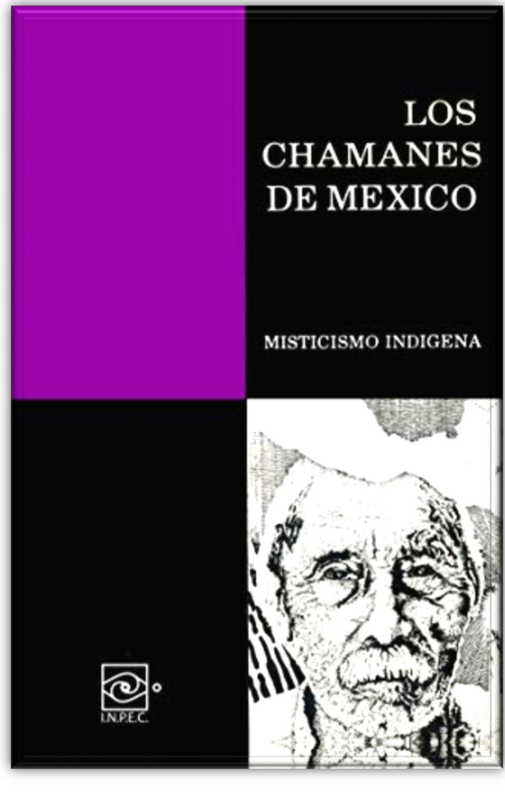
الغلاف الأصلي للنسخة المرفقة
شامانات المكسيك — التصوف لدى السكان الأصليين.
صفحة العنوان المختصر
شامانات المكسيك
المجلد الثاني
التصوف لدى السكان الأصليين
صفحة العنوان
ياكوبو غرينبرغ زيلبرباوم
شامانات المكسيك
المجلد الثاني — التصوف لدى السكان الأصليين
كلية علم النفس — الجامعة الوطنية المستقلة في المكسيك.
المعهد الوطني لدراسة الوعي.
تمويل الدراسة
مُوِّلت هذه الدراسة جزئيًا ببرنامج مشترك بين المجلس الوطني للعلوم والتكنولوجيا (CONACYT) وكلية علم النفس في الجامعة الوطنية المستقلة في المكسيك (UNAM).
مشروع CONACYT: PCCSCNA - 030756.
بيانات الطبعة
الغلاف: خيراردو سوسان.
الطبعة الثانية، المكسيك، 1991.
© ياكوبو غرينبرغ زيلبرباوم.
جميع الحقوق محفوظة في البلدان الناطقة بالإسبانية.
الرقم الدولي المعياري للكتاب: 968-6238-01-8.
طُبع وصُنع في المكسيك.
انتهت طباعة هذا العمل في يونيو 1991 في مطابع شركة «إلكترو كومب» للنشر، شركة مساهمة ذات رأس مال متغير.
شارع تلالبان رقم 1702، حي كانتري كلوب، مكسيكو، المقاطعة الاتحادية.
تتكون الطبعة من 1,000 نسخة.
الفهرس الأصلي — 1
الفهرس
توضيح تحريري: الأرقام التالية هي أرقام الصفحات المطبوعة في الأصل الإسباني. توجد إحالات إلى صفحات ملف المصدر فوق النص المترجم، ويتيح فهرس PDF الجانبي الانتقال إلى الأقسام العربية.
المقدمة — 11.
الفصل الأول: دون بانشيتو من يوكاتان — 13.
الرحلة — 18.
اللقاء — 19.
الجوانب النفسية الفسيولوجية — 28.
خلق الخبرة وفق النظرية السينترجية — 28.
النظرية السينترجية — 30.
المجال العصبي — 30.
التفاعل بين المجال العصبي والبنية الطاقية للفضاء — 32.
التفاعلات بين المجالات العصبية — 35.
المجالات العصبية وبلورات الكوارتز — 39.
عامل التوجيه والمعالج المركزي — 40.
الرحلة الثانية — 43.
الوحدة وراء التعدد — 43.
دون بانشيتو — 46.
اعتبارات نفسية فسيولوجية — 56.
الفهرس الأصلي — 2
الفصل الثاني: سلالة الغرانيسيروس في ولاية موريلوس — 59.
مفهوم الواقع بحسب دون لوسيو — 62.
إجراءات التلقين لدى الغرانيسيروس — 63.
مستويات الواقع لدى الغرانيسيروس — 64.
مراسم الشامانات — 65.
التحكم في الطاقة — 68.
إجراءات الشفاء وتقنياته — 69.
تفريغ محادثة مسجلة بين المؤلف ودون لوسيو — 70.
استنتاجات — 77.
الفصل الثالث: مفهوم التطور في الشامانية المكسيكية — 79.
مفهوم التطور في سلالة دون خوان ماتوس — 81.
مفهوم التطور لدى دون لوسيو من موريلوس — 83.
مفهوم التطور لدى دون بانشيتو من يوكاتان — 87.
استنتاجات عامة — 88.
تفريغ محادثة مع دون لوسيو — 90.
الفصل الرابع: دونيا خوسيفينا من أواكساكا — 113.
غرفة الانتظار — 115.
الاستشارة — 117.
التجربة الشامانية — 119.
الزيارة الثانية — 119.
الزيارة الثالثة — 120.
تفريغ محادثة مع دونيا خوسيفينا — 122.
الفهرس الأصلي — 3
الفصل الخامس: دونيا ريخينا من سييرا مادري — 131.
الفصل السادس: دونيا ماريا من ميريدا — 135.
السلالة — 137.
مفهوم الدماغ المفتوح — 139.
الإجراءات العلاجية — 139.
الشفاء عن بُعد — 140.
طقوس الشموع (الفيلاسيون) — 141.
الحراس — 141.
استنتاجات — 141.
مقابلة الأول من يناير 1986 — 143.
الفصل السابع: دون أنطونيو من كينتانا رو — 157.
أصول قوى دون أنطونيو — 161.
أرواح الجهات الأصلية الأربع — 163.
مراسم العرافة — 164.
استنتاجات — 166.
تفريغ التسجيل الذي أُجري لدون أنطونيو في منزله بكينتانا رو — 168.
الفصل الثامن: كرات العرافة — 175.
الفصل التاسع: دونيا روفينا من بويبلا، بقلم إيلينا إيسلاس وماريا أوخينيا سانشيز — 181.
تقديم، بقلم إدواردو ألميدا أكوستا — 183.
التلقين — 184.
رؤية الواقع — 185.
الفهرس الأصلي — 4
كيف كانت تعمل دونيا روفينا — 186.
كيف كانت تشفي — 187.
الفزع — 188.
السحر أو الأذى — 191.
الهواء المؤذي — 194.
العين — 195.
داء الكواخو — 196.
كيف كانت تحل مشكلات أخرى — 196.
لقاءات المعالجين — 197.
التلاميذ — 197.
الفصل العاشر: دونيا خوسيفينا ميزا من مدينة نيتساهوالكويُوتل — 199.
مقدمة، بقلم إكستاتسيواتل كاراسكو ريفيرا — 201.
دونيا خوسيفينا ميزا من مدينة نيتساهوالكويُوتل — 205.
الحياة اليومية لدونيا خوسيفينا — 206.
تصور دونيا خوسيفينا للواقع — 207.
مفهوم «الحامي» — 208.
إجراءات الشفاء لدى دونيا خوسيفينا — 209.
تعلّم دونيا خوسيفينا — 209.
مفهوم الموت — 210.
خاتمة — 211.
المقدمة
للمكسيك وعيٌ حيّ تشكِّله جميع الأجيال التي عاشت فيها منذ أقدم العصور. يوجّه هذا الوعي التطوّر، وحين يكتسب أحد سكان المكسيك قدرًا كافيًا من القوة، يتمكن من التفاعل معه، متلقيًا بذلك تأثيره. والمقابل الفيزيائي للوعي الحيّ للمكسيك هو مجال فائق، ناجم عن جميع التفاعلات بين أدمغتنا.
يستطيع المتصوفة الأصليون في المكسيك استشعار المجال الفائق ومعرفة حالة الوعي الجمعي بهذه الطريقة. وهم الذين يحددون تدفّق المجال الفائق واتجاه تأثيراته.
يصف هذا المجلد حياة بعض متصوفتنا وأفكارهم وأفعالهم، ويواصل دراسة الشامانية المكسيكية وعلماء النفس الأصليين في المكسيك. ولا تزعم هذه الدراسة أنها مراجعة كاملة لجميع رجال المعرفة في البلاد؛ فعمل كهذا يتطلب أكثر من عمر واحد. ونحن إذ نقدّم هذا العمل إلى جمهور القراء، لا نطمح إلا إلى عرض بعض النماذج لأشخاص استطاعوا الحفاظ على إرث من الحكمة يمتد آلاف السنين.
المقدمة — تتمة
نأمل أن يتعرف المكسيكيون، من خلال هذه المراجعة، إلى أنفسهم بوصفهم أفراد شعب له جذور ثقافية ورصيد من الحكمة يُحسد عليه. فإذا حققنا ذلك، ولو إلى حد ضئيل، يكون هذا العمل قد بلغ غايته.
الفصل الأول
دون بانشيتو من يوكاتان
دون بانشيتو من يوكاتان
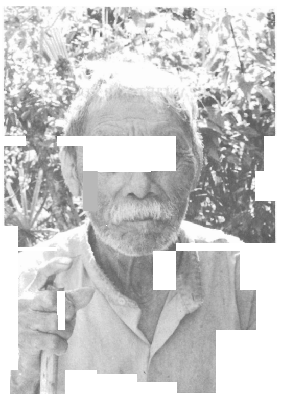
دون بانشيتو من يوكاتان
دون بانشيتو من يوكاتان
سمعت عن دون بانشيتو في الهند. كنت خارجًا من جلسة تأمل في معبد أشرم جمعية الحياة الإلهية في ريشيكيش حين رأيتها. كانت تقف إلى جوار بعض الشجيرات، تتحدث إلى راهب؛ واحدة من أكثر النساء إثارة للاهتمام ممن عرفت. اقتربت منها، وكان وجهها القوي الحازم، الذي يؤطّره شعر داكن، يوحي لي بأصول غريبة ومغامرات سحرية. عرّفتها بنفسي، فأجابتني بإسبانية ذات نبرة تونسية. كان اسمها دانييلا؛ وُلدت في تونس، وهاجرت إلى ميلانو، وأقامت في كانكون خلال السنوات الأخيرة. لفتت انتباهي ندوب في ذراعيها. ولهذا أخبرتني أنها اشتغلت بصيد الكركند في منطقة الكاريبي المكسيكية لتكسب معيشتها، واعترفت لي بأنها تشتاق إلى المكسيك وإلى معلّمها دون بانشيتو. سألتها مندهشًا: «دون بانشيتو؟». فأخبرتني أنه معلّم من المايا، يبلغ عمره 130 عامًا، ويعيش في قرية صغيرة في وسط شبه جزيرة يوكاتان. يقرأ النجوم ويعالج بعقله مستخدمًا الأعشاب.
أثار الأمر اهتمامي بعمق. كنت قد غادرت المكسيك معتقدًا أنني سأتعلم في الهند ما لم يعد بلدي قادرًا على تعليمي إياه، وبحثت طوال شهور عن معلّم بين ورثة الثقافة
البحث عن المعلّم
الهندوسية. ثم ذهبت، خائب الأمل، إلى نيبال لأبحث بين اللامات الذين هاجروا من التبت. وهناك عرفت تقنية الماهامودرا، الموضوعة لمعرفة العقل من الداخل، من خلال عملية ملاحظة متزنة لمحتوياته. وبعد بحث آخر لم يُثمر عن معلّم للماهامودرا بين التبتيين، عدت إلى الهند. وها هم الآن، في ريشيكيش، مدينة القديسين على ضفاف الغانج، يحدثونني عن المكسيك وعن أحد معلّميها؛ وعرف شيء في داخلي أن وقت العودة قد حان.
تعرفت إلى دون بانشيتو بعد ذلك بعدة أشهر. أرشدتني إليه دونيا سارا، إحدى تلميذاته المقيمات في كانكون؛ وكانت هي أيضًا قد أمضت سنوات تبحث عن معلّم. وفي عصر أحد الأيام، حين كانت تستريح قرب سينوتي في يوكاتان، رأت وجهًا منعكسًا على سطح الماء. وعندما تعرفت لاحقًا إلى دون بانشيتو، عرفت أنه معلّمها، لأن ملامحه كانت مطابقة للملامح التي رأتها في السينوتي. رافقتني دونيا سارا في رحلة استغرقت ثلاث ساعات من كانكون لزيارة دون بانشيتو.
وصلنا إلى نفق نباتي يشقّه طريق ضيق، وبعد عدة كيلومترات ظهرت قرية دون بانشيتو، تؤطّرها أطلال كنيسة وشجرتان عملاقتان، غرسهما دون بانشيتو نفسه قبل أكثر من ثمانين عامًا. إلى جوار الطريق، كانت حفرة سينوتي بالغة العمق مكانًا لاجتماع نساء يرتدين الهويبيل وشعورهن مضفّرة. كن يتحادثن بينما نزلت دونيا سارا وأنا من السيارة التي أقلّتنا إلى القرية.
كان الجو يسوده السلام والهدوء، لا يخترقهما إلا قليلًا ضحك طفل أو تغريد طائر. قادتني دونيا سارا في ممر إلى قطعة أرض قائمة على صخرة، وفي وسطها كوخ جدرانه من العيدان وسقفه من سعف النخيل. كان بيت دون بانشيتو. لم أكن قد تصورت قط
توضيح تحريري: السينوتي: حفرة طبيعية أو بئر كارستية مملوءة بالماء، تشتهر بها يوكاتان. والهويبيل: لباس تقليدي لدى نساء من السكان الأصليين.
في أرجوحة دون بانشيتو
أنني قد أتعرف إلى إنسان عمره 130 عامًا، فأطللت بفضول من باب الكوخ. لم أر أحدًا، لكن النظام والنظافة في الداخل غمراني. كانت أرجوحة شبكية بيضاء معلقة بين عمودين من جذوع الأشجار، تطفو في جو ممتلئ بحضور كائن واعٍ تمامًا.
دعتني دونيا سارا إلى الاستراحة في الأرجوحة ريثما ننتظر دون بانشيتو. شعرت أن الدعوة شرف كبير. سألت: «أهذه أرجوحة دون بانشيتو؟»، شاعرًا بأن ذلك يمثل فعلًا من أفعال التلقين. أجابتني بالإيجاب، فاستلقيت وأغمضت عينيّ.
في الحال، ظهر عقلي لي بوضوح تام. كنت أستطيع تتبّع كل فكرة من أفكاري. وإذا نبح كلب، ظهر الصوت ومعه العملية النفسية اللازمة لخلقه. عرفت أن تلك هي حالة الماهامودرا التي طال توقي إليها.
لم أشك في أن دون بانشيتو هو الذي يُدرِك بهذه الطريقة، وأنني، بشغلي أرجوحته وبيته، كنت أستشعر حضوره والطريقة التي يعمل بها عقله عادة. كنت قد أعددت نفسي لمثل هذه الاستشعارات، لكنني لم أتخيل قط أن يوجد ممارس ومعلّم للماهامودرا بهذه الرفعة، وفي بلدي.
استمرت الحالة؛ كان عقلي واضحًا تمامًا و«مرئيًا» لي أنا، صاحبه وسيّده. رأيت أفكاري تنبع من أعماقي، وفجأة استطعت إدراك أصلها. كان ذلك الأصل مصدر البقية: مرآة صافية تعكس جميع خبراتي وتوحّدها. اتحد العالم الخارجي والداخلي في الخلق نفسه، وأنا، بوصفـي ذاتًا، اندمجت أيضًا مع الكل في عناق ذي حسية فردوسية.
في تلك اللحظة رأيت انعكاسًا محمرًا عبر جدران الكوخ الخشبية؛ كان قميص شيخ يقترب من المدخل. كان يمشي ببطء،
الرحلة
مستعينًا بعصا. عرفت أنه دون بانشيتو، فنهضت من الأرجوحة مترقبًا. ظهر عند العتبة؛ كان نحيلًا، خاليًا من الانسدادات. تبادلنا النظر، وانفتح شيء في قلبي. نشأ بيننا ما يشبه تدفقًا من الحب. تعانقنا، ثم قال دون بانشيتو لدونيا سارا إنه كان ينتظرني بالفعل، وإن روحينا متآلفتان. قال ذلك بلغة المايا، وترجمته دونيا سارا إلى الإسبانية. شعرت أنه يعرفني أكثر مما أستطيع أن أعرف نفسي. تحدث عن الحب وعن الله وعن ضرورة أن يساعد البشر بعضهم بعضًا، وعن المعرفة وعن حياتي أنا. أجاب عن أصعب أسئلتي ببساطة ووضوح مهيبين.
طلبت منه أن يسمح لي بالبقاء معه أيامًا، واتفقنا على أن يكون ذلك في زيارة مقبلة.
الرحلة
خلال الرحلة الجوية إلى كانكون، وهي محطة لا بد منها قبل الوصول إلى بايادوليد (Valladolid)، حدث لي ما سبق أن عشته في استكشافات شامانية سابقة: امتزج انفعال المجهول بإحساس بتواصل بالغ الدقة مع الحضور الروحي للشامان. وهذه الخبرة، التي لم تعد تترك لدي مجالًا للشك في واقعيتها بسبب طابعها المتكرر والتزامني، أفهمها بوصفها قدرة العقل الفردي على محاكاة عقول أخرى واستشعار مجالات طاقية. أنا لا أؤمن بالمصادفة؛ وحين شعرت بأنني على اتصال بعقل دون بانشيتو، لاحظت بلا أحكام مسبقة المحتويات التي كانت تنشط في عقلي. وسرعان ما اتضح أنني كنت أدرك
توضيح تحريري: يرد في الأصل التعبير «mentes parentenales». وصف «parentenales» غير مألوف ودلالته هنا غير محسومة؛ نُقل المعنى العام «عقول أخرى»، مع إثبات اللفظ الأصلي للمراجعة.
اللقاء
كائنًا ذا قدرة استثنائية، تتيح له الشعور بنفسه بوصفه نوعًا من المرآة المصقولة القادرة على عكس محتويات متنوعة. بعبارة أخرى، كنت أستشعر الدينامية الداخلية لعقل قادر على رؤية نفسه أثناء خلق واقعه. دوّنت هذا الإدراك في ذاكرتي، واستعددت لبدء البحث عن دون بانشيتو من كانكون.
كانت دانييلا قد أعطتني بعض أرقام الهواتف، وألحت عليّ أن أتصل بالتلميذة الرئيسية لدون بانشيتو، وهي امرأة تدعى سارا. وبعد بعض الجهد، التقيت دونيا سارا، التي شعرت بدفئها وبأنها شخصية مثيرة للاهتمام. حدثتها عن رغبتي في التعرف إلى دون بانشيتو، واتفقنا على الذهاب معًا للبحث عنه في اليوم التالي.
اللقاء
يمر الطريق من كانكون إلى بايادوليد عبر الغابة، وتستغرق رحلته بالحافلة نحو ثلاث ساعات. خلال ذلك الوقت، أخبرتني دونيا سارا أنها اهتدت إلى دون بانشيتو من خلال سلسلة من الرؤى، كانت ترى فيها وجه معلّمها المقبل منعكسًا على ماء سينوتي. والسينوتي آبار هائلة، تكثر جدًا في يوكاتان. أثارت ملامح الوجه المرئي فضولها، فشرعت في بحث بالغ التعقيد قادها أخيرًا إلى صاحب تلك الملامح، الذي تبيّن أنه دون بانشيتو.
بدت لي المرحلة الأخيرة من الطريق إلى قرية دون بانشيتو سحرية تمامًا. قطعنا عشرة كيلومترات من الغابة الكثيفة في ممر ضيق. كنت أحمل معي بلورة كوارتز، وبدأت أشعر
الكوارتز وممارسات العلاج
بنوع من التشبع الانفعالي. أوضحت لي دونيا سارا أن أحاسيسي مرتبطة بالبلورة، وأنها ودون بانشيتو قررا التوقف عن استعمال الكوارتز لاعتقادهما أنه خطير وغير انتقائي.
فوجئت بسماع أن دون بانشيتو وتلميذته يستعملان الكوارتز أيضًا. سألتها عن أصل هذه المعرفة، فأجابت بأن استعمال بلورات الكوارتز أمر طبيعي بالنسبة إليها، وأن المايا يعرفونها ويستعملونها منذ زمن طويل. سألتها عما يستخدم المايا الكوارتز فيه، فأجابت بأنهم اكتشفوا أن بلورة الكوارتز تصلح لاستقبال المعلومات العقلية وإرسالها.* وتابعت: «المشكلة أن المرء يستقبل كل شيء، الجيد والسيئ، ويرسل الشيء نفسه. ولهذا تشعر بالسوء»، قالت باقتناع، «بلورتك تسلبك الطاقة الحيوية وتجعلك حساسًا للتأثيرات السلبية».
كنت قد سألتها عن عمل دون بانشيتو، فأكدت، بين أمور أخرى، أن هذا الشامان-الناهوال خبير في العلاج بالأعشاب. وواصلت: «المعالجون قليلون والسحرة كثيرون. لقد كرّس دون بانشيتو نفسه دائمًا للعلاج، وكثيرًا ما يضطر إلى إبطال أعمال السحر. أما أنا»، تابعت بجدية، «فقد علّمني العلاج، لكن لي حدًا، وما يتجاوز معرفتي، أي الحالات الخطيرة حقًا، أحمله إليه».
وعندما سألتها كيف تنجز أعمالها، أخبرتني بأنها تستخدم في معظم الأحيان أعشابًا منتقاة. وقالت مبتسمة: «المكسيك
حاشية المؤلف: * «في البلورات الكبيرة (من الكوارتز)... تكثر التداخلات المنتظمة مع بلورات كبيرة من الفلسبارات البوتاسية؛ الأورثوكلاز أو الميكروكلين، وهي تذكّر في المقاطع المصقولة بحروف الأبجدية العبرية». بيتختين، أ.، «مقرر في علم المعادن»، دار مير، موسكو، 1970، ص385.
الطريق إلى القرية
ثروتها من الأعشاب لا تُحصى. وفي أحيان أخرى يجري دون بانشيتو عمليات “غير مرئية”، مستخدمًا سكاكين أو أدوات أخرى». شرحت لي دونيا سارا استعمال بعض الأعشاب لعلاج السكري، وكذلك شاي اليانسون لتحسين الذاكرة وتهدئة الانفعالات.
كان الممر الذي نسلكه يبدو لي أكثر سحرًا كلما تقدمنا، وبدأت أشعر بدوار خفيف. كان إحساسي أنني ألج واقعًا آخر، ممتلئًا بطاقة نفسية أقوى كثيرًا مما يحتمله عقلي. أخبرت دونيا سارا بذلك لحظة وصولنا إلى قرية دون بانشيتو، فأمسكت بيدي لتمنحني القوة. شعرت بالارتياح، ونزلت من سيارة الأجرة التي أقلّتنا إلى القرية.
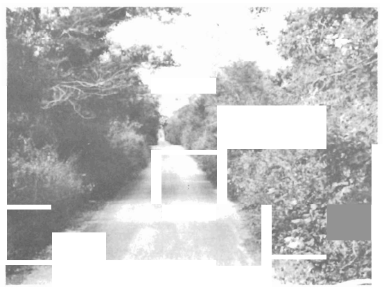
الطريق إلى قرية دون بانشيتو
مذبح القرية
تأملت المكان المحيط وشعرت بأنني مغمور في جو من السلام الشديد. إلى اليمين بدت كنيسة متهدمة هائلة الأبعاد. قالت دونيا سارا إنها على هذه الحال منذ أيام جد دون بانشيتو، وإنها كانت جزءًا من دير. وكانت أمام الدير شجرة غار رائعة ضخمة الحجم يكسوها الخضار، وإلى جوارها جذع جاف تمامًا لشجرة غار عملاقة أخرى، تتناقض حالة تحنّطه الحزينة مع حيوية الغار الحي وبهجته. وحين لاحظت دونيا سارا أنني أتأملهما، قالت: «كلتاهما غرسها دون بانشيتو». شعرت بأن ذلك رمز رائع. قلت لها مندهشًا: «لكن عمرهما أكثر من مئة عام!». فقالت مبتسمة: «تخيّل أن أحد أبناء دون بانشيتو
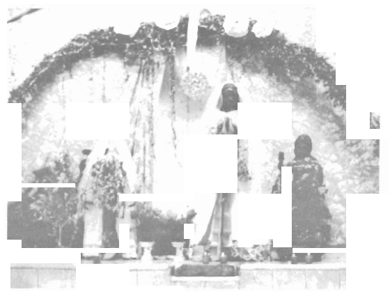
مذبح قرية دون بانشيتو
دخول البيت
قد أتمّ التسعين للتو». عندئذ تذكرت أن عمر دون بانشيتو نحو 130 عامًا، وأنني أوشك على التعرف إليه، وهنأت نفسي على حظي الكبير. ما كنت أعيشه كان حقًا هدية قد لا تتكرر مرة أخرى في حياتي. أخذتني دونيا سارا إلى سينوتي، ثم قادتني بين أكواخ تؤطّرها نباتات الغابة، عبر ممر نحو منزل دون بانشيتو.
وصلنا إلى سور حجري صغير، ودخلنا أرضًا صخرية عبر فتحة ضئيلة فيه. كان صوت أغنية يملأ المكان. تتحدث الأغنية عن شخص يصل أخيرًا إلى مكان السلام والحب بعد ثلاثين عامًا من البحث. شعرت بأنها تتحدث عني، وسرت قشعريرة في ظهري. نظرت إلى دونيا سارا وقلت لها إنه لا شيء يحدث بالمصادفة. ابتسمت. كانت في الأرض أكواخ عدة، جدرانها من العيدان وأسقفها من القش. وكانت ديوك حمراء الذيل تمشي بين دجاجات مرحة، وجراء سوداء بأطواق مصنوعة من أكواز ذرة رفيعة تلعب قرب امرأة ترتدي هويبيل مزينًا بزهور لامعة. نبحت الكلاب في وجوهنا، وأدركت أن كل شيء في الأرض كامل في نظافته ونظامه وترتيبه. قادتني دونيا سارا إلى ربوة صغيرة يزدهر فوقها كوخ دون بانشيتو انطلاقًا من قاعدة صخرية.
دخلنا البيت ولم نجد أحدًا. دعتني دونيا سارا إلى الاستلقاء في أرجوحة ملونة معلقة بجذعين تسندهما أعمدة شجرية. شعرت بأن دعوة الاستلقاء في أرجوحة الشامان-الناهوال شرف كبير إلى درجة أنني شككت في استحقاقي، لكنها أصرت، فقبلت شاعرًا بأنني لا أستحق ذلك. خلعت حذائي واستلقيت بحذر بالغ. كان الكوخ جميل البناء، وأشعرني ترتيب كل ما يحتويه بالاحتضان والسلام. أغمضت عينيّ
وصول دون بانشيتو
وسمعت الريح وغناء الطيور ونباح الكلاب.
كانت جميع الأصوات تنعكس في عقلي، وكان عقلي ينقّيها كما لو كان شبكة تمر عبر سائل وتصفّي محتوياته المتصلبة. عرفت أنه ليس عقلي، بل عقل دون بانشيتو، هو الذي يُحدث ذلك النظام، وأن كل شيء في المكان كان محتوى داخل عقله الشامل. أغرقني إحساس بالعودة إلى البيت في نوم لذيذ، لا أذكر منه سوى شعور بالسكينة والحب. وفجأة تحرك شيء إلى يميني، واستطعت رؤية انعكاس أحمر يقترب من باب الكوخ. ظهر عند المدخل جسد نحيل، لا أثر للدهن فيه، يحمل عضلات هرمة لكنها سليمة، ويعلوه رأس أشيب. كان دون بانشيتو. تلمع عيناه، ويعبّر وجهه عن واقع من السلام.
شعرت لدى رؤيته بأنني أعرفه من قبل، فنهضت لتحيته. أخذ يدي، وذكّرني وجهه الهادئ النحيل وشاربه الأبيض بجدّي لأمي. ملأتني موجة من المودة، وانتشرت من صدري. كان لا يتحدث إلا المايا، فقال شيئًا لدونيا سارا، فترجمته: «يقول دون بانشيتو أن تجلس، وإنك مرحب بك». طلبت منها أن تخبره بأنني شعرت بحضوره منذ الطائرة، وأنني حين انتظرته مستلقيًا في الأرجوحة تأكدت من أن عقله مرآة واعية بنفسها وبالواقع الذي تخلقه. ابتسم عندما ترجمت كلامي، مع أنه كان أثناء حديثي يوليني انتباهًا مدهش التركيز، حتى إنني كدت أحس إحساسًا لمسيًا بضغط عقلي صادر من عينيه. قالت دونيا سارا مبتسمة: «يقول دون بانشيتو إنه كان ينتظرك أيضًا، وإنه شعر باقترابك، وإن روحيكما متآلفتان جدًا، وإنه سعيد بمجيئك». قلت لها: «أخبريه بأنني، قبل المجيء، تحدثت مع دون
الجسد والعقل
لوسيو، وإنه رآه بصحة جيدة، وأمامه سنوات كثيرة، مكافأة من الله على حياته». رفع دون بانشيتو رأسه بإشارة مميزة للانتباه المركّز، وأجاب دونيا سارا بأنه فحص نفسه ولاحظ أن رئتيه لن تصمدا زمنًا طويلًا بعد.
هناك أشخاص يجعلون المرء يشعر بأنه في مركز جوهره الخاص. كان دون بانشيتو يجعلني أشعر بذلك، ولم أكن أريد حينها إلا أن أخبره وأبقى معه. تخيلت حياتي إلى جوار هذا المعلّم العظيم، وفجأة جعلتني لغته وملامحه وتصرفاته أشعر بأنني في مكان بعيد جدًا وفي عصر آخر: اليابان ربما، أو التبت أو الصين. خلف هيئته النحيلة، وحول وجهه، جعلتني أعواد جدار الكوخ وما يتخلّلها من ضوء ساطع أستعيد تلك الذكرى بمزيد من الوضوح، وكانت تنفذ عبر مرشّح عصبيّ ما فتوقظ وعيي.
بينما كنت أفكر، واصلت دونيا سارا ودون بانشيتو حديثهما بالمايا. كنت أحاول فهم كيف استطاع جسد إنسان أن يصمد 130 عامًا، ويظل يبدو بهذه الصحة. كان انطباعي أن عقل دون بانشيتو يطفو حول جسده، شاغلًا الكوخ والأرض المحيطة، وأن جسده قائم كبنية لن يؤثر اختفاؤها في ذلك العقل أدنى تأثير. وبطريقة ما، فإن طول العيش في مراقبة نفسه قد حرر العقل من الجسد. ولهذا كان دون بانشيتو خالدًا بالفعل. قطعت دونيا سارا أفكاري فجأة: «يقول دون بانشيتو إننا لم نصنع الجسد، ولذلك يجب أن نعتني به. ويقول»، تابعت بنبرة جادة، «إن علينا أن نحب بعضنا بعضًا، وألا نتقاضى أجرًا على علاجاتنا أبدًا». كان لدي انطباع بأنه يقرأ أفكاري، وأنه استطاع الدخول
أسئلة عن الذات
إلى داخلي كما لو كان أنا نفسي. شعرت بأن سؤالًا حاولت عبثًا أن أجيب عنه منذ سنوات طويلة عاد إلى وعيي، لكن مع إمكانية لتوضيحه هذه المرة. طلبت من دونيا سارا: «اسأليه من فضلك: هل نحن في أعماقنا جميعًا كينونة واحدة؟». ساد صمت لحظة قبل أن يجيب وتترجم: «يقول دون بانشيتو إن الله خلقنا جميعًا، وإن كل واحد منا فرد مختلف، لكننا في أعماقنا نتشابه كثيرًا بعضنا مع بعض». طلبت: «اسأليه هل هذه الفردية دائمة». إما أنه لم يجب، أو أن دونيا سارا لم تترجم؛ لكن السؤال الأخير بقي بلا جواب.
قالت دونيا سارا فجأة: «يقول دون بانشيتو أن تراجع كتابك وترى ما يقوله عن أسئلتك». كان دون لوسيو قد ذكر ذات مرة أن كل واحد منا، نحن البشر، يكتب كتابًا بحياته، وأن ذلك الكتاب غير المرئي يظل مرجعًا دائمًا لتوجّهنا.
أجبته بأن كتابي يتفق مع ما قاله. كانت عيناه تلمعان، لكنهما مليئتان بإعتام عدسة العين؛ وكان يعطي انطباعًا بأنه أعمى تمامًا ويدرك بالرؤية خارج العينين. كانتا تنظران إليّ حينها، وشعرت أنهما تنفذان عبر كياني. وفي الواقع، كان قد قرأ أو استشعر أفكاري عدة مرات، ووصف في مرات أخرى سمات شديدة الخصوصية فيّ.
بعد أن نظر إليّ، التفت إلى دونيا سارا وأخبرها بشيء. ترجمت: «لنا قسمان، قسم للخير وآخر للشر. ينصحك دون بانشيتو بألا تسمح أبدًا لنصف الشر أن يستولي على الآخر، بل العكس».
تلك النصيحة، التي كانت ستبدو لي على لسان شخص آخر كلامًا عاديًا جدًا، اكتسبت على لسانه معنى عميقًا. كدت أسأله
الأحلام والوداع
إن كان التمييز بين الخير والشر تحدده الكبرياء، لكنني أمسكت عن السؤال. كنت أعرف تمامًا ما يقصده دون بانشيتو.
كنا قد أمضينا الأسبوع كله معًا، وكنت أعرف أن لدونيا سارا التزامًا مهمًا في كانكون، وأن علينا المغادرة قريبًا. شعرت مجددًا برغبة في البقاء معه، وأخبرته بذلك. أجاب بأن الوقت غير مناسب الآن، لكن إن عدت بوقت أوسع أمكننا العمل. سألته كيف أبلغه بتاريخ وصولي المقبل، فأجاب ألا أقلق، فهو سيعرف. سألته مرة أخرى كيف سيعرف؛ وبعد أن نظر إلى دونيا سارا بتعبير مستغرب، تحدث معها عدة دقائق. كانت المودة الكبيرة التي يكنّها كل منهما للآخر واضحة. تلامست أيديهما أثناء الحديث، وكانت دونيا سارا تضحك مسرورة مما بدا أنها دعابات طريفة جدًا من دون بانشيتو.
حين انتهيا، نظرت إليّ دونيا سارا وقالت إنه تلقّى جميع معارفه في الأحلام، وإن عليّ أن أعتني بأحلامي، وأن أنام كثيرًا وجيدًا، لأنه سيتواصل معي من خلال أحلامي.
سرّني ذلك، وشكرته مقتربًا لأعانقه. مال إلى الجانب الأيمن من رأسي، وشفط الهواء بصوت أجوف، ثم كرر العملية نفسها إلى اليسار. شعرت بانتعاش لطيف في داخلي، وفهمت أنها تقنية شامانية للتنظيف والعلاج.
ودّعناه وغادرنا الكوخ. وفي الخارج كانت فتاة في الخامسة عشرة تغسل الملابس. عرّفتني إليها دونيا سارا بوصفها حفيدة حفيد دون بانشيتو. وبينما كنا ننتظر وسيلة النقل للعودة إلى بايادوليد، رأينا طفلًا من القرية يلعب بإطار، مقلدًا أصوات الطيور.
الجوانب النفسية الفسيولوجية
كنا إلى جوار السينوتي حين علقت دونيا سارا على براعة الطفل في تقليد التغريد. فجأة ذكّرني ذلك بمشكلة شخصية لم أستشر دون بانشيتو بشأنها، فطلبت منها أن تذهب وتخبره، وعدنا معًا إلى الكوخ. كان لا يزال مستلقيًا في أرجوحته. تحدثت إليه، ثم أخبرتني بأنه يذكّرني مرة أخرى بأن أنتبه جيدًا لأحلامي، لأنني سأتلقى فيها أجوبة أسئلتي.
الجوانب النفسية الفسيولوجية
خلق الخبرة وفق النظرية السينترجية
في الحقيقة، أكثر وقائع الكون إدهاشًا هي الخبرة الواعية. فكل خبرة تمثل حدثًا معجزًا يفلت من الاعتبارات الفيزيائية ولا يمكن تفسيره على أساسها. بل يبدو أن الخبرة هي حد العلم نفسه. فالعلم يستطيع وصف الأحداث الدماغية المرتبطة بإدراك صوت أو ضوء، لكن خبرة الضوء أو الصوت نفسها لا يمكن معرفتها إلا من خلال الخبرة. للتحليلات المنطقية والعقلانية حدّها حيث يبدأ الإحساس.
توضح الحجة التالية ذلك. لنفترض أننا نريد تحديد ضوء ينتقل عبر الفضاء تحديدًا فيزيائيًا. لن تشير أدواتنا إلا إلى وجود تغيرات موجية، أو جسيمات، أو تشوهات في الزمكان، وغير ذلك. لكننا لن نستطيع أبدًا أن نفترض، بالاعتماد وحده
خلق الخبرة — تتمة
على هذه القياسات، أن شيئًا كالضوء موجود في الكون. ففي الواقع لا تستطيع أي أداة التعرف إلى الضوء بوصفه ضوءًا، بل إلى تغيرات طاقية مرتبطة به فقط. بعبارة أخرى، لا يوجد ضوء بما هو ضوء خارجنا وقبل تدخلنا. كذلك لا يوجد الصوت أو الحرارة في الكون الفيزيائي. ولو كان الأمر كذلك، لكان بالإمكان العثور على تلك الكيفيات الحسية داخل دماغنا. وكل عالم فسيولوجيا يعرف أن ذلك مستحيل. توجد داخل الدماغ تغيرات أيونية وكهربائية ومغناطيسية وكيميائية حيوية مرتبطة بتنشيط عصبوناته ونواه، لكن أحدًا لن يستطيع قط رؤية ضوء أو سماع صوت داخل الكتلة الدماغية.
بل إن التنشيط العصبي للقشرة السمعية المسؤولة عن الإحساس بالصوت عند استثارتها، لا يختلف كثيرًا عن التنشيط نفسه في القشرة البصرية التي تزودنا بخبرات ضوئية، رغم ارتباطهما بتنشيط عمليات طاقية أولية متشابهة. ومن ثم لا تستطيع هذه العمليات تفسير الكيفية الحسية ولا اختلافاتها. لذلك لا توجد آثار للكيفيات الحسية، لا خارج الدماغ ولا داخله.
السؤال الواضح هو تحديدًا: كيف وأين تظهر كيفية الضوء أو الصوت، إذا كانت البنية التي تنشط لإنتاجها غير قادرة على امتلاك هذه الخبرات في نشاطها الفيزيائي الكيميائي، وكان الفضاء المحيط بتلك البنية لا يمتلكها أيضًا؟ سأحاول تقديم رؤية نظرية عامة تسعى إلى تفسير أصل الخبرة. أسميها النظرية السينترجية،¹
حاشية المؤلف: 1. غرينبرغ زيلبرباوم، ي.، «أسس الخبرة» (Los fundamentos de la experiencia)، دار تريّاس، المكسيك، 1980.
النظرية السينترجية والمجال العصبي
وهو لفظ مستحدث يجمع بين مصطلحي «التركيب» و«الطاقة». سأحاول تفسير خبراتي مع دون بانشيتو اعتمادًا على هذه النظرية.
النظرية السينترجية
الفرضية الأساسية لهذه النظرية هي أن الخبرة تنشأ نتيجة ثلاث عمليات تفاعل. أولها تفاعل بين عناصر عصبية، قادر على إنشاء مجال طاقي معقد يُسمّى المجال العصبي.
ويحدث التفاعل الثاني عندما يتصل المجال العصبي بالبنية الطاقية للفضاء. يخلق التفاعل بين المجال العصبي والفضاء نمط تداخل يُسمّى البنية الطاقية للخبرة.
وتحدث عملية التفاعل الثالثة بين البنية الطاقية للخبرة ومعالج مركزي. هذا التفاعل هو أشد التفاعلات غموضًا، وينطوي على وجود تركيز طاقي يتحقق بواسطة عامل توجيه افتراضي.
وفق النظرية السينترجية، يمر كل كائن حي قادر على الخبرة أو الإحساس بعمليات التفاعل الثلاث. ومن الواضح أن مستويات الخبرة لدى كل كائن تعتمد على تعقيد مجاله العصبي، الذي يعتمد بدوره على تعقيد الدماغ الذي ينشأ منه المجال.
المجال العصبي
ذكر كارل بريبرام² ذات مرة أن مقدار التفاصيل في مُدرَك بصري ينبغي أن يرتبط
حاشية المؤلف: 2. بريبرام، ك.، اتصال شخصي، 1982.
المجال العصبي — تتمة
ويستند إلى نشاط دماغي قادر على احتواء مقدار مماثل من التفاصيل وإظهاره. ورأى أن أفضل المرشحين لاستيفاء هذا الشرط هي الجهود الدقيقة للتغصّنات العصبية؛ إذ يمكن لتقلباتها الضئيلة في الجهود الكهربائية، ضمن جماعات كبيرة من العصبونات، أن تولّد جبهات موجية قادرة على السفر والانتقال عبر بنية الدماغ ثلاثية الأبعاد.
لا يفصل هذه الفكرة عن افتراض المجال العصبي إلا خطوة صغيرة. يمكن افتراض أن مجموعات الجبهات الموجية المذكورة تشكّل جزءًا من مجال طاقي فائق التعقيد. وفي هذا السياق، ينشئ كل عصبون مجالًا دقيقًا ناتجًا عن التذبذبات الكهروكيميائية لغشائه الخلوي. يتفاعل كل مجال دقيق مع جيرانه، وهكذا تبدأ من داخل الدماغ نفسه أنماط تداخل وجبهات موجية، تتعقد كلما شارك عدد أكبر من العناصر في إنتاجها.
يمكن ربط المجال العصبي بما سبق، مع إضافة أنه لا ينبغي أن يتكون من تغيرات كهروكيميائية عبر أغشية التغصّنات وحدها، بل يجب أن تشمل عناصره المكوّنة مجموع النشاط الدماغي وجميع مستوياته؛ من تلك الناجمة عن تدفق الأيونات عبر الأغشية، إلى التغيرات الكمومية في كل عصبون، بوصفه عاملًا قادرًا عند تنشيطه على إحداث تشوه في الزمكان. وقد يتكوّن المجال العصبي أيضًا، وفق هذا التصوّر، من مجموع هذه التشوهات في الزمكان.
عُرضت أدلة على وجود المجال العصبي في مقالات أخرى،³ وإن كان يمكن هنا
حاشية المؤلف: 3. غرينبرغ زيلبرباوم، ي.، «الدماغ الواعي» (El cerebro consciente)، دار تريّاس، المكسيك، 1980.
التفاعل بين المجال العصبي والفضاء
ذكر أنه صار ممكنًا تسجيل مجال مغناطيسي في الفضاء خارج الجمجمة باستخدام التقنية الجديدة لتخطيط مغناطيسية الدماغ.⁴ يسجل مخطط مغناطيسية الدماغ مجالًا طاقيًا ناتجًا من النشاط الدماغي، قد يكون جزءًا من المجال العصبي. وإذا صحت فكرة بريبرام، فقد يمثل شكل المجال العصبي هندسة ما ندركه كصورة، بحيث يمكن القول إن ما نراه انعكاس لأنفسنا، وإن كل صورة تمثل أحد مستويات توسّع المجال العصبي. وسنرى أن هذا التصور محدود جدًا، لأنه لا يأخذ في الحسبان تفاعل المجال العصبي مع البنية الطاقية للفضاء ومع المجالات العصبية الأخرى.
التفاعل بين المجال العصبي والبنية الطاقية للفضاء
إذا كان المجال العصبي شبيهًا بأي مجال طاقي آخر تصفه الفيزياء، فمن الممكن افتراض قدرته على الإشعاع من مصدره إلى الفضاء المحيط. كذلك ينبغي أن يكون قادرًا على التفاعل مع المجالات الطاقية العابرة للفضاء، وأن تطرأ عليه تعديلات نتيجة هذا التفاعل.
وفق ملاحظاتي مع دون بانشيتو، يستطيع هذا الشامان إحداث تفاعل قوي ومباشر مع الفضاء ومجالاته المعلوماتية. وتتفق هذه الملاحظة مع ما سبق التعبير عنه.
حاشية المؤلف: 4. Reite, M.; Zimmerman, J.; Edrich, J.، «مخطط مغناطيسية الدماغ البشري» (The Human Magnetoencephalogram)، Electroencephalography and Clinical Neurophysiology، المجلد 40، ص59–66، 1976.
المعلومات واتساق الفضاء
يحوي الفضاء المحيط بأي جسم معلومات عن ذلك الجسم. فالمراقب الموجود على أي مسافة من صخرة يستطيع إدراكها بالعين المجردة أو باستخدام أداة تكبّر جزء الفضاء الذي تتقاطع معه شبكيته. وفي الواقع لا يوجد فضاء خال تمامًا من المعلومات. فالفضاء كله ممتلئ بها؛ وأينما وُضع جهاز حساس أو مراقب حي، استطاع استشعار المعلومات التي يحتويها الفضاء وفك ترميزها. لكن تنظيم المعلومات في كل نقطة من الفضاء ليس متجانسًا. وربما تتلاقى المعلومات القادمة من الكون كله في كل نقطة متناهية الصغر يمكن تقسيم الفضاء إليها. وإن لم يكن الأمر كذلك، فالأرجح أن المعلومات الواردة من أجزاء واسعة من الكون تتلاقى في كل جزء ضئيل من الفضاء. وتكون منطقة من الفضاء بعيدة عن أي جسم، وفي مركز الكون، قادرة على احتواء جميع المعلومات بتنظيم متسق؛ بينما يحتوي جزء قريب من جسم المعلومات نفسها، لكن بصورة أقل اتساقًا. ويمكن في الواقع افتراض وجود مناطق في الكون تتصف باتساق معلوماتي أكبر أو أقل. ويرتبط الاتساق بدوره بالتكرار المعلوماتي.
يشهد المراقب الموجود على مسافة شاسعة من جسم هذا التكرار المعلوماتي، حين يلاحظ أن رؤية الجسم تبقى نفسها مهما اختلفت منطقة الفضاء التي يمر بها. ويمكن بهذا تفسير ظاهرة معروفة جدًا في علم النفس، هي الحركة الظاهرية ومتابعة الجسم. مثلًا، سيلاحظ مراقب يتحرك في خط مستقيم على سطح الأرض أن أجسامًا بعيدة كالقمر تبدو وكأنها تتبع حركته، بينما لا تفعل الأجسام الأقرب
المتصل السينترجي
الشيء نفسه. تتمثل الأجسام الأبعد بصورة أكثر اتساقًا وتكرارًا في الفضاء الذي يمر به المراقب، مقارنة بالأجسام الأقرب. وبهذه الطريقة يمكن تصور وجود مستويات من الاتساق المعلوماتي في الفضاء.
يمكن تحديد متصل من الاتساق الأعلى إلى الأدنى، مرتبط بمتصل من التكرار المعلوماتي الأعلى إلى الأدنى؛ وأسمي هذا المتصل «المتصل السينترجي». فالفضاء العالي السينترجية هو الذي توجد فيه نقاط أو أجزاء ذات اتساق وتكرار أكبر، بينما يتكون الفضاء المنخفض السينترجية من عناصر قليلة الاتساق والتكرار.
يخطر لي أن خبرة دون بانشيتو معي، بمعنى قدرته على الإحساس باقترابي، مرتبطة بقدرة استثنائية على استشعار تغيرات سينترجية شديدة الدقة في نمط تداخله، ناشئة عن تعديلات ضئيلة في تنظيم الزمكان. لا بد أن مجالي العصبي كان يغيّر سينترجية يوكاتان، لكن بدرجة مجهرية إلى حد لا يستطيع معه استشعار تعديلات بهذه الضآلة إلا عقل يمتلك قدرة استثنائية على فك الترميز. ويبدو أن دون بانشيتو يمتلك هذه القدرة.
وترتبط بالسينترجية المكانية ظواهر أخرى، كالجاذبية والزمن.
الفضاء القريب من كتلة هو فضاء منخفض الاتساق، وفي الوقت نفسه تكون فيه قوى الجاذبية أشد ويتدفق الزمن أسرع منه في فضاء عالي الاتساق بعيد عن أي كتلة. وتشبه العلاقة العكسية بين الجاذبية والاتساق العلاقة بين انحناءات الفضاء والجاذبية. فالفضاء العالي الاتساق يكون بلا انحناءات،
توضيح تحريري: نُقلت عبارة المؤلف عن سرعة الزمن قرب الكتلة كما وردت؛ لم يُعدَّل مضمونها الفيزيائي داخل الترجمة.
السينترجية والتفاعلات بين المجالات العصبية
وتكون حقول الجاذبية فيه ضعيفة. أما الفضاء المنخفض الاتساق ففيه تشوهات وانحناءات وقوى جاذبية شديدة.
يتغير المجال العصبي أيضًا على امتداد متصل سينترجي، بحسب درجة اتساق النشاط الدماغي الذي يولّده. فالدماغ في حالة عالية الاتساق ينشئ مجالًا عصبيًا عالي السينترجية.
يمكن افتراض أن بنية الزمكان نفسها قابلة للتأثر بسينترجية مجال عصبي. وهكذا يزيد المجال العصبي العالي الاتساق اتساق الزمكان، ومن ثم سينترجيته.
وإذا صح هذا، أمكن توقع أن يستطيع الدماغ التأثير في شدة مجال جاذبية.
حُصل على أدلة متفقة مع ما سبق في تجربة أُجريت قبل سنوات،⁵ رُصدت فيها تغيرات في وزن جسم مرتبطة بتغيرات الاتساق بين نصفي دماغ أحد الأشخاص.
وتشير الخبرات مع دون بانشيتو إلى أن مجاله العصبي لا يشع في كامل محيط عيشه فحسب، بل يؤثر أيضًا في عقول من يتصلون به. وسيناقش هذا في القسم التالي.
التفاعلات بين المجالات العصبية
إذا كان المجال العصبي قادرًا على التأثير في بنية الزمكان، فهو أولى بالقدرة على تغيير
حاشية المؤلف: 5. غرينبرغ زيلبرباوم، ي.، «الارتباطات النفسية الفسيولوجية للتواصل والجاذبية والوحدة» (Psychophysiological Correlates of Communication, Gravitation and Unity)، Journal of Psychophysical Systems، المجلد 4، ص227–256، 1982.
التواصل والخبرة الجمعية
تنظيم المجالات العصبية الأخرى التي يتفاعل معها. وبالمثل، إذا صح أن الخبرة تتعدل عندما يطرأ تغير على المجال العصبي في تفاعله مع الزمكان، أمكن افتراض أن شخصًا يستطيع التفاعل مباشرة مع آخر وتعديل خبرته بذلك.
هذه التفاعلات هي الوسيلة التي يتحقق بها ما يسميه التحليل النفسي عمليات التحويل، التي تُسقط فيها خبرة شخص على آخر. وبالطريقة نفسها، يمكن أن تقوم أحداث التواصل المباشر بين البشر، وخلق أنماط مشتركة من الخبرات والسلوكيات، على عمليات التفاعل بين المجالات العصبية الفردية.
أعتقد أن هذا التفاعل حدث بين كياني وكيان دون بانشيتو من خلال تفاعل مجالينا العصبيين.
بهذا وحده أستطيع تفسير لماذا بدأت أشعر بحضوره منذ مغادرتي مدينة مكسيكو، ولماذا شعر هو باقترابي، والأهم كيف استطعنا التواصل في قريته، إلى حد أنني كنت أشعر بحالة عقله، وهو بحالة عقلي.
إذا نظرنا إلى هذا التفاعل من منظور الزمكان، أمكن افتراض أن السائد في مستوى معين من الواقع هو مصفوفة طاقية شاملة، تتكون من تركيب الخبرات الفردية وامتزاجها؛ وأن القادر على اختبار هذا المستوى سيعيش الوجود بوصفه مؤلفًا من الخبرة المشتركة. بعبارة أخرى، سيختبر الواقع من منظور جمعي. ويبدو أن دلالة ذلك على إمكان اختبار الوعي الجمعي مباشرة، بل ما يمكن تصوره وعيًا كوكبيًا، نتيجة ثابتة للتصور السينترجي،
مستويات التجريد والاتصال بالأنا
وخبرة مشتركة لدى المتقدمين في التأمل. ومن هذا المنظور يمكن افتراض أن درجات التطور المختلفة تقابل مستويات متنوعة من الحساسية، بحيث يعيش شخص نفسه ويختبر محيطه في مستوى ملموس، بينما يستطيع آخر اختبار العالم بوصفه مصفوفة من الأفكار أو التجريدات.
يبدو أن عقل دون بانشيتو يعمل في مستوى بالغ الارتفاع من التجريد؛ والدليل على ذلك قدرته على جعل من يحاوره يشعر بصلة حميمة بذاته، أو بما يسميه الكاتب «الأنا». فالاتصال بالأنا تحديدًا أحد أعلى مستويات التجريد. ولأن هذه الخبرة نشطت فيّ لمجرد اتصالي بدون بانشيتو، فقد يدل ذلك على أن مجالًا عصبيًا عالي السينترجية، يشع من دماغه، كان المسؤول عنها.
لا بد أن ترتبط الفروق في مستويات التجريد بالخصائص الطاقية للمجالات العصبية الفردية، وأن ترتبط هذه بدرجة تطور دماغ كل شخص. وهكذا فإن دماغًا قادرًا على العمل بدرجة عالية من التكامل سيخلق مجالًا عصبيًا يستطيع إقامة تفاعل متوافق مع مستوى عالي السينترجية من المجال المكاني؛ وهذا يضع الشخص في خبرة من الرهافة والتجريد تجاه الواقع. أما الدماغ غير القادر على تكاملات قوية، فلن يستطيع التفاعل مع مستويات عالية السينترجية من المجال المكاني، ومن ثم تكون خبرته ملموسة. في الحالة الأولى يوجد اتصال بالأنا، وفي الثانية لا يوجد. ووراء الاعتبارات السابقة⁶
حاشية المؤلف: 6. غرينبرغ زيلبرباوم، ي.، «مدارات الوعي» (The Orbitals of Consciousness)، Journal of Psychophysical Systems، المجلد 5، ص235–242، 1983.
العوالم الكونية والتعلّم في الأحلام
تقف فكرة أن كل إنسان مستقبِل مختلف لمستوى مختلف أيضًا من المجال؛ وأن صفة الاستقبال لا تتموضع في مرشح متجسد يكون الدماغ أبرز عناصره، بل في المستوى الخاص المتوافق من التفاعل بين المجال العصبي والمجال المكاني. فنمط التداخل الناتج عن التفاعل السينترجي بين المجالات هو أقرب مقابل للخبرة. وفي هذا التفاعل أيضًا يوجد صاحب الخبرة، الذي يغيّر موضع تركيزه تبعًا لخصائص المجالات المتداخلة سينترجيًا.
يرتبط بما سبق ما يسميه المتصوفة العوالم الكونية.⁷ فوفق التصوف اليهودي، يتصل كل إنسان في تفكيره الفردي بعالم نموذجي أصلي توجد فيه جميع الأفكار. وينشأ الفكر الفردي، بهذا المعنى، من العالم النموذجي للفكر الكوني. وبالمصطلحات الفسيولوجية، يرتبط ذلك بتنشيط أنماط تداخل شاملة ناجمة عن جميع التفاعلات بين المجالات العصبية، وهي، كمصفوفة فائقة التعقيد، جزء من مجال الزمكان، يتفاعل معها كل مجال عصبي فردي.
ترتبط إمكانية تلقي التعاليم أثناء النوم بما سبق. ويمكن افتراض أن الحساسية تكون في أقصاها في تلك الحالة، وأن ذلك، مقترنًا بالتحكم الإرادي في عامل التوجيه، قد يفسر ما ذكره دون بانشيتو في ختام لقائنا، أي إمكانية
حاشية المؤلف: 7. غرينبرغ زيلبرباوم، ي.، «حول العلاقات بين النشاط الدماغي والخبرة الواعية» (Acerca de las relaciones entre la actividad cerebral y la experiencia consciente)، نشرة الجمعية المكسيكية للعلوم الفسيولوجية، 1985.
المجالات العصبية وبلورات الكوارتز
البقاء على اتصال أثناء النوم، وتلقي التعليم في حالة الحلم.
المجالات العصبية وبلورات الكوارتز
تعتمد الخصائص المحددة للفكر الفردي على مستوى التفاعل بين المجال العصبي الفردي والمصفوفة فائقة التعقيد الناجمة عن تفاعل جميع المجالات العصبية. بعبارة أخرى، يحدد مستوى اتساق المجال العصبي الفردي مستوى الزمكان الذي سينشأ معه نمط تداخل متوافق.
وبما أن الشكل الطاقي للمجال العصبي يمكن أن يتعدل بفعل بُنى كتشريح الدوائر العصبية، يمكن افتراض أن بلورات الكوارتز تستطيع تعديله أيضًا. وتتميز هذه ببنية جزيئية عالية الاتساق. ومن المحتمل أن تفاعل مجال عصبي مع بلورة كوارتز يزيد اتساق المجال، مما يزيد بدوره قدرته على التفاعل مع الزمكان. وقد يفسّر ذلك كيف يمكن للبلورة أن تعمل وسيلةً لاستقبال المضامين الذهنية وإرسالها. كانت معرفة هذه الظاهرة جزءًا من تراث المايا منذ زمن طويل، وكانت معروفة أيضًا في الأوساط القبالية في العصور الوسطى. وكان القباليون يقولون إن البلورات وأسطح الماء تعمل مرايا لعقل الآخر.
وتتفق خبرة دونيا سارا في رؤية ملامح دون بانشيتو على سطح السينوتي، وأوصاف خبراتي مع بلورات الكوارتز، مع التأويلات السابقة.
عامل التوجيه والمعالج المركزي
نجري حاليًا سلسلة تجارب لدراسة تغيرات الاتساق بين نصفي الدماغ لدى أشخاص على اتصال ببلورات الكوارتز. ومع أننا لا نملك بيانات دقيقة، يبدو أن الاتصال بالبلورة يولّد حالة من الحساسية الداخلية الأكبر، تتجلى في إحساس بتضخيم المحتويات النفسية.
عامل التوجيه والمعالج المركزي
من أكثر جوانب خبرة دون بانشيتو استثنائية قدرته على الوعي. ويبدو أن وعيه بلغ من الحِدّة حدًّا يتيح له أن يتبيّن كيف تتكوّن خبرته الواعية. وتتطلب محاولة تفسير هذه الخبرة من منظور النظرية السينترجية فهم مفهوم المعالج المركزي وعامل التوجيه.
كما رأينا، يؤدي التفاعل بين المجال العصبي ومجال الزمكان إلى نمط تداخل هو البنية الطاقية للخبرة.
وبما أن هذه البنية شاملة لكل شيء، بينما الخبرة الواعية اليومية مركزة، فمن الضروري افتراض آلية تركيز تسمح بإيصال منطقة واحدة وجزء واحد ومستوى واحد فقط من البنية الطاقية الكلية للخبرة إلى الوعي.
سمّيت هذه الآلية «عامل التوجيه».⁸ يعمل عامل التوجيه كرأس رمح يضفي الوعي على منطقة نمط التداخل التي
حاشية المؤلف: 8. غرينبرغ زيلبرباوم، ي.، «الفضاء والوعي» (El espacio y la conciencia)، دار تريّاس، المكسيك، 1981.
الوعي الأولي والخواء
يتركز عليها. ونمط التداخل والبنية الطاقية للخبرة نمطان طاقيان محايدان إزاء الوعي، ولا يُظهران وحدهما الكيفية الواعية.
عامل التوجيه وسيط بين هذين النمطين الطاقيين والوعي. والوعي لا ينبثق من تنظيم معقد للمادة ولا ينتج عنه، بل يوجد في ذاته بوصفه المعطى الأول الذي يُخلق منه الكون الفيزيائي. وأسمي هذا الوعي الأولي المستقل «المعالج المركزي».
يخضع عامل التوجيه للمعالج المركزي وينبع منه، عاملًا وسيطًا بينه وبين البنية الطاقية للخبرة.
إن اكتساب السيطرة على تركيز عامل التوجيه علامة على التطور، ومن أعلى مستويات التطور أن يكتسب الإنسان وعيًا بوجود المعالج المركزي. يكون عامل التوجيه عادة ثابتًا في موضع. ويتعلم الشامان تغيير موضع عامل توجيهه بإرادته، منفتحًا بذلك على حقائق أخرى. وفي لحظة الانفتاح هذه يتركز عامل التوجيه على أصله نفسه، وينشط الوعي الخالص. ويبدو أن دون بانشيتو يوجد في هذا الوعي الذي يؤسس خلق الخبرة.
وقبل أن أختم، أود أن أذكر أن خلق الخبرة يرتبط في البوذية بالشونياتا، أي الخواء. ويقال إن بوذا أدرك أن لا شيء موجود في ذاته، بل إن كل شيء نتيجة لأسباب سابقة.⁹ وهكذا تكون الصخرة شونياتا من حيث إنها لا توجد في ذاتها، وكذلك جسد الإنسان
حاشية المؤلف: 9. اللاما لوندروب، اتصال شخصي، 1984.
معرفة الذات والجسد
أو الشجرة. وعند الوعي بخلق الخبرة، يدرك الإنسان أنه يخلق خبرته الواعية بكل محتوياتها، وأن هذه لذلك تعتمد على قدرته الخلاقة أكثر مما تعتمد على نفسها. ويقوم مفهوم نمط التداخل والبنية الطاقية للخبرة نفسه على عملية ينشأ بها محتوى، كصورة شجرة مثلًا، نتيجة تفاعل بين مجال عصبي وبنية الزمكان. وعندما يصاحب الوعي بالشونياتا أو بخلق الخبرة وعي واضح بالعملية نفسها، تتحقق حالة تحرر من الكون الملموس، ويُكتسب الوعي بالطبيعة الحقيقية للكينونة. أشعر بأن هذا التحقق الذاتي ملك للجميع، لكنه خبرة يعيشها القليل من البشر الذين كرّسوا أنفسهم، مثل دون بانشيتو، للاستكشاف الكامل لذواتهم.
ومن مظاهر هذا الاستكشاف أن يعرف المرء جسده على مستوياته كلّها. توجد ممارسة بوذية تسمّى فيباسانا، يتعلم فيها الممارس توجيه عامل توجيهه نحو داخل جسده، ناقلًا إلى مجال الوعي أحاسيس الأعضاء الداخلية وصورها وحالاتها. ويبدو أن دون بانشيتو يستخدم ممارسة مماثلة تتيح له، مثلًا، معرفة حالة رئتيه.
الرحلة الثانية
الوحدة وراء التعدد
بدأت فيزياء الكم المعاصرة تنظر في وجود مستويات مختلفة للواقع، مثلما أكد متصوفتنا الأصليون منذ قرون. ويُقبل في ميكانيكا الكم أن الأجسام تبدو في مستوى أولي منفصلة بعضها عن بعض، دون شيء يوحّدها. لكن في مستوى تالٍ من الواقع، يتوحّد ما بدا منفصلًا. ويعني هذا أن كل مستوى من الواقع أكثر ترابطًا من سابقه.
في الحقيقة، الترابط بين أحداث كل مستوى نتاج العقل، القادر على «الاتصال» وتغيير نشاطه في مستويات مختلفة أيضًا. وهذا الذي يبدو خطابًا نظريًا مجردًا بالغ الصلة بالحاضر، ويفسر حياتنا اليومية.
ومن أمثلة تطبيق مبادئ الترابط المتزايد في حياتنا اليومية الأحداث التزامنية: أمشي في الشارع وأفكر في واقعة لها صلة بما يجري في نفسي من دون وعي منّي، وبعد عشر دقائق ألتقي محللًا نفسيًا. يبدو أن فكرتي واللقاء اللاحق منفصلان تمامًا. والحقيقة أنهما كانا كذلك في مستوى واقع عملياتي الإدراكية العادية. لكن في مستوى آخر من الواقع، كانت فكرتي والمحلل النفسي جزءًا من وحدة واحدة. وتوجد هذه الوحدة في نظام من الموضوعية أشد ترابطًا من نظام مدركاتي.
من يستطيع أن يعيش الواقع من مستوى الترابط الأعلى، يستطيع استشعار ما ينتمي في المستويات السابقة إلى المستقبل، أو يُعاش بوصفه كذلك، على أنه أحداث من الحاضر. ويُفسَّر بهذه الطريقة السلوك التنبؤي
المراقب
والعِرافي لدى بعض المتصوفة والشامانات.
يبدو أن تطور الإنسان يتجه إلى بلوغ حالات من الوحدة الأكبر وعيشها. ويرى الدين في بلوغ الوحدة مثالًا أعلى؛ ويكون التوحيد في الواقع أكمل تعبير عن إدراك وجود كائن واحد، نحن جميعًا أجزاء منه. وتُحل الثنائية الظاهرية بين الوجود المتزامن للفردية والوحدة بقبول أنهما تتعايشان لانتمائهما إلى مستويين من الواقع نفسه. أنا أنا، وفي الوقت نفسه أنا الكل، بحسب مستوى الوعي الذي أدرك نفسي منه. فإذا رأيت نفسي كما أرى الأشياء، عشت نفسي منفصلًا وفردًا. وإذا رأيت نفسي من منظور وعي أكثر اتساعًا ووحدة، تمدّد إحساسي بالأنا إلى العالم، ولم أعد أشعر بالانفصال عن محيطي.
يبدو في هذا التصور أنه لا مجال لتطور خارج الحدود الواقعة ضمن متصل الفردية–الوحدة. والحقيقة أن أي تصور لا يستطيع اختزال سرّنا. يكفي أن نتذكر وجود مراقب يتقدم دائمًا بخطوة على أي خبرة، بما فيها خبرة الوحدة، لنتفق مع ما سبق. لذلك فالمراقب هو اللغز الحقيقي، لأن أي منظومة تفسيرية، مهما بلغ تعقيدها، يمكن ملاحظتها من «منصة» للشهادة. أستطيع ملاحظة ارتباكي العقلي من موضع لا يوجد فيه ذلك الارتباك. ولذلك فأنا لست عقلي، وكذلك كل من يقرأني ويفهمني.
يتوحد الباقي في المراقب، وإن ظل هو دائمًا وراء ما يوحّده. وخبرة المراقب هي خبرة الحاضر
الكينونة
الأبدي، ومستوى الترابط الأعلى، والقدرة التنبؤية القصوى.
حين تستمر ملاحظة الذات بلا انقطاع، ويستطيع المرء أن يظلّ يشعر بأنه غير متماهٍ مع أيّ خبرة تطرأ أثناء الملاحظة، ينشط مستوى جديد من المعايشة يمكن تسميته «الكينونة».
في الكينونة، لا يوجد إلا الصمت الممتلئ، والسلام، والتجاوز التام إزاء كل محتوى ملموس، أيًا كان. شُبّهت الكينونة بأنقى حالات الطاقة، تلك التي تنبض في أساس المصفوفة المكوّنة للفضاء. والمقارنة مناسبة، لكنها لا تكفي لوصف روعة «ما لا اسم له»، وخبرة الكينونة التي لا تقبل الاختزال. يعيش بعض الشامانات-الناهوال الذين نلت شرف معرفتهم في المكسيك في الكينونة.
أتذكر دونيا باتشيتا من مدينة مكسيكو، القادرة على «استخراج» قدرة إجراء معجزات لا تصدّق من اتصالها بالكينونة، مثل تجسيد الأشياء وزرع الأعضاء.
يبدو أن كل جيل يحتاج إلى أن يكون بين أفراده أشخاص قادرون على العيش في الكينونة. فهم الذين يُبقون الوعي البشري على اتصال بجوهره الحقيقي. وهم يغذّوننا لأننا ننتمي في العمق جميعًا إلى العقل نفسه. إنهم المتصوفة.
لولاهم لتهنا في هذا النظام الاستهلاكي العبثي الذي صنعناه، معتقدين خطأ أن فيه الجواب.
بهذه الأفكار وصلت إلى منزل دونيا سارا في كانكون. تبادلنا التحية وتحدثنا عن خبراتنا منذ لقائنا الأخير.
أخبرتها برغبتي في زيارة دون بانشيتو، فوعدتني بأن نذهب في اليوم
الزيارة ودون بانشيتو
التالي، بشرط موافقته. سألتها كيف ستبلغه برحلتنا، فأجابت: «بطقس الشمعة، الفيلاسيون». في تلك الليلة أشعلت دونيا سارا شمعة وركّزت على معلّمها، وأرسلت إليه الرسالة. وبحسب حركات اللهب وسطوعه وارتفاعه، كانت تستطيع معرفة ما إذا كانت الرسالة قد بلغت دون بانشيتو، وما إذا كان يتلقاها.
في صباح اليوم التالي أخبرتني بأنه ينتظرنا في الحادية عشرة.
دون بانشيتو
بسبب سلسلة من الصعوبات وصلنا إلى القرية بعد الظهر. وكما في المرة الأولى أثّر فيّ الطريق؛ بدا نفقًا نباتيًا محفورًا في الغابة.
كان دون بانشيتو في كوخه، واستقبلنا بفرح. حيّانا بقبلة، وكما في المرة الأولى شمّنا، كأنه يريد أن يأخذ رائحتنا إلى نفسه، مقيمًا علاقة أشد مباشرة وحميمية معنا. ضحكت دونيا سارا من ملاحظة قالها، وترجمتها بعد إلحاحي. قالت وسط الضحك: «يسأل دون بانشيتو لماذا تأخرنا كل هذا في الوصول؛ كان ينتظرنا صباحًا، كما أخبرته في الفيلاسيون».
دهشت. لم يكن يلتقط الرسائل التي ترسلها دونيا سارا فحسب، بل كان يتعرف فيها إلى تفاصيل محددة مثل ساعة الوصول المقصودة.
قال لها إنه يلاحظ أنني تغيرت إلى الأفضل. شعرت أنه يقصد قدرة جديدة لدي على البقاء مركزًا في أناي
توضيح تحريري: الفيلاسيون (velación) هنا طقس بالشمعة كما يصفه المؤلف، وليس مجرد سهر بالمعنى العام للكلمة.
دون بانشيتو — صورة
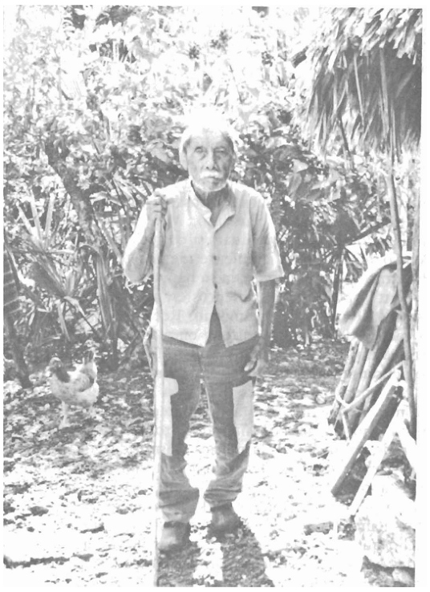
دون بانشيتو
الإقامة في الكوخ
المتمركزة، وإدراك تفرّد الآخرين دون تشريحهم أو النفاذ إلى عقولهم.
كان الأمر أشبه بمثال علم النفس الإنساني، وكان يسرّني كثيرًا أن أستطيع الحب من منظور إدراك الشخص كاملًا واحترامه، لا إدراك أجزائه.
ودّعتنا دونيا سارا وتركتنا وحدنا.
كنا سنمضي عدة أيام معًا، ننام في أرجوحتين تفصل بينهما قرابة خمسين سنتيمترًا، ولا نستطيع التعبير بالكلام عن أفكارنا. أرعبني ذلك، فقررت التجول في القرية. كان بعض الفتيان يلعبون كرة السلة، ويشجعون اللعب بضحك صاخب ودعابات.
عدت إلى دون بانشيتو. أشار إلى أرجوحة طالبًا مني مساعدته في تعليقها قرب أرجوحته. فعلت ذلك واستلقيت فورًا، بينما فعل هو الشيء نفسه.
شعرت بأن أفكاري تسندها شبكة من التفاؤل. وأدركت أن ما يسند أفكاري هو عقل دون بانشيتو، أما الأفكار نفسها فمن عقلي أنا. كان الأمر تفاعلًا لا يصرفني عن عملية تفكيري، بل يسندها.
بدأت أفكاري تتسارع، وفجأة ضعت. اختفى السند المتفائل، ولم تعد هناك محتويات تخصني، بل إحساس بالارتباك وموسيقى يذيعها مذياع بدا وكأنه موضوع داخل دماغي. حاولت خائفًا ألا أسمع المذياع، لكن ارتباكي ازداد. قررت أن أوليه انتباهي كله، وشعرت بأن دون بانشيتو غضب. كانت دونيا سارا قد أخبرتني أنه يستطيع أن يسمع أو يكف عن السماع بإرادته، وشعرت أنني أجرّه إلى سماع المذياع رغمًا عنه.
كنت مستلقيًا في أرجوحة إلى جوار معلّم من المايا جاوز المئة، وأشعر بأنني ضائع تمامًا داخل عقل لا يمكن السيطرة عليه،
الليل والصباح
ولا يُضبط. حاولت أن أهدأ، وطلبت من الله أن يطفئ ذلك المذياع الذي بدأ يشطرني اثنين. فمن جهة، أراد جزء مني أن ينفذ إلى الحكمة التي يمتلكها دون بانشيتو، ومن جهة أخرى لم يستطع الجزء الآخر الكف عن متابعة إعلانات ذلك المذياع اللعين وأغانيه. بعد ساعة صمت المذياع، وبعد قليل أحضروا لنا العشاء.
بالكاد استطعت النوم. استمر ارتباكي العقلي، وأتعبتني الأرجوحة. كان دون بانشيتو يصدر أصواتًا حلقية قوية جدًا، ولم أستطع صرف ذهني عنها.
قررت أخيرًا الاستلقاء على الأرض فوق مرتبة أحضرتها معي. رأيت أحلامًا غريبة، كما لو أن عقل دون بانشيتو قادر على استخراج ذكريات قديمة من لاوعيي.
أيقظني فجرًا ما بدا كأنه ملايين الطيور تغني في وقت واحد. توجهت ناعسًا محرومًا من النوم إلى كنيسة القرية. استقبلتني مهيبة بجدرانها الأربعة العملاقة التي كان يعلوها سابقًا سقف مقوّس. حلّ سقف من الصفائح يغطي المذبح محل السقف الأصلي. استلقيت لأستريح، ونمت بعد قليل. وحين استيقظت تأملت محاولًا تهدئة ارتباك عقلي. عدت إلى دون بانشيتو، وكان مستلقيًا في أرجوحته؛ فحاكيت فعله، وسرعان ما وجدت الهدوء. كلما أغمضت عينيّ، امتلأ وعيي بالأفكار، واحدة تلو الأخرى، كأن أحدًا ينشّط منشأها. تركت نفسي أنساق مدهوشًا. اشتكى دون بانشيتو ألمًا في صدره، فتجرأت على اقتراح تدليك وافق عليه. بدأت أعمل على كتفيه بينما كان ينادي حفيده. اغتنمت الفرصة لأسأل إن كنت أزعجه. أجابني بواسطة حفيده أنني لا أزعجه، وأن وجودي معه يسعده. طلبت منه انتظاري ريثما أذهب إلى متجر القرية لشراء كحول وشمعة. كنت قد قررت منحه
السكينة وإيقاع الحياة
طاقة باستخدام تقنية تدليك بالنار والكحول. بدأت بالقدمين ثم اليدين. كان لمسه يولّد فيّ إحساسًا لذيذًا. بدا جسده كأنه لطفل رضيع، لا لشيخ جاوز المئة. لم ألاحظ دوالي واحدة في قدميه، وكانت راحتا يديه قويتين، بخطوط عميقة واضحة. كان خط الحياة طويلًا بلا انحرافات، وخط العقل عميقًا مستقيمًا. دلّكت صدره وظهره محاولًا تخفيف ألمه. وحين انتهى التدليك عدنا إلى الاستلقاء في أرجوحتينا.
عادت الأفكار، وأدركت بلذة بالغة أنني بدأت أرتد إلى ماضيّ الشخصي. شعرت أن عقلي يخضع لتنظيف عميق يبرز منه، بوضوح متزايد، مركز صافٍ متجاوز، تجعلني قدرته على الملاحظة أشعر بسرور بالأفكار والصور والتصورات التي تولد من عمق متعذر البلوغ.
هكذا انقضى اليوم: مستلقيين في الأرجوحتين، أنا إلى جوار دون بانشيتو، وكلانا مغمض العينين. نحو الخامسة عصرًا نهض وسألني إن كنت أريد الاستحمام. وافقت، فأحضر حفيده بعد دقائق دلوًا من ماء السينوتي وصابونة. استحممت مستمتعًا داخل الكوخ، وتركت ريح المساء تجفف جسدي. كان كل شيء طبيعيًا: ماء السينوتي، والأراجيح، والكوخ ذو الأرض الترابية والسقف القشي، والريح، وغناء الطيور. لم يعد المذياع يعمل، وبدأت أدرك إيقاع حياة دون بانشيتو الرائع. لا عجب أن تكون الروح، في هذا الهدوء، ومع كل هذا الوقت للتجول في العقل، قادرة على تلقي الرسائل وقراءة النجوم وحب الأرض والحياة إلى حد يسمح لشخص بأن يعيش كل هذه السنوات دون إزعاج سوى ألم في الصدر.
كم كانت حياتي في مدينة مكسيكو عبثية
المختبر والخبرة المباشرة
بالمقارنة مع هذه! عازمًا على ألا أعقد مقارنات، خرجت أتجول في القرية، بينما استغل دون بانشيتو انتعاش المساء ليعمل في حديقته. كان كل شيء يذكّرني بكيرالا، ولاية في جنوب الهند. شعرت بأن ما يحدث لي مع دون بانشيتو هو ما أدرسه في مختبر الجامعة.
هناك كنت أستكشف الارتباطات الكهروفسيولوجية للتواصل المباشر، وهنا كنت أمارسه مع دون بانشيتو. وإذا كنت قد رصدت في المختبر تغيرات في النشاط الدماغي لا تُفسَّر إلا كنتيجة لتفاعلات مباشرة من دماغ إلى دماغ، فإن تلك التأثيرات تحدث معه كلما استلقينا في الأرجوحتين. ضحكت من نفسي ومن خوفي من البقاء مع شيخ لا يستطيع التحدث بلغتي، ولا أنا بلغته. لكنني بدأت الآن أشعر بأن تعذّر الكلام معه نعمة. كنت قد بحثت في الهند عن معلّم أتعلم معه مباشرة، وها أنا أجده في دون بانشيتو. في الصباح يجلس في أرجوحته، وبينما يمتلئ الفضاء كله بغناء الطيور، يراقب الفجر. خلال الأيام الثلاثة التي عشناها معًا، بالكاد رأيته يأكل. يمضي معظم الوقت يتأمل ساكنًا في أرجوحته، بينما يجوب عقله نفسه.
ومع ذلك لم يكن في سكونه خاملًا، فقد كان يهب هدايا لا تُرى. حلمت بأن لدي بيتًا أعرفه، وأنني عثرت يومًا على درج خفي يقودني إلى بيت آخر داخله. سألت عن صاحب البيت الجديد، فأخبروني أنه أنا. كانت الغرف واسعة ومؤثثة، ولم يبق إلا ترتيب الزينة. قلت لنفسي عند تحليل الحلم: «إنها هدية من دون بانشيتو. والآن ليس عليّ إلا أن أرتب الأشياء حسب ذوقي».
يأتونني كل صباح بدلو من ماء
توضيح تحريري: ورد اسم الولاية في الأصل «Kevala». أُبقيت قراءته «كيرالا» بوصفها الترجيح المقصود من وصف المؤلف لها بأنها ولاية في جنوب الهند، مع إثبات رسم الأصل هنا.
العودة إلى دون بانشيتو
السينوتي لغسلي الشخصي. نقضي كلانا عدة دقائق نتأمل البخار الرقيق المائل إلى البياض المتصاعد من الماء. كأننا نبحث عمّا يلوح في البخار من أشكال بالكاد تُرى. أشعر أكثر فأكثر بأنني في بيتي.
بعد عدة أيام قضيتها قرب دون بانشيتو، قررت السفر إلى ميريدا للحديث مع دونيا ماريا، وهي شامانة قوية جدًا من المدينة. التقيت دونيا سارا في ميريدا، وقررنا العودة معًا لزيارة دون بانشيتو.
في الطريق أخبرتني بأنه يستخدم بلورات الكوارتز في عمله العِرافي. وقالت أيضًا إنه ينهض ليلًا ليرى النجوم، وهي طريقته المفضلة في التأمل.
حين اقتربنا من قريته، شعرت مجددًا بأن جوًا من السلام والهدوء بدأ يحيطني. وجدناه مع ثلاثة من أبناء أحفاده يتحادثون في كوخه. جلست دونيا سارا معه في أرجوحة، وشرعا في الحديث بالمايا وأنا أراقبهما. كانت تترجم لي من حين لآخر أجزاء من حوارهما: «يقول دون بانشيتو إنه افتقدك. ويقول إنك تستطيع العلاج أيضًا، وألا تغيّر طريقك. ويقول إن الشر يأسر المرء أحيانًا، ولا سبيل للخروج منه إلا بالطيبة».
شعرت بغرابة؛ شيء ما يجعلني شديد التعب. طلبت منها أن تسأله عن سبب تعبي المفاجئ. «يقول إنه لا يستطيع حمايتك من مسافة بعيدة جدًا، وإنك تتلقى تأثيرات سيئة ولهذا تتعب. وحين تعود إليه تتصل طاقاتكما مجددًا، فيتعبك التغير».
طلبت الإذن بتسجيل صوته. شغلت جهاز تسجيل اشتريته في كانكون، وسألته عن تقنيته في النظر إلى النجوم.
التسجيل والعيش في الحاضر
ترجمت دونيا سارا: «تُستخدم لمعرفة حظ شخص. إذا ظهر شكل طويل جدًا ونحيل، هو ملك اليهود، فذلك علامة سوء حظ».
لم يعجبني ذلك؛ كان خليطًا غريبًا من تقاليد متعددة وأحكام مسبقة. لم أقل شيئًا.
«يقول دون بانشيتو إنه لا ينبغي أن تسجل شيئًا، ولا سيما إن كان رسالة من النجوم عن الحظ. فما يُسجّل يثبت، ثم ينقلب على المرء. يجب أن يتدفق كل شيء؛ أن يُسمع ثم يُنسى، لأن كل شيء يتغير».
شعرت بسوء أكبر. كان محقًا حين حذّرني من عادة العجز عن عيش الحاضر والرغبة في تثبيته في التسجيلات والصور، بل وفي الكتابات أيضًا. أدهشتني قوة الرسالة، فأوقفت المسجل معتذرًا عن خطئي. ظل أمر ملك اليهود يزعجني، لكنني بقيت صامتًا، ولم أطلب إيضاحًا.
بعد دقائق غادرت دونيا سارا، وبقيت وحدي مع دون بانشيتو. فجأة سألني إن كنت أريد الاستحمام بماء بارد أم ساخن، فأجبته: بارد.
بعد دقائق استحممت داخل الكوخ، ثم جلست أكتب.
علّق دون بانشيتو بأنني لا أتعب من الكتابة، وشعرت أن ذلك تحذير من عجزي عن عيش الحاضر. توقفت عن الكتابة واستلقيت في الأرجوحة. بدأ عقلي، كما في المرات السابقة، يتسارع، مصفّى على قاعدة راسخة من التفاؤل والفرح. عرفت أن دون بانشيتو مسؤول عن تلك الأسس، وتركت نفسي أنساق. شعرت بأنني أستطيع التقدم دون عوائق مسافة عقلية أبعد من السابق. وبينما كنت أهنئ نفسي على التقدم، هاجم شك وعيي. أوقفني شيء رغم جهدي للاستمرار. فقدت سند عقل دون بانشيتو، ودخلت سلسلة دائرية زائدة التكرار من
عوائق داخلية
الأفكار المتكررة. أخيرًا نمت، مستاءً من نفسي لقلة موهبتي. حلمت بدون بانشيتو، وفي صباح اليوم التالي أيقظني صوت المطر وتغريد الطيور. تذكرت نظرته حين رآني أكتب الليلة السابقة. كان قد نام فورًا، وحين توقف عن الشخير رأيته مندهشًا مما حلم به. دار رأسه ببطء ليتأكد من أنني مستلق في الأرجوحة المجاورة. شعرت بأنه يريد الاطمئنان إلى أنني رافقته في حلمه. لكنه حين لم يجدني في الأرجوحة ورآني أكتب، شعرت بأنني خيّبت أمله.
حين انتهيت من الكتابة قررت العودة إلى أرجوحتي.
كان دون بانشيتو يراقب المطر من أرجوحته، بينما كنت في أرجوحتي أشعر بالانتعاش، مغتسلًا بماء السحب. أغمضت عينيّ، وظهرت الأفكار في وعيي صافية كلآلئ صِيدت للتو. فكرت في إستوشا، ابنتي، وفكرت في الحياة، وفجأة ارتقيت إلى موضع من عقلي ممتلئ بلذات لطيفة. ناقشت شخصًا في قيمة التجريد. كان محاوري يتحدث عن الله، وأنا عن المراقب.
فجأة تغشّى كل شيء، وبدأت أشعر بضغط واقع ملموس. فتحت عينيّ، وقال لي صوت إن المسؤولة عما حدث لتوّي هي دونيا ماريا. لا بد أنها نادت روحي، فابتعدت عن جسدي، وجعلتني أشعر بالضياع في واقع فقير. قاومت الفكرة وحاولت الخروج من إحساس الاختناق الذي ولدته، ولم أستطع. حاولت العودة إلى الإحساس السابق فساءت حالتي. كان المطر قد توقف، وتُسمع رعود بعيدة جدًا.
وضقتُ ذرعًا بذلك الحاجز الذي اعترضني فجأة، فنهضتُ من أرجوحتي. قررت البحث عن أحد أبناء أحفاد دون بانشيتو ليساعدني على سؤال جدّه الأكبر.
الدعاء والمراقبة
اقتربت مع مترجمي من دون بانشيتو، فنظر إلينا مستغربًا، منتظرًا ترجمة سؤالي. أردت أن أعرف سبب العوائق المفاجئة أمام النور. لم أجرؤ على ذكر دونيا ماريا، وانتظرت الجواب. بدا غاضبًا حين أجاب: «اطلب من الله، تحدّث إلى الله وحده...».
عدت إلى أرجوحتي بينما الرعد مستمر. حين وجهت السؤال إلى دون بانشيتو، تزامن برق قريب مع كلماتي. أغمضت عينيّ وحاولت استعادة تعبيره حين سمع ذلك الرعد. بدا لي أنني أتبين فيه دهشة من التزامن. وكدت أجزم بأنني بدأت أسمع أفكاره.
عاد المطر، وتحرر فكري من العائق. تكهنت بوجود علاقة محتملة: ربما أعادت دونيا ماريا وصلي بالمؤنث، أي بالأرض، وينسد فكري حين يوشك المطر على الهطول، وينطلق فكري حين ينهمر المطر.
شعرت بسوء، وعرفت أن شيئًا يعوقني، كجدار موضوع في منتصف طريقي. تذكرت وصية دون بانشيتو، وحاولت الحديث إلى الله. شعرت بأن كائنات هي التي تمنعني من التقدم. قال الصوت مرة أخرى إنها دونيا ماريا. غضبت. تصورت الكيانات وهاجمتها، وسلبتها القوة وطردتها من جسدي. طلبت العون من الله، وفجأة انهار الجدار، ورأيت نفسي حرًا لأكون ما أنا عليه.
بدأت الأفكار: دون بانشيتو يتجاوز الأرواح. إنه لا يريد إلا أن يتحدث إلى الله. وأنا أيضًا أريد أن أكون مع الله، ومع ذلك لا يزال العالم يجذبني. الله شديد التجريد بالنسبة إليّ. أريد شيئًا أكثر ملموسية وقابلًا للاستخدام تقنيًا. تحققت من أن تذكّر المراقب هو ما كان يساعدني دائمًا. فمهما كنت مكبّل الفكر أو قلقًا
نهاية الزيارة واعتبارات نفسية فسيولوجية
أو مشوشًا، فإن معرفتي بأنني أستطيع الملاحظة، وقيامي بها، يحررني دائمًا. ربما كان الله هو المراقب.
قال لي شيء: اصمت...
فتحت عينيّ ورأيت دون بانشيتو يتأرجح في أرجوحته وينظر إلى المطر. كم أود النفاذ إلى تفكيره! يبدو هادئًا وفي سلام...
شغّلوا المذياع لحظة الإعلان عن فوز الحزب الثوري المؤسسي واجتماع أوبك في فيينا. شعرت بالغثيان وخرجت من الكوخ. ظل دون بانشيتو يتأمل المطر، دون أن يلقي بالًا للمذياع. فكرت بأنه يشبه غاندي: نحيل، وعاري الجذع، ويحمل عصًا. حتى وجهه يشبه وجه غاندي، فضلًا عن أسلوب حياته...
هطل المطر طوال العصر. حلّ الليل، وكل شيء يبدو كأنه وُلد من جديد. تفوح رائحة البلل من الأرض، وتغني صراصير الليل بأعلى صوتها. تغطى دون بانشيتو بسارابي متعدد الألوان، وأنا أمارس الماهامودرا. عقلي في سلام وصمت. إنها حالة سكينة كاملة تهدهدها أغاني الليل. أشكر الله لأنه أتاح لي أن أعيش حالة النعمة هذه.
ودّعت دون بانشيتو في صباح اليوم التالي. تعانقنا، وشمّني وقبّل خدّي الأيسر ثم الأيمن، وأشار إلى أعلى قائلًا بإسبانية مشوبة بلكنة المايا: «الله دائمًا». أوصاني بألا أحيد عن طريقي.
اعتبارات نفسية فسيولوجية
لأنني تناولت الموضوع في القسم الأول من هذا الفصل، سأحاول هنا فقط تحديد الارتباطات
توضيح تحريري: السارابي: رداء أو بطانية تقليدية مكسيكية تُلقى على الجسم.
التواصل والاتساق بين نصفي الدماغ
النفسية الفسيولوجية لبعض الخبرات والعمليات.
من أبرز جوانب عمل دون بانشيتو قدرته على إقامة اتصال مباشر مع تلاميذه. يظهر هذا الاتصال في مواضع ومستويات عدة. أحدها مرتبط بتقنية الفيلاسيون التي تستخدمها دونيا سارا لإبلاغه بالزيارات والأحداث. والآخر قدرته على التواصل في الأحلام وأثناء التأمل الصامت.
كلما استلقيت قربه، كان هذا التواصل يتجلى بوضوح في إحساسي بأن ثمة ما يسند أفكاري في ذهني على نحو خفيّ.
في تجارب حديثة أُجريت في مختبري،¹⁰ وجدنا أن أنماط الاتساق بين نصفي الدماغ وشكل النشاط الكهربائي المسجَّل بتخطيط الدماغ كلاهما قابلان للانتقال بين الأشخاص. فأصحاب الاتساق المرتفع بين نصفي الدماغ يرفعون قيم الاتساق لدى أشخاص آخرين، دون حاجة إلى استخدام إجراءات تواصل لفظية.
يعمل الاتساق المرتفع بين نصفي الدماغ سندًا للأنا في حمل المحتويات العقلية. ويفيد الأشخاص الذين يتعلمون رفع اتساقهم بأن الاتساق المرتفع تصاحبه وحدة داخلية وحالة سلام.¹¹
وبما أن الاتساق بين نصفي الدماغ ينتقل من شخص إلى آخر، يمكن تفسير كيف كان دون بانشيتو يساعدني على إسناد عملياتي العقلية خلال تفاعلنا عن قرب. وبالطريقة نفسها، إذا دُرس الترابط بين شكل تخطيط كهربية الدماغ (EEG) في دماغين، لوحظ أنه يزداد أثناء
حاشية المؤلف: 10. غرينبرغ زيلبرباوم، ي.، «حول العلاقات...»؛ مرجع سابق.
حاشية المؤلف: 11. المرجع نفسه.
خاتمة الفصل الأول
التواصل غير اللفظي، مقارنة بحالة ضابطة.
وهذا يشير إلى أن الدماغ البشري يمتلك، ضمن وظائفه الطبيعية، القدرة على إقامة اتصالات طاقية مباشرة مع أدمغة أخرى.
الفصل الثاني
سلالة الغرانيسيروس في ولاية موريلوس
توضيح تحريري: الغرانيسيروس (graniceros): اسم ممارسين تقليديين يرتبط عملهم، بحسب معتقداتهم، بالبرد والعواصف والمطر؛ يُسمّون في النص أيضًا «خَدَمة الطقس».
سلالة خَدَمة الطقس
لا نعرف على وجه اليقين أصل سلالة الغرانيسيروس في ولاية موريلوس. ومع ذلك نقدّر أنها قديمة جدًا، إذا حكمنا بالبيانات التي زوّدنا بها بعض أفرادها.
أخبرنا أحد هؤلاء الغرانيسيروس، دون لوسيو كامبوس، بأنه يذكر أن تقليده يُمارَس على الأقل منذ أيام جدّه الأكبر، أي منذ أكثر من قرن أو قرنين.
دون لوسيو رئيس إحدى سلالات الغرانيسيروس الذين يسمّون أنفسهم خَدَمة الطقس، لأن عملهم يتمثل أساسًا في حماية القرى من الكوارث الطبيعية الناجمة عن تساقط البَرَد وهبوب العواصف ونحوهما.
مرة واحدة في السنة على الأقل، في الخامس من مايو، تجتمع جميع سلالات الغرانيسيروس في موريلوس في كهف بين بركاني إكستاتسيواتل وبوبوكاتيبيتل، يدعى «إل كاليكا»، ويقيمون فيه سلسلة من الطقوس يطلبون بها القوة والإرادة ليتمكنوا من التحكم في الأحوال الجوية لقراهم طوال بقية السنة.
يتولى دون لوسيو، مثل بقية رؤساء سلالات الغرانيسيروس، الإشراف على عدد متغير من
مفهوم الواقع عند دون لوسيو
التلاميذ، يلقّنهم تقليده ويعلّمهم فنون العلاج والتعامل مع الطقس.
مفهوم الواقع عند دون لوسيو
وفق المقابلات التي أجراها المؤلف مع هذه الشخصية، فإن أبرز خصائص مفهوم الواقع الذي يتبناه ويعلّمه هي اعتبار أن التحكم في أحوال الطقس، وإرشادات العلاج ومتابعة أية حالة مرضية، تمليها كائنات يسمّيها «عمّال الطقس». وتقود هؤلاء بدورهم مجموعة من الشخصيات «الأثيرية» التي تسمّى الرعاة. ووفق الغرانيسيروس، يوجد عدد كبير من القطعان تتمايز بألوانها وبالرعاة الذين يقودونها. وجميع القطعان ورعاتها على اتصال بعضها ببعض، وتعمل معًا في أعمال مختلفة تهدف إلى حل المشكلات.
ويقود رعاة القطعان بدورهم راعٍ للرعاة، يمارس سلطة مطلقة ويُظهر، بأفعال إرادته، الرغبات التي على الرعاة وقطعانهم تنفيذها. يؤكد دون لوسيو أنه يعرف راعي الرعاة هذا، الذي أمره بخدمة الناس باستخدام تقنيات مختلفة. (سنحلل بعضها في هذا الفصل.) لذلك يكرس نفسه، إلى جانب رعاية أراضي قريته، لعلاج كل إنسان يطلب مساعدته.
يعتبر أن من واجبه رعاية المرضى، ويفعل ذلك في موضع صغير من منزله،
إجراءات التلقين
هو ركن المذابح، المزيّن بصور وأشياء دينية، وأخرى دنيوية، وبشموع نذرية. يستقبل دون لوسيو مرضاه في هذا الركن من بيته الذي اتخذه عيادةً على الطريقة المحلية، ويمنحهم فيها العزاء، ويقدّم الأدوية، ويتنبأ بمستقبلهم، ويؤدي دور متلقّي الاعترافات وشامان حقيقي.
يؤكد أن جميع الإرشادات والوصفات التي يعطيها لمرضاه تمليها كائنات تنتمي، كما ذكرت، إلى عمّال الطقس. تأتي هذه الكائنات لتخبره بما يجب فعله، فيطيع أوامرها دون شك. ويؤكد أنه يعرف متى سيأتي مرضاه؛ وحين يُسأل كيف يعرف هذه المعلومات، يقول إن عمّال الطقس يخبرونه بأحداث المستقبل، وإنهم كانوا دائمًا على صواب في تنبؤاتهم.
إجراءات تلقين الغرانيسيروس
ولفهم كيف يصف دون لوسيو الواقع وكيف يتصوّره، تهمّنا قصة دخوله هو نفسه في سلك الشامانات، وقد رواها الفصل الأول من المجلد الأول.
عمومًا يحتاج تلاميذه أيضًا إلى تلقين يتضمن سقوط صاعقة قرب الجسد. وحين يتعرض أحد سكان المنطقة لهذه الحادثة، يُرسل إلى دون لوسيو الذي يتولى تعليمه منذ تلك اللحظة.
وهكذا تجمعت حوله شخصيات خاضت التلقين، وتثابر على محاولات التحول إلى ممارسين متمكّنين في علم النفس لدى أهل المنطقة.
مستويات الواقع
إضافة إلى ذلك، يقيم دون لوسيو طقوس تلقين يسمّيها «تتويجات»، يستخدم فيها إجراءات مختلفة لـ«وصل» الطامحين إلى الشامانية بالكيانات المرشدة أو الحامية التي سيكون لها، على نحو ما، سلطان على مسار تطوّرهم. ستُوصَف بعض هذه الطقوس لاحقًا.
مستويات الواقع لدى الغرانيسيروس
ذكر دون لوسيو مرارًا وجود مستويات مختلفة للواقع ضمن تصوره للعالم. ويمكن تمييز مستويين مختلفين على الأقل في هذا التصور. فمن جهة يوجد ما يسمّيه الغرانيسيروس العالم غير المرئي، عالم الفضاء الذي يسكنه عمّال الطقس، أي الكائنات التي يتصلون بها أثناء تلقينهم الشامانية، والتي توجه لاحقًا تطورهم بوصفهم رجال معرفة. ولا تُرى هذه الكائنات الروحية بالعين المجردة.
أما العالم المرئي فهو عالم الأشياء الملموسة والأفراد المتجسدين: عالم البشر والحيوانات والأشياء والسحب والعواصف والحقول. ويرى هؤلاء الشامانات علاقة حميمة بين العالمين المرئي وغير المرئي. بل إن العالم غير المرئي يتحكم في العالم المرئي، بحيث يتحدد كل ما يقع في الواقع الملموس بقرارات تتخذها الكائنات الروحية في اللامرئي.
الشامان وحده مؤهل للاتصال بأوامر العالم
طقوس الشامانات
غير المرئي وتوجيهاته، ومن خلال تلقينه تحديدًا ينفتح عقله لتلقي الأوامر والمعلومات المباشرة القادمة من الكائنات الروحية.
وتتوقف درجة امتثاله الحرفي لأوامرها على جودة الشامان واتساقه والتزامه بمصيره وطريقه. وكلما نفّذ هذه الأوامر على نحو أكمل، ارتفعت مرتبته.
يروي دون لوسيو، مثلًا، أنه وفق الأوامر التي يتلقاها من العالم غير المرئي لا ينبغي أن يبتعد عن منزله. فإذا فعل وجاء شخص يحتاج إلى الرعاية، فإن عدم تقديمها ينطوي على انقطاع عقله عن كائنات اللامرئي. ولو انقطعت هذه الصلة، لكانت في نظر الشامان ضربة قاضية لتطوّره، إذ يفقد عندئذ إمكان مواصلة العمل وإتمام المهمة التي كلّفه بها عمّال الطقس تحديدًا.
طقوس الشامانات
شهدت بعض الطقوس التي يقيمها دون لوسيو مع تلاميذه ومع من يأتون طالبين رعايته. سأصف بعضها محاولًا النفاذ إلى معانيها.
يستخدم دون لوسيو النار باستمرار. وعادة توجد على طاولة عمله شمعة نذرية مشتعلة، تعمل على إبقاء الصلة بين العالم المرئي والعالم غير المرئي.
في بعض طقوس التلقين، يطلب من المرشحين إحضار عدد محدد من الشموع لإشعالها أثناء الطقس. ومن خلالها
التتويج والفحص بالبيض
يطلب من عمّال الطقس الاتصال بالمرشح.
في حالتي أنا، خضعت لطقس من هذه الطقوس أشعل فيه دون لوسيو الشموع الاثنتي عشرة التي أحضرتها. ووضع على طاولته أيضًا خبزًا وشوكولاتة وسيجارًا وكحولًا وتكيلا وبسكويتًا ومولي وأشياء أخرى طلبها مني. وبحسبه، ترضي هذه الأشياء عمّال الطقس، بينما تُستخدم الشموع لمعرفة المستوى الروحي للمرشح ودرجة قبوله لدى الكائنات غير المرئية.
وبحسب حجم اللهب ولونه وحركاته، يستطيع تحديد درجة قبول المرشح ومستواه الروحي.
إذا انطفأت شمعة أو عدة شموع تلقائيًا، فهذه علامة سيئة. وقد تدلّ، بحسب هذا التأويل، على انقطاع الصلة بين المرشّح وكائنات العالم الروحي.
ومن الطقوس الأخرى التي شهدتها ما يسمّيه دون لوسيو والشامانات عمومًا «الفحوص». يستخدم الشامان فيها بيضة أو أكثر، يمسكها المرشح دقائق ثم يعيدها إليه. ينفذ الشامان سلسلة حركات، دالكًا البيض على جسم المرشح من الرأس إلى القدمين. وبعد أداء الحركات بالطريقة نفسها دائمًا، يأخذ كأسين ممتلئتين بالماء ويفرغ البيض فيهما، فيترك داخل الماء خطوطه البروتينية.
يراقب الشامان الخطوط والفقاعات وشكل الصفار ووضعه ولونه وارتفاعه عن قاع الكأس؛ ومن كل هذه المعلومات يشخّص حالة المرشح الجسدية والروحية. وفي هذه «الفحوص» يتنبأ بإمكان
توضيح تحريري: المولي (mole): صلصة أو طبق تقليدي مكسيكي.
طقوس التطهير
تقدم المرشح وعوائقه الروحية والكيانات الإيجابية أو السلبية التي اتصل بها.
وبعد أسئلة عدّة وجّهتُها إليه، أسرّ إليّ دون لوسيو بأن صفار البيضة يمثل جسد المرشح، بينما يمثل البياض مستوياته الطاقية وصلاته الروحية. تُستخدم هذه الوسيلة التشخيصية مع المرضى، ومع من يستشيرون الشامان، ومع المرشحين للتلقين.
ومن الطقوس الأخرى التي يؤديها استعمال سعف النخيل وسائل التطهير في حالات التلبّس الروحي. يضرب الشامان جسم من جاء يستشيره بأوراق نخيل متشابكة، ويرش عليه سائلًا بقصد تحريره من الطاقات السلبية «الملتصقة» به. وعادة تصاحب طقس التنظيف الطاقي هذا صلوات وطلبات ينطق بها الشامان بصوت مرتفع أثناء استعمال السعف والسائل.
وهناك طقس تطهير آخر يصب فيه الشامان سائلًا خاصًا على يديه، ثم يضعهما على قفا المريض وجبهته. يكرر بصوت مرتفع طلبًا للمساعدة الروحية، ويواصل صب السائل في راحتيه، مبللًا به شعر المريض وذراعيه، وأخيرًا يديه.
وأحيانًا يضرب بيديه جانبي المريض وظهره، مواصلًا طلب التخفيف. يسمّى هذا الطقس «التجريد»، وهدفه تحرير المريض ممّا يعتري طاقته من اضطرابات خفيّة تحول دون صفاء ذهنه. (في نهاية الفصل تفريغ لتسجيل أُجري خلال طقس تجريد.)
التعامل مع الطاقة
توجد تقنيات كثيرة للتعامل مع الطاقة يستخدمها غرانيسيروس ولاية موريلوس.
إحداها الاستعداد لتلقي رسائل عمّال الطقس. وقد رأيت دون لوسيو يغمض عينيه ويركز بعمق لاستقبال الرسائل عند سؤال يتطلب ذلك. وأحيانًا يحدث التلقي دون حاجة إلى هذا الإجراء. وفي الحالتين يروي أنه سمع أوامر كائنات العالم غير المرئي تخبره بما عليه فعله وكيفية معالجة المواقف.
ومن أشكال التعامل الطاقي ما يمكن تسميته «الرؤية عن بعد»، حيث يستطيع الشامان إدراك أحداث تقع في مواضع بعيدة عن جسده.
يجلس الشامان في هذه العمليات ويغمض عينيه ويركز على ما بين حاجبيه، ويقول إنه يرى هناك الأحداث التي يريد إدراكها.
طلبت ذات مرة من دون لوسيو مساعدتي على إجراء العملية نفسها. وافق وطلب مني إغماض عينيّ. وضع إبهاميه وسبابتيه على ما بين حاجبيّ وحرّك أصابعه حركة اهتزازية، كأنه يريد تنشيط هذه المنطقة من جسمي بالطاقة. وكانت خبرتي أثناء ذلك ظهور صورة واضحة، موضوعها الأساسي كوخ ريفي في أرض ضمن قرية صغيرة، ورجل جالس قرب بابه. ومن الغريب أنني، بعد هذه الخبرة بوقت قصير، حين ذهبت لدراسة دون بانشيتو، وجدته يعيش في قرية تشبه القرية المصورة، وفي كوخ شبيه بكوخ الرؤيا.
إجراءات العلاج وتقنياته
لا يمكن الجزم بيقين مطلق بأن هذا يثبت أن الخبرة التي حفزها دون لوسيو كانت خبرة حقيقية للرؤية عن بعد؛ لكن التوافق بين ما رأيتُه وقتها وما وجدتُه عند الزيارة يوحي بأن إجراءات دون لوسيو قد تساعد على التقاط معلومات عن بُعد.
إجراءات العلاج وتقنياته
من أهم وجوه عمل دون لوسيو وشامانات ولاية موريلوس العمل العلاجي الذي سبق ذكره.
تتنوع تقنيات العلاج وإجراءاته كثيرًا، ولا يزال دون لوسيو لا يفصح علنًا عن بعضها. عرض عليّ هذا الشامان بعض تقنيات العلاج وشرحها؛ وسأتناولها مع مراعاة أنها عينة صغيرة جدًا من العدد الكبير للإجراءات التي يستخدمها.
التقنية الأولى هي تناول أدوية يعدّها الشامان، تُستخدم لطرد العناصر المضرة بالصحة من الجسم.
المواد التي يستخدمها في أدويته مساحيق تُستخلص من الأعشاب وتُمزج بزيت منزلي، ويتناولها المرضى المحتاجون إليها على النحو التالي: يطلب منهم الحضور في ساعة مبكرة صائمين، ويسقيهم كأسًا ممتلئة بالزيت أذاب فيها المواد الدوائية. وعادة يكون أثر تناول هذا الدواء الأصلي الإسهال، الذي يعتبره الشامان علامة إيجابية جدًا، تدل على نجاح عملية العلاج، ولا سيما طرد
الحسد والتفاعلات الطاقية
العناصر السلبية التي دخلت الجسم.
ومن الإجراءات الأخرى وضع مواد على سطح الجسم، منها مسحوق مائل إلى البياض يحصل عليه من سواحل غيريرو، يقول إنه يستطيع به إبعاد العناصر السلبية التي تؤثر خارجيًا في الناس.
يعتبر دون لوسيو أن بين البشر حالة مستمرة من التفاعل الطاقي. ويؤكد أن الأفكار والمشاعر السلبية التي تنشأ بين الناس، كالحسد والغيرة والكراهية، قد تسبب المرض.
وبوضع مواد على سطح الجلد، وتناول الأدوية الأصلية، واستخدام إجراءات علاجية أخرى، يتمكن الغرانيسيروس من تجنب الآثار الضارة لهذه التفاعلات أو تقليلها على الأقل.
تفريغ محادثة مسجلة بين المؤلف ودون لوسيو
في بداية الحديث يشير دون لوسيو إلى كائن غير مرئي يعيش في الجبل. وبحسبه، ظل هذا الكائن هناك مئتي عام يحرس كنزًا مخفيًا. وكلما اقترب شخص من الموضع، صدّه الكائن. ويوصي دون لوسيو بطقس لمنحه النور وإبعاده عن المكان. ثم يتحدث عن سلالته، ويشير أثناء الحديث إلى التعاون بين سلالته وبعض الكهنة المسيحيين. وأخيرًا أمكن تسجيل طقس للطرد.
المحادثة المسجلة
دون لوسيو: في اليوم الذي كانوا سيحضرون فيه نحو مئة ألف بيزو إلى هناك، كانوا يسرقون الأكياس كاملة. ولم يكونوا يسرقونها؛ كانوا يخرجونها، يخرجونها ويسلمونها لصاحب الضيعة. ليس الأمر متعلقًا بما إذا كان يريد إعطاءهم إياها. لهذا أقول لكم إنّ هؤلاء أناس أهلُ ثقة.
إذن افعل ذلك بأسرع ما يمكن، قبل أن يزداد غضبه.
المؤلف: أجل، وهناك، يا إلهي! لكنني اضطررت للخروج كالصاروخ.
دون لوسيو: لو أنك حصلت على الشموع الأربع يا رجل. افعلها! وبأسرع ما يمكن.
المؤلف: سأحاول للسبت المقبل.
دون لوسيو: افعلها وخذها في مكسيكو إلى أي كنيسة صغيرة ليباركها الكاهن. وإن لم تشأ، خوفًا من ألا يستقبلوك، فاذهب إلى كويواكان. قل للكاهن: «تفضّل عليّ بهذا المعروف الكبير، وبارك هذه الشموع». وإن شئت قل: «جئت من طرف دون لوسيو»، وسترى كيف يستقبلك.
المؤلف: نعم.
دون لوسيو: «امنحني قليلًا من الماء المقدس من فضلك». اطلب منه قليلًا من الماء المقدس وأحضره إليّ، وسنصلح لك المكان، سترى!
ليس ذلك النور شيئًا نضعه هكذا لمجرد أننا نريد. لا يا سيدي! إنه نور، وحين نذهب لوضع تلك الحماية، سنهبه لذلك الشخص، وسنستدعيه هناك: «ها هو النور لتنتفع به وتصل إلى قدمي الرب، ولا تؤذِ من يعمل». لهذا هو يا سيدي، وليس لغيره؛ والنور مشروع، مشروع. لو لم يكن مشروعًا لقلت لك نفعلها هكذا وحسب، لكن لا يا سيدي! ما يطلبه هو النور؛ لم يعد يريد المعاناة، فهو يعاني ظلمات الجبل منذ ذلك الزمن حتى الآن. وهذا يعني أننا سنعطيه نورًا ليقترب من قدمي
الكائن الحارس
الرب ويلتفت إليه، وليحصل على راحته؛ فمنذ زمن عمله حتى الآن وهو يعمل ولا يرتاح. بالطبع! تصوّر فقط كم مضى من ذلك الزمن إلى اليوم.
إن لم أكن مخطئًا، فقد بلغ ذلك تقريبًا. إنه يقارب القرنين؛ هذا الرجل، كما تراه، يقارب القرنين.
المؤلف: وهل هو واحد، واحد يا دون لوسيو؟
دون لوسيو: المعني بالأمر واحد، بالطبع! لكنه ليس وحده، بالتأكيد؛ فهؤلاء الرجال كانوا يشكّلون جماعات من عشرة وخمسة عشر وخمسة وعشرين وخمسين. لم يكن اثنان فقط يذهبان لشن غارة على صاحب ضيعة.
المؤلف: لكن كيف بلغ قرنين، إذا كان «البلاتيادوس» قبل نحو سبعين عامًا؟
دون لوسيو: لا، ما بك؟
المؤلف: نعم.
دون لوسيو: لماذا سبعون عامًا؟ لماذا؟
المؤلف: آه، لا، فعلًا! صحيح!
دون لوسيو: لماذا سبعون؟
المؤلف: نعم، صحيح، قبل الثورة.
دون لوسيو: بالطبع، قبلها بكثير! ما بك، ما الذي أصاب هذا التفكير؟
المؤلف: إنه يوشك أن يجنّنني هناك في الجبل، فلا أعود قادرًا على التفكير.
دون لوسيو: لا، أي سبعين؟ أنا لي سبعون، انتبه. لا، لم تكن أنت موجودًا بعد. وأولئك الرجال الذين يعملون في المحفل الذي كنت أعمل فيه. لا، أي سبعين! لا يا سيدي، مضى أكثر من قرنين على عمل أولئك الرجال.
المؤلف: بالطبع.
دون لوسيو: هذا هو الواقع، هذه الحقيقة. كان ذلك زمن ازدهارهم؛ كانت عربات سفر تجرّها الخيل، لا كما اليوم، لتفهم: زمن عربات السفر. في أي عام كان، وفي أي عصر؟ في ذلك
توضيح تحريري: البلاتيادوس (plateados) اسم جماعة يذكرها الحوار. أُبقي الخلاف بشأن التواريخ والعبارات الشفوية المتقطعة كما ورد، دون تسويته.
أصل خَدَمة الطقس
الزمن كانوا. حين كانوا يسطون على عربات السفر، لكن بحق.
المؤلف: قل لي، دون لوسيو، من أين جاء خَدَمة الطقس؟
دون لوسيو: كيف؟ كيف؟ كيف؟
المؤلف: كيف بدأ أمر الغرانيسيروس، ومن بدأه؟
دون لوسيو: كيف يعني؟ أتظنه بدأ لتوّه يا رجل! كان هناك رجال أنفع مني، بالتأكيد. لن أقول إنني الوحيد والأنفع والأفضل. إنه جزء من الزمن، وقد مضى عليه زمن، منذ الأجيال الأولى يا سيدي، من هناك يأتي. لا تظنه اختراعًا جديدًا، لا يا سيدي! ليس اختراعًا جديدًا. هذه ليست اختراعات، بل أعمال كانت تُؤدى في ذلك العهد، وبصورة أفضل مما نفعل. هكذا منذ أن قال الرب إن الماء ناقص وإن المطر يجب أن يهطل. كان هناك بالطبع أناس يعملون في السحاب، يحملون الماء في أوانه إلى أماكن مختلفة. منذ ذلك العهد يا سيدي، هذا ليس جديدًا؛ واسأل من يعرف أكثر مني.
المؤلف: من سيعرف أكثر منك؟ لكن هل كان لك معلّمون غير عمّال الطقس؟ معلّم حي؟
دون لوسيو: لا.
المؤلف: مثل أجدادك. ألم تعرف بين أجدادك خادمًا؟
دون لوسيو: جدّي، فيرمين كامبوس.
المؤلف: هل كان عاملًا؟
دون لوسيو: لا، لم يكن من خَدَمة الطقس. كان يعمل في الحقل، لكن كان هناك آخرون.
المؤلف: وهل عرفتهم؟
دون لوسيو: نعم، بالطبع! بلغ سمعي أنهم يعملون. كان لهم معبد على جبل تيزويو، وكانوا عمّالًا هناك، لكن بصراحة لم
اختيار الخلف والمعرفة العملية
أعرفهم. لماذا أقول إنهم كانوا معلّميّ؟ حين ماتوا، ماذا تظن، كنت مولودًا حديثًا.
المؤلف: ومن سيخلفك؟
دون لوسيو: لا أعرف ماذا أقول لك، لكن لن يُعدم من يخلفني، بالتأكيد!
المؤلف: لكن كيف سيُختار؟
دون لوسيو: لا، أنا لا أختار شيئًا؛ كيف؟ مستحيل! الذي يقرر هو مَن في الأعلى، لا أنا. ليس لي أن أمنح أحدًا موهبة أو أكلّفه بمهمّة، فأقول: أنت تفعل هذا وأنت تفعل ذاك. هذه أمور جادة جدًا. مثلًا، العمل الذي أحمله لم يقل لي إنسان دنيوي: ستفعل هذا. ولهذا يوجد كثيرون. لقد رأيت من يمد يديه. من الذي يقول: «أنا أعرف حقًا، وما أفعله الآن»؟ رأيت كثيرين يتظاهرون بأنهم كبار وأصحاب معرفة واسعة؛ رجال كثيرو العمر قليلو الخبرة، وهذا السيئ. المهم أن تفعل، أن تعرف كيف تفعل. ليس أن تظل تقول: «أنا أفضل، أعرف هذا، وأنا ذاك»، وحين يأتي أمر جاد: «لا أعرف ماذا أفعل». لا، ليس هذا! المهم أن يعرف المرء ما يعرفه. حين يقع الأمر فجأة، وبدافع الأنانية أو لأي سبب تريد، يأخذون شخصًا أو يقع عليه البلاء، تعرف ما سيحدث. هيا انهض وإلى العمل؛ هناك تتجلى الحكمة. لا تتجلى في الكلام ولا في الأحاديث. من يكثر الكلام لا يعرف شيئًا يا سيدي. هذه هي الحقيقة، نعم يا سيدي، هكذا الأمور.
المؤلف: والآن يا دون لوسيو، من يعمل غيرك ممن تعرف، ويكون مستعدًا فعلًا؟
دون لوسيو: آه، هو طبعًا مَن يقسّم المواهب!
المؤلف: لا، أقصد عاملًا آخر مثلك.
دون لوسيو: آه، لا، لا! لم يعد هناك. بحثت ولا أستطيع العثور عليه. في اليوم الذي
شروط المعرفة
أجد فيه رفيقًا يعرف حقًا، يقول لي أعرف العمل في الطقس، أو عملت في ذلك الزمن بهذه الطريقة أو تلك، ومررت بتلك الصعوبة، ورأيت هنا هذا وهناك ذاك؛ ويقدم لي شهادة، فيقول أعرف كيف تُطلق الصاعقة وكيف يصنعونها وبماذا يطلقونها، ويعطيني البراهين الحقيقية على كيفية العمل هناك؛ حينها سأفرح جدًا، وسأقول أخيرًا صار لي رفيق! الآن نعم! إذا احتجت شيئًا أعرف ممن أطلب المساعدة، وإذا احتاج هو شيئًا فأنا لمساعدته. ونتعاون هنا بعضنا مع بعض، لكن يا سيدي، كل هذه السنوات ذهابًا وإيابًا...
المؤلف: ولم تر أحدًا؟
دون لوسيو: لا يوجد! أحاديث فقط وقصص فقط.
المؤلف: ولماذا لا تعلّم أحدًا؟
دون لوسيو: لا أستطيع. لهذا يلزم أن يمتحنه الرب.
المؤلف: يضعه موضع الاختبار؟
دون لوسيو: تلزم إرادته. إذا قلت أنا: افعل هذا وافعل ذاك، فلن ينفع؛ لأنه قد يلتقي في أي لحظة من يعرف حقًا ويسأله كيف يجري العمل هناك وكيف يتحرك الكون، ولنر ماذا يفعل إذا لم يعرف الإجابة. لهذا نحتاج مَن يخدمون الطقس بحقّ. لعل شخصًا عازمًا حقًا يأتي لاحقًا. يجب أن يكون ذلك بإرادة الله؛ أما أن أقول له: ستصير هذا أو ذاك، بهذه الطريقة أو تلك، فلن ينفع، لأن أحاديثي غير نافعة.
الرب سيختار من يملك التفكير والموهبة حقًا كي يسجل كل شيء، لكن هنا! في عقله، لا مكتوبًا في كتاب. لا يا سيدي، الكتب لا تنفع لهذا العمل. يجب أن يحمل المرء الكتاب
طقس التجريد
هنا؛ هذا هو الكتاب الحقيقي. أن يسجل كل ما عمله والأماكن التي جال فيها، وكيف يتصرف الناس هناك، وما هم عليه، وهل هم مثلنا أم ماذا. هناك الكثير اللازم للعمل؛ لذلك تلزم إرادة الرب. لكنني أقول إن هناك وقتًا، لا أعرف، من يدري، ربما يقرر الرب أو يهيّئ لاحقًا من يتولى هذا العمل، ويكون ذلك حسنًا. وأنا أنتظر الإرادة، أما أن أقول «هذا سيكون»، فلا. لا، لأنها التزامات كبيرة؛ فالعمل في الطقس كأن تواجه ثورة، ولهذا تحتاج إلى معرفة ما يحدث ومن يمر. لماذا توجد العاصفة أو البرد، أو ما شابه؟ يلزم حسم كبير. نعم يا سيدي! هكذا الأمور.
المؤلف: هل تقيم لي طقس طرد الأذى يا دون لوسيو؟
دون لوسيو: نعم، بالطبع!
(تُفرَّغ البركة التي تليت أثناء التجريد.)
السلام عليك يا مريم الكلية الطهارة، والسلام عليك يا مريم الكلية القداسة. أيها الأب الحبيب والرب بالغ المحبة، امنح نعمتك المقدسة يا رب. لتكن هذه المياه الصافية، التي نلت منها المعمودية المقدسة، هي نفسها التي أستخدمها، أيها الأب بالغ المحبة والرب، لتنقية هذا الجسد، هذا الابن، ولتبديد الإرادات السيئة والاضطرابات التي تزعجه. لكن من مثل يديك الإلهيتين يا رب، وحضورك الإلهي معنا؟ فلتكن يداك الإلهيتان العاملتين في عمل الرحمة هذا، لا يديّ.
باسم الثالوث الأقدس: الله الآب، والله الابن، والله الروح القدس. الله الآب، والله الابن، والله الروح القدس. أيها الأب الحبيب والرب بالغ المحبة، بارك هاتين اليدين يا رب، واحمه يا رب كي لا تكون اضطرابات في عمله وطريقه ومع الجماعة التي يعمل معها يا رب. ليكن اتفاق وضبط وعزم،
الخلاصات
وتوافق حسن لتلك الأعمال يا رب. بارك هاتين اليدين من ذلك الأذى غير المرئي الذي تكاثر فيهما، ولا ينقص الخبز اليومي في بيته.
المجد للآب، والمجد للابن، والمجد للروح القدس.
ها قد خدمناك يا سيدي.
المؤلف: شكرًا يا دون لوسيو.
الخلاصات
يصعب إعداد خلاصة حاسمة عن سلالات خَدَمة الطقس أو غرانيسيروس ولاية موريلوس. ومع ذلك سأحاول وصف بعض الخصائص التي يمكن عدّها مشتركة، والتي تعرض تصور الواقع الذي تعمل به هذه الشخصيات.
أولًا، من خصائص مفهوم الواقع لدى هذه السلالات اعتبار وجود مستويات مختلفة للواقع. أي إن الواقع ليس واحدًا ومتجانسًا، بل طبقات مختلفة يمكن دخولها بحسب التدريب ومستويات التلقين وغيرها من شروط المرشحين.
وفق خَدَمة الطقس، المستويان الرئيسيان للواقع اثنان: ما يسمّونه العالم غير المرئي، المأهول بكائنات روحية غير متجسدة؛ وما يسمّونه العالم المرئي، المتكون من الأشياء والأشخاص والحيوانات وغيرها.
تتاح إمكانية دخول العالم غير المرئي بعد إخضاع المرشح لاختبار تلقيني، يتمثل في اختيار عمّال
الخلاصات — تتمة
الطقس له ليتواصل معهم. يقع الاختبار التلقيني الأعظم قيمة حين تصيب المرشح صاعقة. ويعدّ رئيس سلالة الغرانيسيروس هذا دليلًا لا يقبل الجدل على أن المرشح اختير ليصبح خادمًا للطقس.
بعد هذه الواقعة يخضع المرشح لتلقين يطلب فيه رئيس السلالة من عمّال الطقس التواصل وإقامة رابطة بينهم وبين المرشح.
وفي ظروف أقل درامية، وبطلب ممن يرغبون في الانضمام إلى السلالة، يقيم دون لوسيو سلسلة طقوس يعلن فيها، كما رأينا، دخول المرشح إلى السلالة، ويطلب له أيضًا الطاقة والنور من الكائنات التي تسكن العوالم غير المرئية.
بعد هذه الإرشادات يوافق المرشحون على البقاء على اتصال شبه دائم برئيس السلالة، الذي يجيب عن تساؤلاتهم ويرافقهم في تطوّرهم ويشرح لهم تقنيات وسلوكيات مناسبة ليواصلوا تطورهم.
الفصل الثالث
مفهوم التطور في الشامانية المكسيكية
مفهوم التطور في سلالة دون خوان ماتوس
لدينا بيانات كافية عن بعض الشامانات تسمح بمحاولة وضع مخطط أول لتصور التطور في الشامانية المكسيكية. سنحلل في هذا الفصل سلالات دون خوان ماتوس من سونورا (وفق الأوصاف الواردة في كتب كارلوس كاستانيدا)، ودون لوسيو كامبوس من موريلوس، ودون بانشيتو من يوكاتان، بهدف دمج مفاهيمهم عن التطور.
مفهوم التطور في سلالة دون خوان ماتوس
من أشهر سلالات الشامانات المكسيكيين سلالة دون خوان ماتوس من سونورا. وقد عكف كارلوس كاستانيدا، أحد تلاميذ هذا الشامان الناهوال، على دراسته، وألّف سبعة كتب عن تعاليم دون خوان ماتوس وأثرها في مجالات معرفية شتّى.
في شأن التطور، يخبرنا كاستانيدا بأن من أهم استنتاجات
زيادة الوعي بالوجود
شامانات سلالة دون خوان أن غاية الحياة البشرية زيادة الوعي بالوجود. ووفق هذا التصور، يكون التطور توجيه الإرادة وتركيز الانتباه نحو بلوغ وعي بالوجود يتزايد باستمرار.
بحسب دون خوان ماتوس، ينجم الواقع عن عملية شديدة التعقيد، تحدث فيها محاذاة بين منظومتين من انبعاثات الوعي. وترى سلالته أن الجسم الفيزيائي محاط بنوع من الجسد المضيء يسمى الشرنقة. داخل هذه الشرنقة عدد كبير من أحزمة الانبعاثات، تسمى الأحزمة الداخلية. وتوجد خارج الشرنقة المضيئة أيضًا أحزمة انبعاثات تسمى الأحزمة الخارجية.
تتضمن عملية خلق الواقع تفاعلًا ومحاذاة بين أحزمة الانبعاثات الداخلية والخارجية. وكلما تحاذت الأحزمة الداخلية والخارجية ظهر واقع. وإمكانات المحاذاة بينهما لا نهائية عمليًا، وتتحقق بمساعدة مُعدِّل يسمّى في سلالة دون خوان «نقطة التجميع».
تعمل نقطة التجميع كنوع من المغناطيس المضيء، يجذب الأحزمة الداخلية والخارجية ويحاذيها، خالقًا بذلك واقعًا.
يتضمن تطور الوعي بالوجود أن يصبح المرء واعيًا بوجوده في كل واقع ممكن ينجم عن المحاذاة بين الأحزمة الداخلية والخارجية.
تُبلغ قمة التطور حين يكون رجل المعرفة قد اجتاز جميع الوقائع الممكنة، وأصبح واعيًا بوجوده في كل واحد منها.
في اللحظة التي يصبح فيها الشامان واعيًا بجميع أحزمته في وقت واحد، يبلغ
الحرية ونقطة التجميع
الحرية الكلية، وهي غاية التطور بحسب سلالة دون خوان ماتوس.
ومن جهة أخرى، يتضمن النمو، إلى جانب زيادة الوعي بالوجود في جميع الأحزمة، السيطرة الكاملة على مواضع نقطة التجميع. عند الإنسان العادي تبقى نقطة التجميع ثابتة، تحاذي الأحزمة الداخلية والخارجية المرتبطة بالحياة اليومية. وبسبب ثباتها يظل الواقع الناتج عن محاذاة الأحزمة ساكنًا لا يتغير، مما يولّد وهم أن واقع الحياة اليومية هو الواقع الوحيد الموجود.
أما من يسير في طريق التطوّر فيرى أن الوقائع الممكنة تكاد لا تُحصى، ولا تثبت نقطة التجميع في موضع واحد، بل يمكن أن تتحرك. وتميّز رجلَ المعرفة إمكانية التحكم الإرادي في مواضعها.
ما يجعل نقطة التجميع تتحرك هو القصد؛ ويتعلم الشامان، إضافة إلى الوعي بالوجود، استخدام قصده لتحريكها بإرادته.
مفهوم التطور عند دون لوسيو من موريلوس
يتضمن التطور لدى دون لوسيو كامبوس توسع الوعي والقدرة على استشعار الأحداث الواقعة في واقع الحياة اليومية وفي العالم غير المرئي.
يرى دون لوسيو مستويين للواقع: الواقع المرئي والفيزيائي الذي تمنحنا إياه حواس الجسد، والواقع غير المرئي
الوعي بالعالم غير المرئي
الذي تسكنه كائنات روحية وتوجد فيه أحداث لا تُستشعر إلا بامتلاك قدرة مناسبة على التمييز والرؤية.
بحسب دون لوسيو تنتظم الكائنات الروحية في مجموعات يقودها رؤساء، يسمّي كل مجموعة «قطيعًا»، وكل رئيس «راعيًا» للقطيع.
يؤكد هذا الشامان أنه عاش خلال تلقينه مع القطعان وتعرف إلى رعاتها، بينما كانت روحه تسافر مع هذه الكائنات، وجسده فاقد الوعي وفي غيبوبة ثلاث سنوات.
ووفقًا له، يتضمن التطور القدرة على جعل الروح الشخصية تنفصل عن الجسد وتتصل بالقطعان ورعاتها.
في الحياة اليومية نتلقى رسائل وإشارات تصلنا من موطن القطعان. وحين تكفي معرفتنا بالواقع غير المرئي، نستطيع استشعارها ومعرفة مصدرها ومعناها.
هذه القدرة على الاستشعار مرادفة للتطور عند دون لوسيو، وهو يشجع طلب المعرفة والخبرات الحقيقية في العالم غير المرئي لزيادة قدرة الممارس على الانتباه والإدراك. ويعتبر أن جميع الجلسات الروحانية واستحضار الأرواح التي يجيب فيها كائن غير واعٍ بذاته عن الأسئلة ويعطي معلومات وإرشادًا وما إلى ذلك، خطأ. فكل ما يُؤدّى بلا وعي انحراف عن الطريق المستقيم. وهذا الطريق لديه يعني إدراك وقائع تزداد رهافة باستمرار.
كما رأينا، يقود دون لوسيو إحدى أهم سلالات الشامانات، غرانيسيروس ولاية موريلوس. يكرّسون أنفسهم للتحكم في العواصف وحماية المراعي
الاستقامة والتطور
والمزروعات من الأحوال الجوية المضرة. ومن مرادفات التطور وعلاماته لديه القدرة تحديدًا على حماية المحاصيل والتأثير المباشر في الأحوال الجوية، كتحريك السحب وتحويل مسار البَرَد وتغيير المناخ في اتجاه إيجابي.
ومن خصائص التطور أيضًا حساسية إنسان تجاه آخر. وبحسب دون لوسيو، تتجلى هذه القدرة حين يستطيع شخص استشعار محتويات تفكير إنسان آخر وانفعالاته دون سؤاله عنها صراحة.
يرى دون لوسيو أن مستوى من الاستقامة ينبغي أن يسود كل عملية تطور. والاستقامة هي القدرة على استشعار الرسائل القادمة من العالم غير المرئي. فكل إنسان، بحسبه، ينتمي إلى قطيع ويقوده راعٍ في اللامرئي. ويتضمن تطور الإنسان القدرة على الانفتاح والاستقبال للأوامر والمعلومات والرسائل القادمة من قطيعه والراعي الذي يرشده. حين يستطيع استشعارها واتباعها حرفيًا، يمكن اعتباره متقدمًا في تطوره. لذلك يتضمن التطور لدى دون لوسيو، إضافة إلى زيادة الوعي، القدرة على الاستقامة والاستجابة الفعلية لطلبات العالم الروحي. والأساس عند هذا الشامان أن يثق الإنسان السائر في التطور، ويكتسب الإيمان ويحافظ عليه باتصال حقيقي بقطيعه وراعيه.
ويتضمن تصوره للتطور مظاهر عدة تدل عنده على المستوى الذي بلغه الشخص.
مظاهر التطور
أحد هذه المظاهر قدرة الشخص على استشعار نيات شخص آخر وأفكاره مباشرة. ووفق دون لوسيو، فإن هذه القدرة مظهر واضح لانفتاح المتعلم على وجود وقائع أخرى.
ومن المحددات الظاهرة لدرجة التطور القدرة أيضًا على استشعار الرسائل مباشرة ورؤية حضور ما يسمّيه «عمّال الطقس».
بحسب هذا الشامان، عمّال الطقس كيانات تكرّس نفسها لتحفيز تطور كائنات اختيرت للتقدم في طريق الشامانية. يعيش هؤلاء العمال في مستويات روحية غير مرئية، وينفذون أعمالًا لمساعدة البشرية. ومعظمهم كائنات فقدت أجسادها الفيزيائية، وتعيش في المستوى الروحي في أجساد مضيئة تشبه، بحسبه، الأجساد الفيزيائية.
ينتظم عمّال الطقس في فرق أو مجموعات أو قطعان يقودها رعاة.
وتظهر درجة تطور الشخص في علاقته بقدرته على اتباع توجيهات القطعان والرعاة واستشعار رسائلهم، كما قلت سابقًا.
وأخيرًا يؤكد دون لوسيو أن التطور الحقيقي هو دائمًا تطور للوعي، وليس قط تصرفًا لاواعيًا لا يملك فيه الشخص تحكمًا أو ذاكرة أو وعيًا بما وقع. فإذا اتُّبع طريق الوعي باستقامة، اقترب الشخص أكثر فأكثر من النور، وتقدم بوضوح ونقاء في تطور مناسب.
مفهوم التطور عند دون بانشيتو
دون بانشيتو، كما رأينا، شامان-ناهوال من المايا، من قرية صغيرة في وسط شبه جزيرة يوكاتان. عاش معظم حياته تقريبًا في ذلك المكان، مكرسًا نفسه للأعمال الخاصة بالشامان-الناهوال المكسيكي.
مثل دون لوسيو ودون خوان، يرى دون بانشيتو أن أهم مؤشرات التطور توسيع القدرة على الإدراك. وفي خبرتي الشخصية معه، تحققت من أن هذه القدرة تبلغ لديه درجات عليا.
يبدو قادرًا على التعرف إلى عملية خلق خبرته الخاصة، منذ تنشيط مستوياتها الأساسية إلى ظهور المعلومات المعقدة في الوعي. بعبارة أخرى، يبدو قادرًا على الوعي بتنشيط مستقبِلاته حتى ظهور الصورة في الوعي.
في التقليد الشرقي، وتحديدًا البوذية التبتية، تسمّى هذه القدرة «الماهامودرا»، وتعرف بالاسم نفسه التقنية المستخدمة لتنمية الوعي بخلق الخبرة الداخلية في جميع مراحلها. ويمكن بالتأكيد اعتبار دون بانشيتو معلّمًا عظيمًا للماهامودرا في الغرب. ومن جهة أخرى يعتبر أن من أهم سبل التطور ذلك الذي يؤدي إلى الاتصال بالله. وقد أكد في مناسبات عديدة أن ما يستحق حقًا بالنسبة للإنسان هو القدرة على إقامة اتصال مباشر بالله.
أما المفهوم الذي يقع عنده وراء تسمية الله، فيبدو أنه يتضمن اعتبار وجود كائن شامل لكل شيء وكله ذكاء، يحكم التطور
العرافة والعلاج والخلاصات العامة
ويحدد نمو كل كائن داخل خلقه.
نتيجة تأكيده ضرورة توسيع الوعي، يستطيع دون بانشيتو التقاط معلومات دقيقة يصعب تبيّنها، والاستعانة بها في العرافة. ومثل كثير من شامانات المايا، يستخدم ما يسمّى كرات العرافة «ساسي»، التي تسمح، باستشعار مناسب، بتحديد المستقبل المحتمل لمن يستشيرون هذا الفن.
ومن جهة أخرى، يبدو دون بانشيتو، مثل دون لوسيو، قادرًا على استشعار الحالة العقلية ودرجة التنشيط والمستوى الانفعالي لمرضاه مباشرة. وهذا مظهر لقدرته الواعية، ويمنحه قدرة لا على كشف مشكلات مرضاه فحسب، بل على تحديد عملية العلاج التي يخضعهم لها أيضًا.
وهكذا فإن من خصائص عمله القدرة على علاج الناس، وهي بحسبه مقياس لتطوره الخاص، كما يعتبرها علامة على تطور أي شخص يتفاعل معه. وتنجم القدرة العلاجية عن عملية كاملة من زيادة الحساسية والنمو الشخصي، يؤدي فيها الوعي دورًا أساسيًا.
الخلاصات العامة
حتى اليوم، حددنا ثلاثة من أهم الشامانات في الجمهورية المكسيكية. أحدهم، الذي توفي للأسف، هو دون خوان ماتوس
الوعي والاستقامة والعمل المشترك
من سونورا، والآخران دون لوسيو من موريلوس ودون بانشيتو من يوكاتان، ولا يزالان حيّين.
تجاوز دون بانشيتو المئة، بينما أتم دون لوسيو الحادية والسبعين للتو. وكلاهما شامان متمرّس، عملا طوال عقود في العلاج والإرشاد والمساهمة في تطوّرنا نحن الذين تشرّفنا بمعرفتهما.
يرى الشامانات الثلاثة أن طريق التطور هو طريق توسيع الوعي، يصبح الإنسان فيه قادرًا، بدرجة متزايدة من الشدة والعمق، على إدراك ما يختبره وما يحيط به. وتتيح لهم هذه القدرة الواعية القيام بإنجازات نفسية حقيقية، مثل المعرفة الفورية بما يحدث داخل مرضاهم، وتطوير تقنيات علاجية خاصة وفردية، والأهم تصور الحياة الذي يتقاسمونه مع من يعالجونهم.
من أهم معايير هذا التصور الاستقامة. يرى الثلاثة أن أنسب تطور يتحقق عندما نستطيع نحن البشر العيش باستقامة. ويعني ذلك ألا نخالف وعينا لحظة، وأن نفعل الخير، ونتعلم زيادة الوعي بوجودنا ومصيرنا ومهمة كل منا في الحياة.
يرى دون بانشيتو أن طريق الاستقامة يتيح اتصالًا مباشرًا بالله. ويرى دون لوسيو أن هذا الطريق يعني اتباع عمل القطيع الذي ينتمي إليه المرء، ومساعدة مرشده أو راعيه في أداء أعمال مشتركة. فالعمل مشترك لديه، وبه تكتسب المهمة الشخصية معناها.
أما عند دون خوان، فيجتمع أفراد سلالته تحت إرشاد معلّم يسمّى «ناهوال»، وهو الأكثر قدرة على النفاذ إلى المجهول، وعلى المساعدة
تفريغ محادثة مع دون لوسيو
بمثاله الشخصي وبالتقنيات المناسبة، كي ينفذ أفراد السلالة إلى وقائع بديلة.
ومع أن التطور في سلالة دون خوان فردي أساسًا، ويتمثل في توسيع الوعي بالوجود، فإن عملهم يجري في مجموعات قد تشبه تمامًا ما يسمّيه دون لوسيو «قطعانًا».
من بين الشامانات الثلاثة، دون خوان بلا شك صاحب أعظم قدرة مفهومية. لكن الثلاثة متشابهون في رغبتهم في فهم عملية الحياة وعملية تطور الوعي، ولكل منهم خصائصه المحددة.
تفريغ محادثة مع دون لوسيو
في 26 يناير 1986 أتيحت للمؤلف فرصة تسجيل محادثة مع دون لوسيو من موريلوس، شرح له فيها هذا الشامان مفهومه للتطور وكيف يتحقق.
دون لوسيو: عن الفتيات. (سعل.)
المؤلف: نعم، انظر... يا للغرابة، كيف، لا أعرف. هل تقتصر على التعليم؟
دون لوسيو: كيف؟ كيف؟
المؤلف: هل تعلّم؟ الأمر يتوقّف على مقدار ما يفهمه السامع منك، أليس كذلك؟ لأنك تصل العقل بالعقل، فيعتمد على عقل من يسمعك، وإلى ذلك الحد يصل، أليس كذلك؟ ليست المسألة أنك تريد أو لا تريد، بل هكذا يحدث. أي إذا كنت أفهمك، لو فهمت مثلًا
الانفصال عن الجسد
كيف تطلق الصاعقة، لشرحت لي. وإذا لم أفهم لا تشرح، أليس كذلك؟
دون لوسيو: لو أنك تفهم وتعرف كيف تتصل...؟
المؤلف: هل ستشرح لي؟
دون لوسيو: حسنًا...
المؤلف: لو قلت لي إن الصاعقة تُطلق هكذا.
دون لوسيو: بالطبع.
المؤلف: ولو فهمت، هل ستواصل الشرح؟
دون لوسيو: بالتأكيد، لكنه صعب يا أخي، صعب.
المؤلف: (ضحك.)
دون لوسيو: نعم، يصعب لهذا السبب: هذه أمور من الجانب الآخر، أمور جادة تتعلق باللامرئي لا بالمرئي. ذلك الاتصال من اللامرئي لا المرئي. ولهذا ستكون هناك مشكلة... يمكن فعل ذلك... لأنني أسمع الإرادة، لكن...
المؤلف: لهذا أقول لك، لهذا أقول.
دون لوسيو: المهم أن الانفصال ليس سهلًا. هنا العائق. أقول لك كيف وما إلى ذلك، لكن كي تفصل روحك، كيف سيكون؟
المؤلف: بالرؤية والملاحظة. لأن الروح، كما أفهمها، هي دائمًا مَن يرى، هي ما يرى فينا.
دون لوسيو: بالتأكيد، هي. هي التي ترى كل شيء فينا.
المؤلف: بالضبط.
دون لوسيو: لكن كيف تنفصل وتذهب إلى الجانب الآخر؟
المؤلف: كيف إذن؟
دون لوسيو: كيف؟
وعي الجسد والروح
المؤلف: لهذا أسألك.
دون لوسيو: كيف تجعل جسدك واعيًا؟
المؤلف: بملاحظته.
دون لوسيو: لأن الجسد والروح لا ينفصلان بهذه السهولة. المهم أن تصل الروح، أن تفصلها عن موضعها، أترى؟ أن تطير وتذهب وتترك الجسد. لكنك تحتاج إلى أن يكون الجسد واعيًا بأن الروح تذهب.
المؤلف: أن يكون الجسد واعيًا بأن الروح تذهب؟
دون لوسيو: نعم.
المؤلف: أم أن تكون الروح واعية...؟
دون لوسيو: يلزم... كيف؟
المؤلف: كيف؟ لم أفهم. أي إن الواعي هو الروح. أيهما الواعي؟
دون لوسيو: بالطبع، أعني مثلًا أن ما أفعله في هذه الأمور لم يكن مسألة... مثل حديثنا الآن: إن أردت فافعلها وسأساعدك. لا، كانت مهمتي مختلفة؛ قبضوا عليّ وقالوا هيا، لنذهب ونعمل.
المؤلف: فصلوك.
دون لوسيو: قبضوا عليّ، كنت سجينًا. أخذوني إلى اللامرئي.
المؤلف: أي إنهم أخذوا روحك وفصلوها عن جسدك؟
دون لوسيو: بالطبع، بالتأكيد. فصلوها عن جسدي، فصلوها عن جسدي.
المؤلف: لكن جسدك لم يكن واعيًا؟
دون لوسيو: بلى، أظن أن جسدي كان واعيًا، شاء أم أبى.
المؤلف: جسدك؟
دون لوسيو: نعم، بالتأكيد. ثم بقي جسدي نائمًا.
المؤلف: لهذا فاقد الوعي، لا واعيًا؟
دون لوسيو: بالطبع هكذا حدث. أظن أن هنا
محاولات التعلم
المشكلة. انظر، جاءت هذه السيدة س. وكانت هي أيضًا شديدة الرغبة في المعرفة والعمل. تعمل في اليوغا وتمارس التحكم وما شابه. وجاء رجل آخر يعمل في... ماذا؟ النجوم، يدرس النجوم. يعرف القوة التي تكون في موضع وكيف تتغير حين تتحرك، مثلًا. لنقل حين تتحرك خمسة سنتيمترات، ما الفرق؟ رجل كثير الدراسة، وهو صادق لأنني تحققت منه، أترى؟ وكان شديد الرغبة، ولا يزال، في أداء عملي مثلي. قلت له: هيا إذن. قال: لن يكون ذلك مشكلة لي، فأنا أدرس النجوم وكل هذا، حركة الأرض وحركة الجليد، حسنًا، وحركة النجوم. يعجبني عملك كثيرًا، فلن يشق عليك. لكنه لم يستطع، لأنه مختلف جدًا. قلت له ابذل جهدك وسأساعدك، هيا. لا تظن أن الأمر يعتمد عليّ، لا تظن...
فقد يدعوني الله غدًا إلى أبوابه ولا أحمل شيئًا معي؛ ستبقى المعرفة. لو وجد شخص آخر يفهم ويستطيع أخذ هذا العمل، لكان ذلك أفضل لي بكثير. أود رفيقًا يشرع في العمل حقًا: سنفعل هذا وذاك، لكن على اتصال. غير أنه لا يوجد يا أخي، لا يوجد، وأنا أعرف. هناك امرأة أخرى في كويرنافاكا تعمل أيضًا؛ كيف تقول إنها تعمل؟ هي أخصائية نفسية ومعلّمة في علم النفس، درست طب الأعشاب وغيره. جاءت من نيويورك، وهي مشتتة الذاكرة وكل شيء. وحتى اليوم الذي أدركت فيه وتحدثت معي، تريد عملي. هيا يا أختي؛ تأتي المرأة وتقول: امنحنيه. يعجبني عملك كثيرًا، أعطني إياه. حسنًا، ابذلي جهدك. لقد درستِ كثيرًا،
توضيح تحريري: عبارة «حركة الجليد» منقولة كما طُبعت في الأصل: movimiento del hielo؛ لم تُستبدل بكلمة أخرى رغم غرابة السياق.
العمل معًا في اللامرئي
وقرأتِ كتبًا كثيرة. أنا لم أفعل، لكن حسنًا. ليت هناك شخصًا طيبًا لديه فعلًا ذلك اللطف وتلك السهولة في الاتصال يا أخي. سيكون فخرًا لي، انتبه، سيكون فخرًا.
المؤلف: وتعملان معًا في اللامرئي؟
دون لوسيو: بالطبع، بالتأكيد.
المؤلف: أي إن روحيكما المنفصلتين تعملان...؟
دون لوسيو: بالطبع! لو حدث لي شيء يكون ذلك الشخص هناك ليساعدني، وإن حدث له شيء أساعده، ونظل يساعد أحدنا الآخر.
المؤلف: ماذا تفعل روحك حين تنفصل؟ هل تكون مدركًا؟
دون لوسيو: بالطبع، لكنها تذهب، روحي تذهب.
المؤلف: وأنت تذهب؟
دون لوسيو: تذهب، تذهب. مثلًا قد تذهب إلى الولايات المتحدة أو ألمانيا أو مكسيكو.
المؤلف: وترى وتسمع كل ما يحدث؟
دون لوسيو: بالتأكيد. لأداء عمل، مثلًا. حين أصلحت أمر د. لم أكن أعرفه، لكن زوجته جاءت وشرحت لي كي أساعده وأصلح الأمر. كان أول عمل أؤديه في القضاء والقانون، فلم أكن قد فعلت ذلك قط، لكن المرأة جاءت تطلب العون باكية بمرارة، يا رجل، أمر فظيع! اضطررت إلى فعله لأنني أشفقت عليها. فقلت لنفسي سأفعله.
(وقفة. تدخل ابنة دون لوسيو.)
تعالي يا ابنتي، تعالي، ادخلي، ادخلي، ادخلوا.
الطفلة: صباح الخير.
المؤلف: مرحبًا!
دون لوسيو: سلّموا يا أولادي. اذهبي إلى جدتك. ماذا تريدين يا حبيبتي؟
الطفلة: مشروبًا غازيًا.
اللغات والطعام
دون لوسيو: اذهبي إذن. نعم يا سيدي، هذا العمل.
لكنني كنت أسمع، واحدًا بلغة، وآخر بلغة، وآخر بأخرى. كما هنا كذلك هناك، لغات مختلفة. شيء جميل يا رجل، يا للعجب!
المؤلف: لكن هل كان الجميع يفهمون اللغات؟ هل كنت تفهم لغات الآخرين؟
دون لوسيو: نعم، كنت أستمع.
المؤلف: لا، لكن إذا تحدثوا بلغات أخرى، كيف أشرح لك؟
دون لوسيو: انطبعت في ذاكرتي بعض منها.
المؤلف: حقًا؟
دون لوسيو: نعم، انطبع بعضها، ولم لا؟
المؤلف: لكن هل كنت تفهمها؟
دون لوسيو: وأنت هناك، كانوا يحدثونك بلغتك! فقد لا يفهم المرء: ماذا تقول؟ أعده عليّ. هذا ما أقوله لك، وهذا ما أطلبه، وهذا هو المضمون!
أناس لطفاء جدًا. من لن يشعر بالراحة بينهم؟ هيا إلى الطعام، الطعام للجميع، للجميع.
المؤلف: نعم، لكن كيف يأكلون إن كانوا أرواحًا؟
دون لوسيو: كيف؟ يأكلون كما هنا.
المؤلف: لكن ماذا كانوا يأكلون؟
دون لوسيو: لا طاولات ولا شيء من ذلك هناك. لكل واحد مناديله وزوّادته التي يحملها.
المؤلف: (ضحك.)
دون لوسيو: بالطبع، نعم.
المؤلف: لكن ماذا يأكلون؟
دون لوسيو: ماذا؟
المؤلف: لكنهم أرواح يا دون لوسيو.
دون لوسيو: حسنًا، لكن الأمر هكذا.
المؤلف: هل يحتاجون إلى طاقة؟
دون لوسيو: لا يا سيدي، هم أرواح، لكن هناك. هنا مثلًا تترك جسدك.
الجسد في العالم غير المرئي
المؤلف: نعم.
دون لوسيو: وتذهب وتذهب روحك، أليس كذلك؟ لكن هناك لم تعد روحك وحدها؛ هناك تشعر بأن لك جسدك نفسه.
المؤلف: جسدًا آخر؟
دون لوسيو: بالطبع، بالطبع.
المؤلف: لكنه ليس...؟
دون لوسيو: تسير بجسدك نفسه.
المؤلف: لكنه لم يعد جسدك الفيزيائي؟
دون لوسيو: نعم، وأنت تعرف أنك تركت جسدك هنا، لكن هناك تشعر بأن لك جسدك نفسه.
المؤلف: لكن تلك الأرواح، ألم يكن بعضها بلا جسد؟
الجدة: هيا الآن.
دون لوسيو: أغلقي يا ابنتي، ادخلي، الجو بارد. لا تدعيه يسقط، يسقطها. خذي إليهم شيئًا. هل أخذتِ لهم، نعم؟
(استئناف الحديث السابق.) نعم، في هذه الأمور، حين عملت في اللامرئي، أخذوني كما يُؤخذ السجين. وحين وصلت إلى الكون تركوني وحدي حرًا وسط الجمع، لكن الناس كلهم غرباء. أناس، انظر، لهم أذرع ضخمة. لطفاء جدًا؛ لا أحد يقول: أنا أعرف وأنت لا تعرف، أو درست أكثر، أو أعرف أنا ما لا تعرف. لا حسد ولا أنانية كما نفعل هنا وكما لدينا هنا. لا، هناك لا؛ هذا ما كنت ألاحظه. هيا نعمل في المكان الفلاني؛ كان الصف هناك. يقولون هيا، هيا يا رجل طيب، امشِ معنا.
المؤلف: لك أنت؟
دون لوسيو: سترى كم هو جميل، هيا. ما أجمل المكان الذي نذهب إليه. هيا، ألا تريد أن تعرفه؟ بلى، لهذا جئت. هيا إذن نسير معهم يا سيدي. تسير دون أن تتعب يا أخي. هناك الأمر عجيب. أخذنا
المسير مع الجماعات
أول مسيرة لي من هنا إلى الولايات المتحدة، ومنها تابعنا عبر السهول والجبال. وكان يسير ملايين الناس يا صديقي. مثلًا حين كنا فوق تل، تطلعنا إلى البعيد. لو رأيتهم، لكان الناس من هنا إلى أواكستيبيك. كانوا يأتون بهذا الشكل، كثيفين جدًا، تبًا! كأنهم سرب طيور قائم على قدميه.
المؤلف: (صمت.)
دون لوسيو: آه، ما أجمله حقًا! وواصلنا المسير. يا له من جمال! غمرني السرور والحماس. حيث وصلنا واسترحنا، في الجانب الآخر، لم يعد المكان هنا يا صديقي. أراض وجبال مختلفة جدًا، بعيدًا جدًا. عبرنا غابتين وسلسلتين جبليتين هائلتين مشجرتين. أشجار عظيمة يبلغ محيطها اثنتي عشرة وخمس عشرة وثماني عشرة واثنتين وعشرين باعًا. أشجار تتساقط من تلقاء نفسها، فلا أحد هناك. وحيوانات كثيرة تمر في تلك الجهات. كنا نمشي وكانت تختلط بنا. أي إننا كنا نسير في اللامرئي، لكن حيوانات كثيرة تختلط بنا وهي تمر.
مضينا، وحين وصلنا قالوا: سنستريح هنا. وصل الجميع، وتشكّل صف طويل من هنا إلى تلانيبانتلا، وأبعد، يحيط بشكل دائرة. كل هؤلاء الناس يستريحون. بدأوا يتحادثون هنا وهناك.
المؤلف: ألم يكن لبعضهم جسد؟
دون لوسيو: لا... نعم.
المؤلف: لا، أعني...
دون لوسيو: نعم يا سيدي.
المؤلف: هل تركوا جميعًا أجسادهم على الأرض؟
دون لوسيو: آه، بالطبع، بالطبع! كيف تظن أن روحك وحدها هناك؟
الموت والجسد المضيء
المؤلف: لكن هم؟ أنت نعم، لكن هم؟
دون لوسيو: بالطبع، هم أيضًا. مثلًا إذا سرت معهم هناك، تشعر أيضًا بأن لك جسدك نفسه.
المؤلف: لكنني لا أفهم.
دون لوسيو: آه، يا رجل!
المؤلف: أي هم. هل تركوا جميعًا أجسادهم على الأرض؟
دون لوسيو: لهم أيضًا أجسادهم، يحملون أجسادهم.
المؤلف: لكن هل كانوا مثلك؟
دون لوسيو: أنت ترى. هنا يُكرَّم الجسد ويذهب إلى المقبرة، وهناك تشعر بأن لك جسدك نفسه. ترى شخصًا تعرفه صادفته، بفضل الرحمة، وسط كل أولئك: ما الخبر؟ ماذا تفعل هنا؟ نعم.
المؤلف: آه! عجيب.
دون لوسيو: بالطبع.
المؤلف: لكن ما أقصده أنهم، كيف أقول لك؟ هل كانوا نائمين على الأرض وأرواحهم هناك؟ أم ماتوا بالفعل؟ أم كيف؟
دون لوسيو: لا، لا، لا، ليسوا نائمين، هناك لا يا سيدي.
المؤلف: لا، لكن أجسادهم، أجسادهم الفيزيائية.
دون لوسيو: آه يا رجل، بالطبع، أجسادهم مدفونة هنا وانتهى الأمر. لكن هناك تسير بجسدك نفسه. هل فهمت الآن؟
المؤلف: لكنه جسد من نور؟
دون لوسيو: لهذا تدرك ملامح الشخص وحجمه كما كان حين عاش هنا. وتدرك أي أناس ترافق، فتقول: آه، هؤلاء الذين معي عاشوا قبل ألفي عام، وها هو الشخص نفسه هنا.
المؤلف: لكن هل كانوا يعرفون أن جسدك نائم؟
العودة من اللامرئي
دون لوسيو: بالطبع لم يكونوا يدركون، لأننا كنا معًا هناك.
المؤلف: لا يدركون؟
دون لوسيو: بالطبع لم يدركوا. لم أنضم إليهم بإرادتي؛ كما قلت، أخذوني كما يقبضون على شخص ويأخذونه سجينًا. كأن الشرطة القضائية جاءت لي وقالت هيا بنا. هكذا. لكن هؤلاء أخذوني إلى اللامرئي.
إنه عجيب يا رجل، عجيب هناك. أؤكد لك أن من يمتلك الرؤية وموهبة الذهاب والإدراك ثم العودة، سيدرك أنه عجيب.
نعم يا سيدي، لكن آخرين يقولون إن أسأت التصرف أو ما شابه فستذهب إلى الجحيم. لا، كذب، كذب. الجحيم لدينا هنا، كل شيء هنا. لا نفعل هنا إلا خداع أنفسنا وخرافات نقولها ونجعلها واقعًا.
لكنني سرت مع أولئك الناس ثلاث سنوات، لا ثلاثة أيام يا سيدي. أدركت حين أمرني الرب بالعودة أنني لم أعد أريدها. شعرت بسوء حين قال: «إرادتي أن تعود». آه، يا للعجب مع أولئك الناس! هيا نرتاح، نرتاح، هيا يأكل الجميع. لا يقول أحد: لا تأخذ من تورتيلاي، أو لا تأخذ مما أحمل لأنه جيد. لا.
المؤلف: لكن من أين كان يأتي الطعام؟
دون لوسيو: ماذا؟
المؤلف: من أين يأتي الطعام؟
دون لوسيو: حسنًا، أنت ترى، هناك طعام. بالطبع.
المؤلف: لكن كيف كانوا يزرعون ويحصدون؟
دون لوسيو: كيف؟ انظر، هناك يعملون أيضًا.
الرعاة والقطعان
المؤلف: وكيف ينتقلون إلى المستوى التالي؟ مثلًا...
دون لوسيو: كيف؟
المؤلف: لنفترض وجود قطيع...
دون لوسيو: كيف؟
المؤلف: قطيع مع راعيه؛ هل يتقدم أحد أفراده ويصير راعيًا؟ أم كيف؟ كيف يكون النمو هناك؟
دون لوسيو: يصير راعيًا؟
المؤلف: حسنًا، يوجد قطيع كما قلت لي، أليس كذلك؟ هل الجميع فيه متساوون؟
دون لوسيو: بالطبع.
المؤلف: لكن كيف يصير أحدهم راعيًا؟ كيف يصير أفراد القطيع رعاة؟ كيف؟ ولماذا يوجد رعاة...؟
دون لوسيو: لا، لا، لا يصير القطيع راعيًا. الرب هو الذي يعيّن الرعاة.
المؤلف: لهذا أسأل، كيف...؟
دون لوسيو: كي يكون لكل منهم قطيعه.
المؤلف: كيف يعيّنهم؟
دون لوسيو: ماذا؟
المؤلف: كيف يعيّنهم، أو لماذا؟
دون لوسيو: كيف لماذا؟ لأن لكل قطيع مضمونًا، ولا ينبغي أن يكون البيت مختلطًا أبدًا.
المؤلف: أي إن أفراد القطيع يعالجون مشكلة أو شيئًا، أم كيف؟
دون لوسيو: قطيع مع راعيه، ماذا يُفهم من ذلك؟
المؤلف: (ضحك.)
دون لوسيو: بالطبع لا يستطيع الانضمام إلى القطيع الآخر. زائرًا نعم، لكن ليس ليجتمع فيه إلى الأبد. على كل واحد معرفة موضعه.
المؤلف: ولماذا؟ ماذا يتعرف إليه؟
دون لوسيو: ماذا؟
المؤلف: إلى ماذا يتعرف الفرد في كل قطيع؟
دون لوسيو: لأن هذا واجب، وهكذا إرادة الرب.
اختلاف القطعان
المؤلف: لا، لكن أقصد...
دون لوسيو: على كل راعٍ معرفة قطيعه، وعلى كل قطيع معرفة راعيه، من هو؟
المؤلف: لكن ما المضامين الموجودة؟
دون لوسيو: ماذا يتضمن ذلك؟
المؤلف: لا، لا. مثلًا، هل تنتمي إلى قطيع غير قطيعي؟
دون لوسيو: بالطبع.
المؤلف: لماذا؟
دون لوسيو: لأن الأمر هكذا.
المؤلف: نعم، لكن لماذا؟ ما المضامين المختلفة؟ كيف يختلف المضمون في كل قطيع؟
دون لوسيو: كيف، كيف الاختلاف؟ يا ياكوبو!
المؤلف: لا أعرف.
دون لوسيو: للسبب البسيط أن ذلك القطيع لا ينبغي أن يختلط، بالطبع.
المؤلف: لكن لماذا؟ وما المضامين؟
دون لوسيو: لأنه يجب أن يكون منتقى.
المؤلف: لكن منتقى على أي أساس؟
دون لوسيو: حسنًا، تقريبًا... لماذا تعتقد أن القطيع لا ينبغي أن يختلط؟
المؤلف: لا أعرف، بسبب المعرفة...
دون لوسيو: حسنًا، إليك لغزًا. قدّم شيئًا من عندك.
المؤلف: لماذا إذن؟
دون لوسيو: لماذا تظن، مثلًا؟ لنقل إنني أسود وأنتمي إلى القطيع الأسود، وأنت إلى القطيع الأشقر. بالطبع يمكننا الالتقاء والكلام، لكن إلى ذلك الحد فقط. أما أن تختلط بقطيعي أو أختلط بقطيعك فلا أستطيع، لأن راعي قطيعك سيطردني من هناك إلى هنا. وإذا أردت البقاء معي ومع قطيعي، فإن راعيي
القرابة والانتماء
سيطردك: «أنت لا، اذهب إلى موضعك». لماذا؟ ما السبب؟ الأمر بسيط...
المؤلف: لماذا لا...؟
دون لوسيو: أترك لك هذا اللغز. شيء بسيط جدًا، ستحلّه لي.
المؤلف: حسنًا.
دون لوسيو: بسيط جدًا، جدًا. أي شخص، حتى أشد الناس أمية يستطيع أن يقول لك لماذا لا تستطيع البقاء معي ولا أنا معك. لأن راعيك لن يسمح لي هناك؛ ذلك الراعي سيّدك، وراعيي سيّدي. لذلك لن يسمح لك راعيي لأنه سيّدي، وسيقول: لا، ليس هنا، إلى هنا فقط ثم ارجع.
بسيط جدًا. آه، لقد قلت لك السبب بالفعل؛ أكمله فقط.
المؤلف: (تنهد.)
دون لوسيو: (تمخّط.)
المؤلف: لماذا قد يكون؟ ربما لاختلاف المعرفة. لكن ليس لاختلاف المعرفة.
دون لوسيو: لا، لا، لا!
المؤلف: بل لاختلاف الإحساس بالوجود، أليس كذلك؟ أي كأنه اختلاف، كيف أقول؟ من الداخل، كأسرة مختلفة أو قرابة مختلفة.
دون لوسيو: بالطبع، نعم، بالطبع. جيد، جيد، بدأت تصيب.
المؤلف: كأنني أشعر بالاتحاد مع أناس معينين ونكون إخوة، لكن ليس مع آخرين. لكن تعلم يا دون لوسيو أن ذلك يعتمد على المرء؛ شعوري بالقرب أو البعد عن أشخاص معينين، على ماذا يعتمد؟ على ما أستطيع تعلمه. يمكنني الشعور بالقرب من أناس كثيرين.
دون لوسيو: ليس على ما تعلمته أو تعرفه، لا، لا يا سيدي.
الأمم والاختلاف
إنه قانون يجب احترامه، وهكذا ينبغي أن يكون العالم. كل أمة مع قطيعها. هل تستطيع الذهاب إلى فرنسا والاستقرار هناك لمجرد رغبتك؟
المؤلف: نعم.
دون لوسيو: لمجرد أنني أحببت العيش هنا سأبقى؟
المؤلف: بالطبع.
دون لوسيو: لا، فمتى ستعرف ما أصلك؟
المؤلف: نعم، لكن جزئيًا. هذا كأنه من أمور الأرض، بدائي جدًا.
دون لوسيو: بالطبع، لكن مع ذلك ليس الذهاب سهلًا. نحن المكسيكيون هنا مثلًا نستطيع الذهاب إلى بويبلا أو أية قرية والعمل هناك لأننا مكسيكيون. أما أن أذهب في الطريق فلا يسمحون بسهولة؛ تسألك الحكومة لماذا جئت.
المؤلف: وماذا لو لم تعد هناك حكومات؟
دون لوسيو: ماذا؟
المؤلف: ماذا لو لم تعد هناك حكومات؟
دون لوسيو: لكن كيف ستترك ذلك؟ بالطبع إن سمحت لكم، فبالتأكيد، لكن ببيانات.
المؤلف: لا، لا، لا أقصد...
دون لوسيو: بالطبع.
المؤلف: آه، مثلًا من الأمور التي ينبغي للإنسان فعلها أن يكفّ الناس عن الانقسام إلى أمم، وأن يكونوا جميعًا متساوين. فلماذا تستمر الفروق في المستوى الروحي؟ لماذا؟
دون لوسيو: الأمور لا تتساوى أبدًا. هل نحن المكسيكيون متساوون؟
المؤلف: لا.
دون لوسيو: هل نستطيع أداء العمل نفسه؟
المؤلف: لا، كل واحد مختلف.
دون لوسيو: كل واحد بحسب حكمه، نعم، هكذا، هكذا.
حدود القطعان
المؤلف: كيف؟ بسبب أصلي.
دون لوسيو: لأن ذلك القطيع لا ينبغي أن يختلط، لا هؤلاء بأولئك ولا أولئك بهؤلاء.
المؤلف: كأن لكل واحد مصائر مختلفة؟
دون لوسيو: بالطبع، نعم.
المؤلف: لكن ماذا وراء القطعان؟ هل تعتقد أنها النهاية؟
دون لوسيو: لا، بالطبع، هنا الحاجز.
المؤلف: كيف الحاجز؟
دون لوسيو: هنا توجد القطعان، هنا كل شيء، هنا الحركة. ليس الأمر أن تذهب وتجوب إلى هناك. ماذا نفهم؟ نحن حيث يوجد القطيع.
المؤلف: نعم. لماذا يتصل المرء؟ لنأخذ مثالًا...
دون لوسيو: نعم، لكن لماذا لا نستطيع الاختلاط؟
المؤلف: لا أعرف، أشعر بأن السبب... (ضحك.)
دون لوسيو: انظر، لأن الشقر أمريكيون يا رجل، وللأمريكيين حكومة مختلفة. هل فهمت؟ لهم أمتهم، وقد سمحوا لأولئك الناس بالعبور إلى هنا والبقاء. يعطونهم إذنًا مؤقتًا. مثلًا إذا ذهبت إلى الولايات المتحدة فجأة للتنزه، فلن يسمحوا لي، أليس كذلك؟
المؤلف: لكن ذلك لأننا أغبياء هنا على الأرض، نفصل أنفسنا. أما الأرواح فكيف؟
دون لوسيو: لا، لا، لا يا سيدي. إلى حد معين، لا أحد غبي.
المؤلف: أي إن هناك أمرًا حقيقيًا؟
دون لوسيو: لا أحد غبي يا سيدي، لا أحد. لأن الأمر هكذا منذ الكلمة الأولى للرب. لا أظن أننا أغبياء، لا يا سيدي.
تقسيم العمل
المؤلف: لكن لماذا أمم...؟
دون لوسيو: مثلًا إن كنت مليونيرًا، لا بد لك ممن تستعين بهم، سكرتير أو أمين خزينة. ستكون لديك أناس وجيران، ومساعدة من آخرين، فتساعدهم بمالك ويساعدونك بعملهم. أفهمت؟ هكذا. البيزو وحده لا يساوي شيئًا؛ يستمد قيمته من السنتافو، والسنتافو يتحرك بالبيزو. هل فهمت؟
المؤلف: (صمت.)
دون لوسيو: بسيط جدًا؛ لهذا لا ينبغي أن يكون كل شيء متساويًا. لو كنا جميعًا مليونيرات فماذا نفعل؟ ولو كنا جميعًا فقراء فماذا نفعل وماذا نأكل؟ الأذكى، الأوسع معرفة، لديه أعمال كثيرة وأشياء كثيرة يفعلها. لذلك يحتاج أناسًا يساعدونه على العمل، وهو يعيلهم بماله ويدفع لكل واحد. فتتقدم أكثر لأنهم يساعدونك وهم يحتاجون مساعدتك، وأنت تحتاج مساعدتهم وعملهم أيضًا. مثلًا مصدر الإنتاج في الحقل يحتاج من يحصد أكثر ويجمع محصولًا أكبر، وبالمحصول نفسه يستطيع تشغيل عمال أكثر في الحقل، ليضاعف لاحقًا المحصول ويواصل إعالة آخرين، يساعدهم ليساعدوه. وهكذا يرتقي. والرجال الذين درسوا كثيرًا لهم، كما قلت، أعمال مختلفة في المكاتب والحكومة وحيث تشاء. وهؤلاء الرجال لا يحتاجون أناسًا؟ يحتاجون مساعدة للبحث والسكرتارية، ولتأمرهم بتنظيف الغرف لأنها يجب أن تكون
الرسائل والمهمة الشخصية
نظيفة. لماذا؟ لأنك تحتاج إلى نظافة غرفك ومكتبك. لذلك تستقدم أناسًا لتنظيفها كي يساعدوك على عملك. بالطبع بصورة مختلفة عن العمل في الحقل، لكنك تجد هناك أناسًا يعملون أيضًا. وكلّ نصف شهر، حين يحين موعد الدفع، تقول له: تفضّل، هذا أجرك. مفهوم؟
المؤلف: نعم. انظر، من الأمور التي أود فهمها: أعتقد أننا طوال الوقت على اتصال بالعالم الروحي.
دون لوسيو: كيف؟
المؤلف: أنت تدرك أكثر؛ تطورت أكثر، فوعيك أكبر وأنا وعيي أقل. لكن لدي أيضًا إشارات ورسائل، كأنها مهمة ومصير يخصان قطيعي. القطيع الذي أنا فيه، أو الراعي الذي يقوده بطريقة ما، يوجّهني أنا أيضًا ويرشدني بطريقة ما، ويمكنني الابتعاد أو عدم الابتعاد، أليس كذلك؟ كلما كنت أقرب، واتبعت تعليماته أكثر، اقتربت من الروحي. وكلما ابتعدت وقل وعيي في ما أفعل، ابتعدت أكثر، أليس كذلك؟
دون لوسيو: ما أحسن أنك بدأت تفهمني! جيد!
المؤلف: نعم، إذن هناك مهام. بدأت أفهم أن المرء قد يُؤخذ فجأة. نعم، لأنه يعرف أن أخذه هو الأفضل؛ هو الذي يقبل لأنه أدرك أن ذلك هو القيّم، أليس كذلك؟
دون لوسيو: بالطبع!
المؤلف: إذن يعرف أنه باتباع التعليمات
الانتقال بين القطعان
وطاعة الإشارات سيتقدم أكثر فأكثر، صحيح؟ لكنني لا أعتقد أن الأمر ينتهي هناك، عند القطعان أو الرعاة، لأن الرعاة بدورهم يفعلون الشيء نفسه.
دون لوسيو: بالطبع لا ينتهون، القطيع لا ينتهي أبدًا. متى قلت لك إن القطيع ينتهي؟
المؤلف: لكن هل تبقى دائمًا في القطيع نفسه؟
دون لوسيو: كيف؟
المؤلف: هل أنت في القطيع نفسه دائمًا ودائمًا، إلى الأبد؟
دون لوسيو: نفسه، لا، ليس نفسه. بالطبع ليس نفسه.
المؤلف: يتغير.
دون لوسيو: بالتأكيد.
المؤلف: يتغير بتطورك...
دون لوسيو: بالتأكيد.
المؤلف: آه، بالطبع! أي حين تدرك...
دون لوسيو: بالطبع!
المؤلف: ويتمّ قطيع المهمة، تنتقل إلى قطيع آخر...
دون لوسيو: بالطبع، بالتأكيد.
المؤلف: يكون أكثر...
دون لوسيو: هكذا، هكذا، بالطبع.
المؤلف: والآن يحتاج المرء طاقة كبيرة كي يبقى متصلًا.
دون لوسيو: حسنًا، بالتأكيد.
المؤلف: إن لم توجد طاقة، فهو كهوائي؛ بلا طاقة لا يوجد...
دون لوسيو: لا يوجد اتصال.
المؤلف: عندئذ يشعر المرء بسوء، وكأن لا معنى لشيء.
دون لوسيو: لا، أعني إذا لم توجد اتصالات،
التدرج في الفهم
يشعر المرء بالضيق والتعب لانعدام الاتصالات.
المؤلف: نعم، بالطبع.
دون لوسيو: صحيح، هكذا الأمور.
المؤلف: هكذا. أرأيت أنني أفهم شيئًا منك؟ أفهم شيئًا.
دون لوسيو: حسنًا...
المؤلف: قليلًا، صحيح؟
دون لوسيو: نعم، بالطبع، لكن شيئًا فشيئًا. يحتاج ذهنك إلى مزيد من الحديث والفهم حتى ينفتح. أنت بحاجة إلى مزيد من الحديث والسكينة حتى تستوعب وتفهم. فالأمر يصعب كثيرًا أحيانًا. ليس أنه صعب ونحن نجعله أصعب؛ لا. ليس أنه يخبرنا بصعوبته، بل نجعله صعبًا بطريقة التفكير. الفكر لا يلتقط بسرعة.
المؤلف: نعم.
دون لوسيو: وهناك أناس مهما نزل عليهم، لا، لا.
المؤلف: على المرء أن يدرك، أي...
دون لوسيو: (تثاءب.) ستذهب، نعم بالطبع.
المؤلف: سأتركك الآن يا دون لوسيو.
دون لوسيو: حسنًا، حسنًا.
المؤلف: أتودّ أن تسمع كيف يبدو التسجيل؟ لقد انتهى الآن.
دون لوسيو: جيد، جيد. رأيتك في جزء منه متعبًا قليلًا، قلقًا قليلًا.
المؤلف: الآن؟ الآن؟
دون لوسيو: نعم، قبل قليل. كأنك لا تجد.
المؤلف: آه، نعم!
دون لوسيو: لا تجد، حين شرحت كيف يكون وكيف يأتي. يحتاج شرحًا نعم، لكن شيئًا فشيئًا.
المؤلف: يحتاج المرء أن يعيشه، أن يعيشه.
ضرورة الممارسة والاستمرار
دون لوسيو: يحتاج المرء ماذا؟
المؤلف: أن يعيشه.
دون لوسيو: آه نعم، بالطبع، بالتأكيد.
المؤلف: أنا أعيشه بالفعل.
دون لوسيو: لكن لشق الطريق يحتاج المرء إلى الممارسة.
المؤلف: نعم.
دون لوسيو: يحتاج أن يتشكل ذلك تدريجيًا بالممارسة وبالعطش إلى العمل. والأحاديث ليست مباشرة هكذا، لأنه لن يجد أبدًا سهولة المعرفة. بل بالحديث مع السعي للفهم، وأن يحل ذلك الفكر شيئًا، فيفتح ممرًا، ممرًا، ممرًا، ممرًا. ثم يصبح الطريق هناك أوسع. وعلى هذا النحو، باستمرار، باستمرار، لا تتركه. والنسيان... كي لا يضطرب ذلك؛ وحين يأتي الحديث الآخر أو يحاول المجيء يكون الاضطراب قد وقع، وإزالة العائق ثانية ستكلّفنا جهدًا. ليس مثل أن تترك العمل هنا، ثم في اليوم الثالث أو الرابع تعود فتلتقطه ونصعد ونفتح ونفتح. لأننا إن ضعنا وانتهى ذلك ومُحي، فإن العثور عليه ثانية يتطلب نضالًا ثلاثة أضعاف. حين يكون المرء على الطريق، عليه أن يواصل ويواصل ويواصل ويواصل. أن يمضي ولا يتركه، لا يتركه، لا يتركه.
المؤلف: هكذا.
دون لوسيو: هكذا الأمور، نعم يا رجل.
المؤلف: نعم... اسمع يا دون لوسيو، سؤال: ما رأيك في من يعملون وسطاء؟ كأن روحًا تدخلهم وتتحدث من خلال
الوساطة وفقدان الوعي
أجسادهم، لكنهم لا يدركون. ما رأيك في هؤلاء؟
دون لوسيو: لا.
المؤلف: أليس هذا الطريق خطأ؟ إنهم ضائعون، أليس كذلك؟
دون لوسيو: لا، لا، لا. كثيرون لا يفعلونه، بل يتظاهرون فقط.
المؤلف: لكن من يفعلونه فعلًا؟
دون لوسيو: يفعلون فقط ما يقولون لي إن الآخر كان يفعله. لكن لا.
المؤلف: لكن الذين يفعلونه حقًا؟ الحقيقيون؟
دون لوسيو: لا، لا. لكنه غير مستحسن.
المؤلف: غير مستحسن، صحيح؟
دون لوسيو: لا، غير مستحسن. كيف؟ لا.
المؤلف: هل يُدمَّر الدماغ؟
دون لوسيو: بالطبع، بالتأكيد. ليكون الطريق نقيًا مستقيمًا، فلا تواجه مشكلات لاحقًا. لتكن المعرفة هنا لديك كي تستطيع بهذه الطريقة فتح ذلك الطريق. حتى تصبح لديك هنا رؤية الشخص الذي يأتي: هذا وهذا، جيد. تفهم وتلتقط شيئًا فشيئًا. هكذا، خطوة خطوة، ليكون الأمر في متناولك هنا لاحقًا. فهذا قبل كل شيء، وهو الذي يمنح معرفة كثيرة ويُظهرها. أن ترى الشخص يعني أن تعرف ما يفكر فيه وهو قادم، فهو يُظهره. لماذا يأتي؟ هل يأتي بحسن نية حقًا أم بقصد الإزعاج؟ لأن في هذه الحياة الكثير، فعلى المرء امتلاك هذه المعرفة هنا، وهذا الاحتياط هنا. فكثيرًا ما يُؤذى الشخص ولا يدرك بسبب حياتنا الزائفة. ولا يتحقق ذلك إلا هكذا، كما أقول: نختار طريقًا ولا نتخلى. لا
الوعي والطريق المستقيم
ندعه يشتتنا، بل نسير مستقيمين. وعندئذ ترى: آه، هذا الشخص فيه تقريبًا كذا وكذا! جاء بإرادة سيئة، ما جاء إلا ليهدم، أو ليضلّل العقل نفسه. لا تعرف لماذا... هذا هو المستقيم يا سيدي.
أما الرؤية والصراخ، فلا، لا. عليك أن تعرف: أنت هنا، فماذا تفعل هناك؟
المؤلف: ينبغي ألا نفقد الوعي.
دون لوسيو: بالطبع، بالتأكيد. يجب أن نظل واعين دائمًا. لأنك إن شعرت بأنك فاقد الوعي، فانْسَ الأمر.
المؤلف: أو أن يستولي عليك أحد؟ لا.
دون لوسيو: بالتأكيد. يجب أن ندخل الطريق المستقيم، أقوياء ثابتين. علينا أن نعرف كيف نريد النجاح: ليس الآن، لكن غدًا؛ وليس غدًا، فبعد غد. هكذا كان دائمًا هنا. وحين يكون بلا ضرر، لا يستطيع أحد إسقاطه من هناك. دائمًا اليقين هنا، والثقة هنا. ستدرك لاحقًا أشياء كثيرة، لكن بهذه الطريقة دائمًا... يستغلون المرء، وهذا غير مستحسن. نعم يا سيدي، لن أحمل شيئًا معي حين يدعوني الله إلى أبوابه. آه، بعض الأشخاص! جيد، جيد يا رجل. بالطبع. نعم، نعم.
المؤلف: سنذهب الآن يا دون لوسيو. شكرًا على كل شيء. نراك لاحقًا. تركنا لك شموعك.
دون لوسيو: آه، إذن تأتي قبل السبت.
المؤلف: قبل السبت.
دون لوسيو: حسنًا.
الفصل الرابع
دونيا خوسيفينا من أواكساكا
دونيا خوسيفينا من أواكساكا — صورة
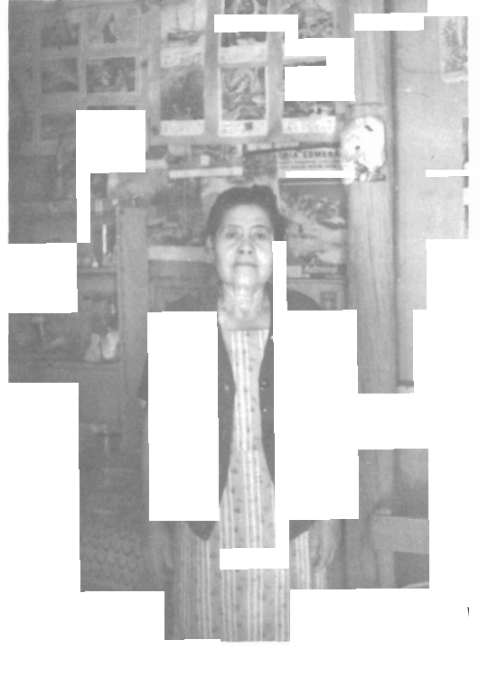
دونيا خوسيفينا من أواكساكا
قاعة الانتظار
خلال رحلة بحث عن علماء النفس الأصليين قمت بها مع زميلة، غريتشن، في ولاية أواكساكا، التقينا مصورًا حدثنا عن شامانة تدعى دونيا خوسيفينا، ونصحنا بزيارتها. وبعد عدة محاولات وسلسلة أحداث بدت وكأنها تعكس وجود أنماط تزامن، استطعنا التعرف إليها.
في ما يلي رواية خبراتنا معها.
قاعة الانتظار
سألنا شاب صارم الملامح والتصرف من أين جئنا، ولماذا نزورها، ومَن أوصانا بزيارتها؛ وبعد تردد قصير سمح لنا بدخول فناء صغير مسقوف، كان بعض الناس جالسين فيه ينتظرون، ودعونا إلى الجلوس مثلهم. كانت هناك سيدات وأطفال ورجلان. وبعد دقائق أطلّت دونيا خوسيفينا على الفناء ورأتنا.
الانتظار والحضور
كان انطباعنا أنها تعرفت إلينا، وبعد ذلك أومأت برأسها وعادت إلى ما عرفنا لاحقًا أنه غرفة استشاراتها. أدهشني ذلك التعرف الظاهري، لأن المصور الذي أخبرنا عنها ألح على زيارتنا كما لو كانت فعلًا مقدّرًا. وتعزز هذا الانطباع حين اعترفت لنا لاحقًا بأنها كانت تعرف أننا سنأتي.
انتظرنا ساعة، وصاحبت ذلك الوقت خبرات شديدة الإرضاء، امتزجت فيها أحاسيس التكامل والقوة والسلام بدلائل واضحة لما سمّيته «الخبرة الشامانية» (انظر لاحقًا).
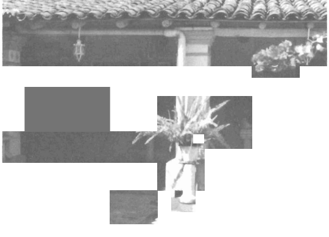
منزل دونيا خوسيفينا من أواكساكا
الاستشارة
أخيرًا دخل الشخص الذي يسبقنا لرؤيتها، وفي تلك اللحظة تحولت خبرتي الداخلية تحولًا كاملًا إلى خوف لا يمكن السيطرة عليه.
الاستشارة
دونيا خوسيفينا امرأة في نحو الستين، نحيلة وحازمة. وقفت في ركن الغرفة الصغيرة المتواضعة تسمع ما لدينا. استغربت انعدام تحفظي، إذ اعترفت لها، بلا مقدمات تقريبًا، بخوفي المفاجئ.
نظرت إليّ مبتسمة، وشرحت فورًا أن خوفي سببه «حارس» يحميها. سألتها إن كان الحارس هو حاميها، فنفت بحزم.
قالت: «هما اثنان، ومختلفان. أحدهما حاميي، والآخر الحارس. كلاهما يعتني بي. الحارس يراقب من يأتي وبأي نيات. أنت خائف لأنه دخل عقلك، ففزعْت. أما حاميي»، تابعت بثقة، «فيساعدني مع المرضى بأن يرشدني إلى ما أفعله معهم».
أجبتها بحرارة: «حارسك رهيب إذن!».
قالت: «أنت خائف لأن لديك شيئًا لم تحلّه».
حين قالت ذلك، ظهرت في عقلي فكرة تقول إنني منفتح أكثر من اللازم، كما لو أن جرحًا أحدث ذات مرة في غلافي الطاقي الواقي.
أخبرتها فوافقت.
قالت مبتسمة: «إن شئت ساعدتك على إغلاقه».
الزيارة عن بعد
سألت بفضول: «كيف؟».
نظرت إليّ بإمعان، وسألت إلى أين أتجه وأين سأنام ليلًا. أجبت: في سان خوسيه ديل باسيفيكو، في سييرا مادري الجنوبية.
هتفت بسرور: «آه! كنت أنوي السفر إلى تلك الأماكن الليلة. سأغتنم الفرصة وأزورك».
ردًا على سؤالي، قالت إنها تخرج من جسدها كل ليلة، وتزور مرضاها وهي واعية تمامًا.
«أذهب إلى اليابان والسلفادور وبليز، ولن تكلّفني زيارتك في الجبال جهدًا إضافيًا».
حمّستني الفكرة. سبق أن اتصلت بشامانات يمتلكون هذه المهارة، ولم تترك لي ثقتها مجالًا للشك بأنها تمارسها أيضًا.
حدثتنا عن تقنيات علاجها، مؤكدة قدرتها على إجراء عمليات بالغة التعقيد، مستخدمة عقلها أداة وحيدة.
قالت: «أستطيع إجراء عمليات قلب وزرع أعضاء، وعلاج أي مرض باستخدام قوتي العقلية».
انتهت الزيارة الأولى حين أخبرتنا بأنها، إضافة إلى ذلك كله، تستطيع الوجود في مكانين في وقت واحد.
ودّعتنا متمنية الحظ وداعية إلى العودة، ومؤكدة ما سبق أن ذكرته: أن دراستنا، مشروع «شامانات المكسيك»، تتطلب الاتصال بشامانات ذوي أعمق حكمة وخبرة.
في تلك الليلة، في كوخ بسييرا مادري الجنوبية، شعرت بحضورها كأن شخصًا يستكشف عقلي ويخفف عنه الضغوط.
الخبرة الشامانية والزيارة الثانية
الخبرة الشامانية
دونيا خوسيفينا مثال لشخص يعيش الخبرة الشامانية ويحفزها. ليس سهلًا فهم ديناميتها وفسيولوجيتها العصبية، خصوصًا أن دراستها بدأت لتوها. لكن تفسيرًا محتملًا لأصلها قد يوجد في مسلمات النظرية السينترجية، التي تؤكد أن الخبرة محصلة تفاعل بين مجال عصبي ينتجه الدماغ والبنية الأساسية للزمكان، أي المجال الكمومي.
يمكن افتراض أن الخبرة الشامانية تحدث حين يتفاعل شخص ذو حساسية وتطور كافيين مع مجال كمومي مشبع بمجالات عصبية صادرة من أدمغة شامانية.
ما الخصائص الشكلية لهذه المجالات التي تؤسس الخبرة الشامانية؟
من الاحتمالات أن شامانات مثل دونيا خوسيفينا ودونيا ليتشا ودون لوسيو مترابطون في مستوى طاقي لطيف، وأن كلًا منهم يعمل عنصرَ تقارب هولوغرافي لمجموع الشامانات.
لذلك يؤدي التفاعل مع أي عنصر إلى الخبرة بكاملها.
الزيارة الثانية
قمت مع غريتشن بزيارة ثانية. كانت قد حددت لنا عصر الخميس، ووصلنا في الموعد.
قالت غريتشن إنها تشعر بغرابة شديدة؛ كانت تعيش
الزيارة الثالثة
حالة استرخاء وانفتاح على الخبرة، وعجزًا عن البقاء مركزة على الحياة اليومية. واعترفت لي لاحقًا بأن الأمر كان كأنها تتفاعل مع كائن غريب يحاول النفاذ إلى وعيها.
كان نحو خمسة عشر شخصًا ينتظرون معنا. وفجأة خرج مساعد دونيا خوسيفينا وأخبرنا بوجوب المغادرة، لأنها لن تستطيع استقبالنا حتى العاشرة من صباح اليوم التالي.
الزيارة الثالثة
استقبلتنا يوم الجمعة في الساعة المتفق عليها. وفي تلك الجلسة استطعت تأكيد واقعية أحد مكونات الخبرة الشامانية، أي القدرة على التواصل المباشر والاتصال بمستويات متجاوزة من الخبرة.
يمكن للقارئ التحقق من ذلك في تفريغ تسجيل الجلسة في نهاية الفصل. أود هنا فقط تلخيص ما حدث والتعليق عليه.
نظرت إلى غريتشن كأنها تعرف رغبتها في فهم ما حدث في اليوم السابق. انتظرت السؤال، ثم أجابت بأنها أدركت أن غريتشن شديدة الانفتاح والاسترخاء، وأن الحارس الذي يحمي خوسيفينا قرر أن يدخل إلى عقل غريتشن.
استشعرت الشامانة أن ذلك سيكون فوق احتمال توازن غريتشن النفسي، وأرادت تجنيبها الحيرة والانزعاج، فقررت أن تُبعد غريتشن كيلا تدخل في الغشية، ولهذا طلبت منا العودة في اليوم التالي.
هذه الدقة الاستثنائية في الاستشعار النفسي
التواصل المباشر — صورة
لحالة غريتشن مثال للتواصل المباشر في أعمق مستوياته وأقواها.
لقد أثبتنا في مختبر البحوث النفسية الفسيولوجية أن التواصل المباشر، حين يحدث، يجعل النشاط الكهروفسيولوجي لأدمغة المشاركين يتشابه، كأن دماغًا يستطيع تعديل نشاط جاره بتعديل نشاطه هو.
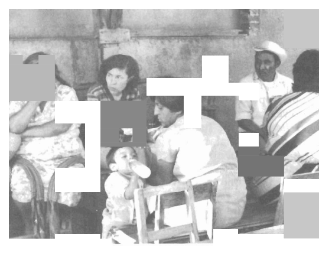
«قاعة الانتظار» لدى دونيا خوسيفينا من أواكساكا
المحادثة مع دونيا خوسيفينا
تفريغ تسجيل الجلسة مع دونيا خوسيفينا، يوم الجمعة 21 فبراير 1986، في أواكساكا. تشارك في الحوار دونيا خوسيفينا، والسيدة خوسيفينا فرانكو، وغريتشن، والمؤلف.
خ. فرانكو: سنُحيل.
دونيا خوسيفينا: تعرفين، يريدون تسجيل ما حدث لها. تقول إنها كانت جالسة هناك، وأنا التقطت الأمر فورًا؛ ولهذا أرسلت إليهما أن يغادرا.
خ. فرانكو: متى؟
دونيا خوسيفينا: أمس عصرًا.
خ. فرانكو: هناك أشياء كثيرة!
المؤلف: أشياء كثيرة.
خ. فرانكو: لكن علينا الحذر وعدم الثقة.
غريتشن: (ضحك.) جئنا بحسن نية.
المؤلف: كنا نفكر أن...
غريتشن: نعم، والأغرب أنني وصلت إلى نقطة رأيت فيها صف الناس كله وقلت إنني لن أحتمل.
دونيا خوسيفينا: لهذا تحديدًا أرسلت أن الأفضل أن تأتيا اليوم، لإدراكي أنك لا تحتملين. قلت أفضل، وإلا فبعد قليل حين أنظر ستكون قد أفلتت الشبكة، ولا.
غريتشن: وما الذي كان؟ بماذا اتصلت؟ لم أشعر بسوء، بل كنت بخير جدًا.
دونيا خوسيفينا: لا، لا أقول إنك شعرت بسوء.
غريتشن: شعرت أنني سأطير.
دونيا خوسيفينا: بالضبط، بالطبع! لكن ليس سوءًا بمعنى آخر. ومع ذلك لم أرد حدوثه.
غريتشن: نعم، شعرت بأنني...
دونيا خوسيفينا: لهذا قلت للشاب: اذهب وقل لهما أن يعذراني، لا أستطيع استقبالهما الآن بل غدًا. هذا السبب، لا شيء آخر. لا تظنا أنني
الحارس والقوة
لم أرد استقبالكما، لكنني أدركت فورًا ما يحدث لها.
غريتشن: وما الذي كان يحدث لي؟
دونيا خوسيفينا: لأن القوة كبيرة، وكما قلت، الحارس هناك. بالطبع كنت تريدين... أو كما نقول، كانوا يريدون أخذك.
المؤلف: هذا هو!
غريتشن: يريدون أخذي أنا؟
دونيا خوسيفينا: نعم. ولهذا شعرت كأنك تريدين الطيران، وكأنك لم تعودي ترين الحروف؛ حاولت القراءة ولم تعودي ترين شيئًا. وربما بدت لك حتى صور الجالسين ضبابية. لهذا أرسلت إليكما.
غريتشن: شعرت بقوة كبيرة حتى قلت: أتريدين أن أساعدك؟ أرافقك. لأنني شعرت هنا بأن الناديات أو القنوات بدأت تقوى، وبحرارة. حين خرجنا قلت إن لدي حرارة طاقة هائلة، أليس كذلك؟
دونيا خوسيفينا: نعم.
غريتشن: ثم أخذت تهبط تدريجيًا.
دونيا خوسيفينا: بالطبع. لو استمررت جالسة هناك...
غريتشن: نعم، لم يكن الموضع المناسب.
دونيا خوسيفينا: ماذا كان سيحدث؟ بالنسبة إليّ لم يكن سيئًا لأنني أعرف، لكن الجالسين ربما قالوا إنك تصابين بنوبة، ويخافون وينهضون ويصرخون بي، وكل شيء يحدث بسبب... لذلك أرسلت أعتذر بأنني مشغولة.
غريتشن: كنت سعيدة حين حدث ذلك.
دونيا خوسيفينا: نعم، شعرت بغرابة قليلًا، وسعادة لأنك أحسست بالقوة.
الاستجابة للتجربة
غريتشن: نعم، كنت أصرخ وأبحث عما يشدني. فالكتاب لم يكن هناك أصلًا. وياكوبو لم يستطع مساعدتي. (ضحك ياكوبو وخوسيفينا.)
المؤلف: لا، كنت... كانت تشدني معها أيضًا.
دونيا خوسيفينا: نعم، كانت...
غريتشن: قلت: ياكوبو لا شيء، أي رجل سيئ! (ضحك.) نعم، كان...
دونيا خوسيفينا: آه، طريف! لهذا قلت ربما انزعجتما.
المؤلف: لا، فهمنا جيدًا. فهمنا جيدًا.
خوسيفينا: لا أظن أنكما انزعجتما.
غريتشن: شعرت بأن هذا ما فعلتِه... حتى قلت لياكوبو: إذا أدركتِ الأمر فقد أسديتِ لي معروفًا.
دونيا خوسيفينا: بالطبع!
غريتشن: عرفت أنني لن أحتمل. لم أعرف ما سيحدث، لكن بالسرعة التي كنت أنطلق بها قلت: لا، كفى.
دونيا خوسيفينا: لهذا قلت...
غريتشن: لا، هذا يحدث نادرًا، ليس سهلًا.
دونيا خوسيفينا: الأمر يعتمد على المكان الذي...
غريتشن: نعم، و...
دونيا خوسيفينا: جاءت أخرى في اليوم الآخر أيضًا؛ لكن هكذا، مثل ما فعلته ماريا كانديلاريا. كانت تتذرع بأنها تشعر بسوء وبكذا وكذا.
(ملاحظة: تتحدث هنا عن مريضة كانت تشعر بسوء وتعذب نفسها.)
قلت لها: ليس ثمة سوء، أنت تتذرعين وتريدين القول إنك... تتحدثين عن... أجبرتني على أن أقول لها.
خ. فرانكو: (طرحت سؤالًا.)
الزيارات الليلية
دونيا خوسيفينا: نعم، شابة.
غريتشن: إذن لم يكن ما حدث لي توهمًا؟
دونيا خوسيفينا: لا، كان طبيعيًا. ولهذا أردتك أن تبتعدي. قلت لتخرج فتلاحظ الحدود وتشعر أفضل.
غريتشن: وفي الليلة الماضية، ألم تأتِ؟
دونيا خوسيفينا: كيف لا؟ لماذا لا؟ ألم أقل إنني سأذهب منذ الليلة الأولى؟ لهذا سألتكما تقريبًا متى ستكونان هناك. لا أمر بين العاشرة والحادية عشرة، بل من منتصف الليل فصاعدًا. وأعود كثيرًا في الخامسة أو السادسة صباحًا. أي إنني عمليًا لا أنام؛ أصل وأستريح فقط، أفعل هكذا قليلًا وهذا كل شيء.
غريتشن: وهل لديك دائمًا هذا العدد من الناس؟
دونيا خوسيفينا: دائمًا. الآن لا ترين كثيرين لأننا أولًا في الثالث عشر، وهو يوم لا نعمل فيه.
غريتشن: لا تعملين هكذا؟
دونيا خوسيفينا: لا نعمل أيام 1 و9 و13 و21. حسنًا، الآن صرنا نعملها. فقط يوم 21...
غريتشن: ولماذا لا؟
دونيا خوسيفينا: لأنها تواريخ نخصصها تخصيصًا خاصًا. وقد فهمتما لمن؟
المؤلف: أشعر بغرابة شديدة.
دونيا خوسيفينا: لماذا؟
المؤلف: لأن... لا أعرف. أشعر بخير، لا بسوء، لكن كأنني... لا أعرف كيف أقول.
دونيا خوسيفينا: تشعر بالتحفظ.
المؤلف: نعم.
دونيا خوسيفينا: كأنك سعيد، لكن قلق في الوقت نفسه، وكأنك خائف من شيء. أليس كذلك؟
المؤلف: (ضحك.) نعم، كأنني متحفظ.
توضيح تحريري: ذُكر تاريخ الجلسة في المقدمة بأنه 21 فبراير، بينما يذكر الحوار هنا اليوم الثالث عشر. أُبقي الاختلاف كما ورد.
الجرح والعجز عن الكلام
دونيا خوسيفينا: متحفظ، لنقل ذلك. تريد الانطلاق لكنك لا تستطيع.
المؤلف: نعم، يا للعجب.
دونيا خوسيفينا: أليس كذلك؟
المؤلف: نعم.
دونيا خوسيفينا: هل تسجل؟
المؤلف: نعم.
دونيا خوسيفينا: تريد الانطلاق ولا تستطيع. تأتي إلى هنا بنيّة كبيرة وبكلمات كثيرة حسب ظنك، لكن حين تصل إلى هنا (تشير إلى الشفتين) ينغلق كل شيء. أليس كذلك؟
المؤلف: نعم.
دونيا خوسيفينا: وكيف شعرت تلك الليلة حين ذهبتما هناك؟
المؤلف: آه، كان جميلًا جدًا. شعرت أنك جئت وأنك كنت، لا أعرف، كأنك فعلت شيئًا.
دونيا خوسيفينا: أعالج، بالطبع!
المؤلف: نعم.
دونيا خوسيفينا: أغلق جرحك.
المؤلف: نعم، بالطبع، شعرت بخير جدًا.
دونيا خوسيفينا: وكيف تشعر الآن؟
المؤلف: متحفظًا، خجولًا.
دونيا خوسيفينا: لكن كيف تشعر بخصوص جرحك؟
المؤلف: يا إلهي.
دونيا خوسيفينا: ليس عليك شرحه لي.
المؤلف: تعرفين أين سأدرك؟ في مدينة مكسيكو.
دونيا خوسيفينا: حسنًا، لا تستطيع التعبير عن نفسك.
المؤلف: لا.
دونيا خوسيفينا: تريد لكن لا تستطيع.
المؤلف: لا أستطيع. وما الذي يحدث لي، لماذا؟
دونيا خوسيفينا: قلت ذلك بالفعل. أنت تتحفظ. وهكذا كنت أقول: ليس عليك أن تشرح لأنك لا تستطيع، لكنني أعرف ما تريد قوله. تريد قول الكثير.
رحلات خوسيفينا
لن تنفتح شفتاك لتقول، لكن روحك تقوله لي.
المؤلف: نعم.
دونيا خوسيفينا: حين تصل إلى مكسيكو تستطيع قوله لي هناك، كل ما تريد وما ترغب بقوله. اتفقنا؟ لن أترك ليلة تمر عليك هناك؛ سأذهب كل ليلة. لأنني أذهب إلى سان لويس بوتوسي ولوس أنجلوس وكل تلك النواحي، وأمر بمكسيكو في العودة. وفي هذه الأيام عليّ أيضًا الذهاب إلى اليابان.
المؤلف: نعم، تبدين يابانية قليلًا.
دونيا خوسيفينا: حقًا؟ ربما بدأت أكتسب ذلك. (ضحك.)
المؤلف: ولماذا تذهبين إلى اليابان؟
دونيا خوسيفينا: لرؤية مرضى. ربما تعرفان أو سمعتما بشيء عجيب جدًا في اليابان، فيما وراء اليابان، حيث يعيشون عراة.
غريتشن: لا.
دونيا خوسيفينا: إلى هناك أذهب.
غريتشن: هناك عراة؟
دونيا خوسيفينا: نعم، عراة كآدم وحواء. هكذا يعيشون منذ البداية، لا خجل هناك.
المؤلف: كمجتمع؟
دونيا خوسيفينا: هكذا، لا يغطون أنفسهم بشيء. لا تمطر هناك، ولا شمس قوية ولا برد. حرارة معتدلة لا توجد في مكان آخر، وهناك شلّال، ما أبهى منظره وما أروعه! يهوي الماء من علٍ ثم يمضي جاريًا... يصنعون أوانيهم وكل شيء.
المؤلف: يا للروعة!
دونيا خوسيفينا: إلى هناك أذهب.
غريتشن: تعالجينهم هناك أم تزورينهم؟
دونيا خوسيفينا: أزورهم وأعالجهم، لكن لغتهم مختلفة جدًا، ما نسميه لهجة.
الأسئلة المكتوبة
المؤلف: وحين تكونين هناك، هل تفهمين؟
دونيا خوسيفينا: نعم، الآن أفهم. في البداية لا، لكن الآن نعم، أفهم أكثر قليلًا. إلى هناك أذهب؛ لذلك أقول إنني سأمر كل ليلة لأراكم عند عودتي من حيث أذهب. أولًا أمر بكل هذه الجهات، ثم هناك، حتى عند السلفادوريين، ومن هناك إلى الجميع.
المؤلف: وما الذي أريد أن أسألك عنه؟ (ضحك.)
دونيا خوسيفينا: تريد سؤالي عن أشياء كثيرة، لكن الأسئلة لا تخرج.
المؤلف: لا تخرج، لا تخرج.
غريتشن: لا تخرج منك؟
المؤلف: لا أستطيع، يا للعجب.
دونيا خوسيفينا: سأعطيك نصيحة.
المؤلف: نعم.
دونيا خوسيفينا: اكتب كل ما تريد قوله لي حين تكون وحدك، حين تكونان مستريحين. اكتبه؛ فهكذا فقط تستطيع الحديث معي، كتابةً لا شفاهة. فهناك أناس لا يستطيعون الكلام.
المؤلف: لا، عذرًا، إنني...
دونيا خوسيفينا: ليس لأنهم لا يستطيعون الكلام، بل... لا أهينك، ليس أنك لا تستطيع الكلام، لكن بالكتابة يوصلون إليّ.
غريتشن: كيف؟ نكتبه وحين تزوريننا...
دونيا خوسيفينا: أراه. تضعونه هناك، فوق منضدة السرير أو ما عندكم، فأراه وانتهى.
المؤلف: لكنني فعلًا أشعر بتحفظ شديد جدًا.
غريتشن: لا تستطيع؟
المؤلف: لا. لدي ملايين الأسئلة للمعرفة، لا لـ... لكنني أشعر أيضًا بأنه لا حاجة. كأن... أتفهمين؟ يحدث ذلك.
الثقة والانفتاح
دونيا خوسيفينا: أظن أن لديك إيمانًا وثقة كبيرين.
المؤلف: نعم.
دونيا خوسيفينا: أليس كذلك؟
المؤلف: نعم.
دونيا خوسيفينا: منذ أول لحظة وصلتما فيها رأيت إيمانكما وثقتكما.
المؤلف: نعم.
دونيا خوسيفينا: أليس كذلك؟
المؤلف: يصعب عليّ جدًا أن أرتاب. يكون الأمر فظيعًا حين أرتاب؛ يتغشّى كل شيء.
غريتشن: هل كان هناك سبب معين لاتصالي بالحارس؟
دونيا خوسيفينا: كان هناك سبب. لأنك جئت مسترخية، هذا هو.
غريتشن: لأنني كنت مسترخية جدًا؟
دونيا خوسيفينا: نعم، كنتِ مسترخية جدًا. ولهذا أحسستِ به على الفور.
خ. فرانكو: سنذهب الآن، تأخرت أنا أيضًا، من فضلك يا جدّة.
دونيا خوسيفينا: نعم، أنا قادمة.
غريتشن: لأن هناك أسئلة كثيرة. (ضحك.)
دونيا خوسيفينا: اكتبوها، وإن شئتما اليوم نهارًا. متى ستذهبان؟
المؤلف: نحو الثانية عشرة.
دونيا خوسيفينا: آه، حسنًا. اكتب كل شيء، كل ما تريدان.
المؤلف: وفي الأحلام ستـ... كيف ستجيبينني؟
دونيا خوسيفينا: سأرى كيف أجيبك.
المؤلف: (ضحك.) حسنًا.
دونيا خوسيفينا: سأرى كيف أجيبكما.
المؤلف: نعم.
دونيا خوسيفينا: اسمحا لي لحظة، من فضلكما.
الفصل الخامس
دونيا ريخينا من سييرا مادري
دونيا ريخينا من سييرا مادري
مع أنه لا يمكن عدّها شامانة أصلية، فيمكن أن نرى في دونيا ريخينا مثالًا لامرأة نشأت في البيئة الغربية لمدينة صناعية معاصرة، ثم قادتها إرادتها وجهدها إلى طلب مصدر المعرفة في عزلة الجبال.
إذ أدركت أن التطور الحقيقي لا يمكن ولا ينبغي أن ينجم عن التبعية الاقتصادية أو التماهي مع الممتلكات، قررت أن تهب جميع مقتنياتها لتكرس نفسها للبحث الداخلي. ومنذ أربع سنوات تعيش في كوخ بسييرا مادري الجنوبية، مكرسة نفسها للتأمل والعلاج.
التقيتها وأنا أتأمل غابة قرب كوخها. سألتني ماذا أفعل هناك، فقلت إنني أبحث عن شامانات. ابتسمت، وأدركت أن داخلها أشد شبابًا كثيرًا من مظهرها الخارجي.
أشارت إلى السماء وأجابت بأن هناك شامانًا واحدًا فقط. في تلك اللحظة بدأ حمار في مكان ما من الجبال ينهق.
ابتسمت مجددًا، وهناك في وسط الغابة، فُسّر حدث ذو تزامن كامل
الشامان الواحد
ببراعة على يد وعي بدا كأنه يعيش في اتحاد تام مع الطبيعة:
قالت باقتناع: «هناك شامان واحد فقط، أما نحن الباقين جميعًا فلا نُحسن إلا النهيق!».
ودّعتها شاكرًا السماء على اللقاء، وعلى معرفتي أن أربع سنوات من الاعتزال يمكن أن تقود إنسانًا إلى الموضع الذي كانت فيه دونيا ريخينا.
الفصل السادس
دونيا ماريا من ميريدا
دونيا ماريا من ميريدا — صورة
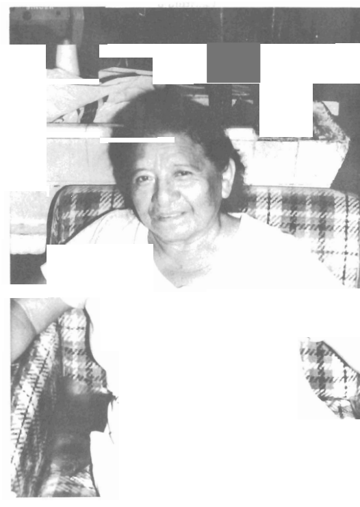
دونيا ماريا من ميريدا
التعريف والسلالة
تعرفت إلى دونيا ماريا أسكورّا بعدما حدثتني عنها إحدى تلميذاتها، دونيا سارا من كانكون.
تقيم دونيا ماريا في ميريدا وتعمل هناك شامانة تُعد من أكثر شامانات المنطقة فاعلية.
يزورها كل يوم، وخصوصًا يومي الاستشارة الثلاثاء والجمعة، عشرات المرضى طلبًا لتخفيف أوجاعهم.
سأحاول في بقية الفصل وصف بعض جوانب عملها وتصورها للواقع.
السلالة
تؤكد دونيا ماريا أن قدرتها العلاجية رافقتها منذ الولادة. لكنها تقر بوجود عدد من المعلّمين ساعدوها على إدراك قواها وأروها كيفية استخدامها.
أحد هؤلاء، وأهمهم لديها،
المعلّم وانفتاح الدماغ
دون ماتيوس ماي، شامان من يوكاتان كان يعالج بالأعشاب.
تؤكد أنه علّمها التعامل مع ما تسمّيه انفتاح دماغها. وهذا مفهوم شديد الأهمية في الشامانية، يشير إلى قدرة الشامانات على التقاط معلومات دقيقة يصعب تبيّنها، بوسائل مباشرة، كالأحاسيس وحالة وعيهم الخاص.
امتلاك دماغ مفتوح يعني التأهل لتلقي المعلومات مباشرة، أما الدماغ المغلق فيعني انخفاض الحساسية في هذا النوع من الاستشعار المعلوماتي.
وجدها معلّمها حين بدأت تظهر علامات الوساطة الروحية، واعتبر ذلك دليلًا على قوى علاجية ينبغي إرجاء استخدامها، لأنها لم تكن قد تجاوزت الثانية عشرة حين اكتُشفت هذه الوساطة.
«أغلق» دون ماتيوس دماغها، وقال إنها ستعمل لاحقًا وإنه سيكون حاميها. أي إن ما قصده هذا الشامان أن روحه بعد موته ستتصل بجسدها وتؤدي عمله العلاجي من خلاله.
هذا ما قالته لي دونيا ماريا؛ وترد روايتها بلسانها في التفريغ في نهاية الفصل.
تؤكد أن ما أخبرها به وقع عند موته. بدأت تدخل في حالات غشية وسيطية، وكان دون ماتيوس يظهر خلالها ليعالج المرضى من خلال جسدها.
وهكذا ترجع سلالة ماريا أسكورّا إلى معلّمها، الذي تلقى بدوره تعاليم من شامانات آخرين لا نعرف عنهم شيئًا.
مفهوم الدماغ المفتوح والإجراءات العلاجية
مفهوم الدماغ المفتوح
كما ذكرت، من أكثر المفاهيم إثارة للاهتمام في تصور دونيا ماريا للواقع ما تسمّيه «حالة الدماغ المفتوح»، التي تشير إلى قدرة الشامان الفائقة الحساسية على تلقّي معلومات من مستويات خفيّة من الواقع، لا تُرى.
الدماغ المفتوح، بحسبها، وراثي، ومحاولة فرض الحساسية المفرطة المرتبطة به تنتج عواقب خطيرة. ولا تنفع ممارسته إلا حين تكون الموهبة طبيعية.
في أقصى حالاته، يعني امتلاك الدماغ المفتوح القدرة على استقبال روح معلّم أو حامٍ متحررة من الجسد، والسماح لها باستخدام جسد صاحب الدماغ المفتوح للعمل عبره. فالوساطة نتيجة لانفتاح الدماغ، ولا تؤكد دونيا ماريا امتلاك هذه القدرة فحسب، بل تستخدمها في إجراءات علاجها.
الإجراءات العلاجية
يومي الثلاثاء والجمعة من كل أسبوع، تجلس دونيا ماريا على كرسي داخل غرفة تكثر فيها الشموع النذرية المشتعلة ورائحة الفحم والبخور. تغمض عينيها وتسترخي، وبعد ذلك فورًا تتغير شخصيتها ويظهر حاميها، الذي يبدأ باستقبال المرضى المنتظرين في غرفة مجاورة.
يدخل كل مريض ويسأل عن آلامه
العلاج عن بعد
وإمكانات شفائه. يجيب حامي دونيا ماريا بسرعة ويقدّم حلًا للمشكلة. وتشمل الحلول أعشاب نباتات مختلفة، وكذلك كثيرًا أدوية صيدلانية أو ألوباثية.
عندما يُسأل الحامي، يجيب باستخدام جسدها، بينما يكون وعيها منفصلًا تمامًا عن الجسد في تلك اللحظة.
العلاج عن بعد
إضافة إلى الإجراءات السابقة، تستخدم ما يمكن تسميته العلاج عن بعد. وتقول إنها تستطيع بهذه الطريقة علاج أي من مرضاها وحمايته وتنميته، مهما بعدت المسافة الفيزيائية. وفي هذا الإجراء تُدعى للسفر في اللامرئي بصحبة أرواح متحررة من الجسد ترشدها.
وحين تُسأل إن كان ذلك يتم في وعي اليقظة، تقول إنه يحدث عادة أثناء النوم، وتُخبر مقدمًا، مثلًا، بأن عملية علاج عن بعد ستقع الليلة وعليها الاستعداد. يعطيها هذه الإشعارات الاستباقية حاميها، ويقتضي استعدادها شرب كأس من الحليب الدافئ، والاستلقاء للنوم فورًا بعدها، والتفكير في العملية التي ستبدأ حين تحلم.
خلال هذه العلاجات تزور دونيا ماريا ومرافقوها مرضاها، ويستشعرون الأوضاع المحيطة بهم ويحمونهم من مواقف طاقية مختلفة.
طقوس الشموع والحراس
الفيلاسيون
من أكثر إجراءات هذه الشامانة استخدامًا الفيلاسيون. تشعل فيه شمعة يوضع عليها اسم الشخص المقصود، ثم يُراقَب اللهب الذي تدل حركاته ولونه وارتفاعه على حالة المريض الصحية.
في كل فيلاسيون تنصح بأن يستدعي الشامان أولًا الأرواح الإيجابية أو أرواح النور، ثم ينفذ الحماية والعلاج عن بعد المطلوبين.
الحراس
من أكثر جوانب دونيا ماريا أسكورّا باطنيةً استخدامها الحراس.
إذا جاءها مريض يطلب حماية لنفسه ومنزله، تقيم فيلاسيون وتطلب له الحماية. وتسمّي هذه الحماية «حراسة»، وتوضح أن روحًا حارسة تقوم بها، تُستدعى لحماية المريض.
الخلاصات
لا شك أن من أكثر جوانب عملها إثارة للاهتمام قدرتها على دخول حالة غشية تتغير خلالها
الوعي البديل
شخصيتها، وتنفذ عملياتها العلاجية وتعتني بمن يطلبون استشارتها.
ومن خصائصها اللافتة أيضًا قدرتها على العلاج عن بعد وحماية مرضاها باستخدام ما تسمّيه «حراسات روحية».
وأخيرًا، ينطوي تصورها للواقع على وجود عالم مواز للعالم البشري، تعيش فيه كائنات روحية تؤدي أعمال علاج، وتحمي المرضى، وتتعامل مع الطاقات، وتقود روح الشامانة في رحلات غير مرئية لزيارة مرضى في مناطق بعيدة عن ميريدا.
سواء أثناء حالات الغشية الوسيطية أو العلاجات عن بعد، يصبح وعيها اليومي وقدرتها على التذكر الواعي والتعامل مع عناصر هذه العمليات محدودين تمامًا.
ولأن ظاهرة اختفاء الوعي اليومي وظهور وعي بديل شائعة جدًا في علم النفس المكسيكي الأصلي، سيكون من المناسب إجراء بحث عميق لفهم ما يحدث حقًا خلال تحولات الشخصية هذه، وما الذي يتفاعل مع وعي الشامان اليومي، فيضخمه أو يوسعه حتى يتعامل مع العالم والواقع بطرائق يستحيل تمامًا على الوعي التقليدي القيام بها.
إن تصور وجود أرواح غير مرئية، حماة أو إخوة روحيين، ينفذون العلاج بينما جسد الشامان منفصل عن وعيه المعتاد، مثير للاهتمام كإمكان افتراضي؛ لكنه يبدو تفسيرًا مبسطًا أكثر من اللازم لاستيعاب تعقيد ظاهرة الوعي البديل كله.
المقابلة المؤرخة في 1 يناير 1986
ومع ذلك، فإن فكرة الاتصال بالكائنات الروحية هي التفسير الأشيع والأعم في الشامانية المكسيكية.
يبدو أن الشامان، من حيث ما يعيشه هو، يختبر وجود كائنات في مستوى موازٍ غير مرئي من الوجود، ويشعر بأنه على اتصال بها. وتنبثق هذه الخلاصة من جميع الدراسات المنجزة حتى الآن، التي يؤكد فيها الشامانات أن ما ذكرته هو ما يحدث.
في الوقت الراهن ينبغي مواصلة بحث الظاهرة في مرحلة جمع المعلومات، لتقديم تفسير لاحق يمكنه استيعاب جميع وجوهها المعقدة أو معظمها.
مقابلة 1 يناير 1986
المؤلف: «زاز تون».
دونيا ماريا: «زاز تون».
المؤلف: ومن أين تأتي؟
دونيا ماريا: غالبًا يوجد «زاز تون» في منطقة جبلية.
المؤلف: في الجبال؟
دونيا ماريا: في الجبال حول ميريدا، مثلًا أوكسمال وتشيتشن إيتزا وأماكن أخرى فيها مرتفعات. الناس القدماء، المايا، كانوا يعرفون كيف يجعلونهم يحفرون. يحفرون في المرتفعات، ويعثرون في وسطها على أطباق وأكواب وقدور استعملها المايا، وبينها يُكتشف ذلك الشيء، «زاز تون»؛ لا يُشترى. العشّاب الحقيقي، الذي يسمّونه «مينتوس»،
الكرة والعظم
يجب عمليًا، بفضل الموهبة التي تحمل القوة، أن يجد «زاز تون».
المؤلف: يجب أن يأتيه.
دونيا ماريا: هكذا. حين يبدأ العشّاب استخدامه، فالعشّاب الذي تسمّونه «مين» يسترشد بالكرة البلورية.
المؤلف: لكن تلك الكرات تبدو بلاستيكية. رأيتها من قبل.
دونيا ماريا: ليست الأصلية. لنفترض أنها صُنعت أو اشتُريت. أما «زاز تون» الحقيقي الذي يستخدمه العشّاب الحقيقي فهو كرة. أتعرف كرات اللعب الزجاجية؟ واحدة منها، لكن كبيرة.
المؤلف: ملوّنة أم بيضاء؟
دونيا ماريا: بيضاء تمامًا. توضع على كأس زجاجية ضيقة الفوهة. حين توضع الكرة تُشعل شمعة وتُتلى صلوات يعرفها العشّابون، مع استدعاء الشخص المطلوب. وبعد الأحاديث والصلوات تحضر روح الشخص المستدعى، فيعرف العشّاب تلقائيًا حاله: سيئ، طيب، والرياح.
المؤلف: اعتمادًا على ما يراه في الكرة. وهل كان المايا يستخدمونها؟
دونيا ماريا: العشّابون القدماء أنفسهم. ويستخدمون أيضًا، وهذا لم تره، عظم سمكة يسمّونه «شتون». ألم يخبرك أحد به؟
المؤلف: لا، لا أحد.
دونيا ماريا: عظم ينقعونه في شراب اليانسون، وهو شراب كحولي عادي جدًا، عند منتصف الليل. وبالطبع يجب أن تعرف ما ستتلوه، لا أن تصلّي وحسب. تبدأ التلاوة والكلمات والابتهالات التي يستخدمها العشّابون، وتطلق تلك الشوكة.
الشوكة ولهب الشموع
المؤلف: كيف تطلقينها؟ ترمينها؟
دونيا ماريا: لا، تذهب وحدها.
المؤلف: تختفي؟
دونيا ماريا: نعم.
المؤلف: والكرات أيضًا تظهر وتختفي؟
دونيا ماريا: لا، الشوكة نعم. تذهب وتختفي. تترك كأس الشراب أو جِيكارا صغيرة. أتعرفها؟ واحدة أصغر، تترك فيها اليانسون. حين تطلب من تلك الشوكة، «شتون»، أن تذهب إلى الوجهة التي تأمر بها، تعود بعد 24 ساعة بعلامة. وتعرف العلامة: تأتي ورأسها الصغير ملطخ بالدم. هذا ما يعمله العشّاب.
المؤلف: وماذا عن الشموع يا دونيا ماريا؟ علّمتني ساريتا تمييز لغتها. مثلًا إذا انشطر الرأس اثنين. كنا أمس نتفحص أحد تلاميذي، لأنني قلق جدًا ولا أعرف كيف يفكر. أشعر فقط أنه... يثير ريبتي. قلت لها كيف أعرف تفكيره؟ قالت لنقم بفيلاسيون. أشعلنا الشمعة وكانت منقسمة اثنين.
دونيا ماريا: انقسمت وحدها أم قسمتها من قبل؟
المؤلف: لا، وحدها.
دونيا ماريا: آه، وحدها. صحيح.
المؤلف: قالت لي إن تفكيره دائمًا مزدوج، فلا يمكنك الوثوق بشخص كهذا. وإذا مال اللهب فهذا يعني أن الشخص معوج.
دونيا ماريا: حين تُشعل، مثلًا، وتسقط الفتيلة هنا فتشكّل قناة، فهذا موت مؤكد.
المؤلف: قناة من البارافين؟
دونيا ماريا: تشعل هذه الشمعة هنا وتسقط الفتيلة هنا.
المؤلف: تنحني الفتيلة.
توضيح تحريري: الجِيكارا (jícara): وعاء تقليدي صغير يصنع عادة من قشرة ثمرة مجوفة.
الفيلاسيون والحامي
دونيا ماريا: إذا كوّنت الفتيلة عند سقوطها قناة...
المؤلف: في الشمعة؟
دونيا ماريا: في الشمعة نفسها. ترفع الفتيلة وتقصها وتقيمها فتواصل الاحتراق. وبعد خمس عشرة دقيقة تفعل الشيء نفسه. وإذا فعلته في الثالثة، فلن ينهض ذلك الشخص، سيموت. هذا أمر الشموع.
المؤلف: وكيف تصلين الشخص بالشمعة؟
دونيا ماريا: ببساطة، أشعل شمعة وأضع عليها اسم الشخص، مثلًا السيد ياكوبو.
المؤلف: تضعينني ذهنيًا؟
دونيا ماريا: لا، أكتبه على ورقة ألصقها بالشمعة. يمكن أن تكون بين خمسين شمعة ولن تضيع لأن عليها اسمك، وأسماء الآخرين على شموعهم، وهكذا.
المؤلف: وهل تتصلين ذهنيًا أيضًا؟
دونيا ماريا: ليس تحديدًا حين أضع الشمعة. حين أشعل الفيلاسيون أستدعي الأخ الذي يخدمني فقط.
المؤلف: حاميك؟
دونيا ماريا: دون خوسيه ماتيوس ماي هو الحامي الذي يعمل معي. حين أشعل الفيلاسيون أستدعيه وأقول: هذا لفلان، يجب البحث عن هذا وذاك فيه؛ آمر بذلك. عندئذ نكون على الأثر. بعد خمسة أيام يخبرونني عن شخص شديد المرض، فأضع له الفيلاسيون فورًا. وبعد أربع ساعات تُرى الفتيلة في القاع؛ أعيد إشعالها فتغرق للمرة الثالثة، فأطفئها، لا تستمر، وأدعها ترتاح عشرين دقيقة. ثم أعيد إشعالها فتفعل الشيء نفسه، فأحدد لذلك الشخص تسعة أيام من الحياة. وإن لم تكن تسعة بالضبط، ففي عشرة
الإرسال إلى سارا
أيام يرحل، بل أحدد الساعة أيضًا. لكن هذا كله روحي.
المؤلف: هل يخبرك حاميك بذلك؟ مثلًا إن أردت إبلاغ دونيا ساريتا شيئًا في كانكون.
دونيا ماريا: نعم، أقيم لها فيلاسيون وأناديها. لكنني لا أبلغها لأن دماغها لم يمتلك القوة بعد. يُفعل ذلك حين يعمل الدماغ. أتفهم؟ حين تكتسب هذه الفتاة القدرة التي عندي على ذلك، أفكر فقط: ساريتا، هناك هذا وذاك. كأنني أتحدث معها، لكنني أنادي روحها في الوقت نفسه.
المؤلف: روحها الحامية؟
دونيا ماريا: لا، روحها هي، أناديها وأشرح. حين تستيقظ تعرف ما قلته.
المؤلف: آه، وهي نائمة.
دونيا ماريا: نعم.
المؤلف: ماذا تشعرين الآن يا دونيا ماريا؟
دونيا ماريا: لا شيء، هدوء.
المؤلف: وكيف تشعرين بي؟
دونيا ماريا: أراك أهدأ، وتعرف لماذا؟ حين كنت مع الرياح السيئة هناك، انعكس ذلك في نظرك، أما الآن فلا تحمل ذلك الانعكاس. منذ أول لحظة رأيتك فيها رأيت ما يشبه ظلال هيئات.
المؤلف: في العينين؟
دونيا ماريا: في العينين.
المؤلف: وكيف تفسرين أنك تؤدين هذا العمل؟
دونيا ماريا: حسنًا، بطريقتي في التفكير والفهم، ليس لنا اتصال كما نقول حين نعيش في هذا العالم. أفكر فقط أو أدرك أن الواقع هكذا، وأن ما نفعله بأعمالنا، لأن الحظ والموهبة موجودان لدينا أصلًا.
نشأة الموهبة
المؤلف: منذ الولادة؟
دونيا ماريا: منذ الولادة. لا نتعلم شيئًا ولا نقرأ شيئًا، ولا نعتمد على التعلم؛ ينشأ هذا في الرأس. أتفهم؟ تلك الموهبة التي نعمل بها لا ترسلها السماء ولا النجوم ولا القمر؛ بل، كما قلت، وُلدنا بها ونمارسها.
المؤلف: كيف أدركت أنك تمتلكينها؟
دونيا ماريا: في الثانية عشرة، لأنني كنت أغيب بهذه الطريقة في كل وقت. يضعونني في الفراش، فقد كنت طفلة. وحين تدق الساعة منتصف الليل، وأنا نائمة كمن يمشي أثناء النوم، أفتح باب الشارع وأركض إلى الكنيسة والسوق والحديقة والمقبرة، أتحدث إلى القبور وأركض وأقفز.
المؤلف: بجسدك؟
دونيا ماريا: نعم، لكنني لا أتذكر. أعود بالطريقة نفسها. لاحظ والداي غرابة سلوكي، لأنه غير طبيعي، فبدآ يسألان العشّابين. والذي جاء وعالجني حتى أكف عن الخروج كان الأخ ماتيوس، الأخ الذي يعمل معي.
المؤلف: كان حيًا؟
دونيا ماريا: نعم، آنذاك. هو الذي عالجني وقال: «سنغلق دماغها مؤقتًا؛ ستكون وسيطي الجسدي مع الزمن». وبعد سنوات مات، وبقيت روحه معي. حين أتممت الثانية عشرة فقدت أمي وأصبحت يتيمة، فأخذوني إلى بيت طبيب. اسمع كيف يمكن تحليل هذا: ذهبت إلى بيت مانويل كونتريراس، رحمه الله، فقد مات أيضًا؛ طبيب كبير واختصاصي كبير في أمراض النساء. أخذوني
ظهور الحامي وذكريات الولادة
للعمل خادمة صغيرة معهم؛ كانت زوجته عرّابة أحد إخوتي، فسلّموني إليهم وتركوني هناك. بعد ستة أو سبعة أشهر، لا أذكر، اقترب الكرنفال، وكنت نائمة ليلة ثلاثاء الكرنفال. لم يكن الطبيب وزوجته يعرفان ما أنا عليه أو الموهبة التي أحملها. ذات فجر سمعت الطبيب يقول: اغْلوا الوعاء الكلويّ الشكل والإبر، قيصرية فورًا. كانت ولادة مبكرة. نهضت زوجته، وسمعت المحاقن والأدوات، ثم لم أعد أعرف شيئًا. لم أر ولم أسمع. عندئذ عرف الطبيب مانويل كونتريراس ما أنا عليه، لأنني نهضت في تلك اللحظة وقد حلّ الحامي في جسدي.
المؤلف: هل كان قد مات؟
دونيا ماريا: مات قبلها بسنوات. لكنه كان عشّابًا عظيمًا، فواصلت روحه وقواه الكبيرة بعد موته حتى يومنا هذا. نهضت و«تجلّى»، كما نقول عادة. هذا هكذا وذاك هكذا، وانتظمت الولادة ووُلد الطفل، ولم تكن قيصرية ولا شيء آخر؛ معجزة وانتهى الأمر. بدأوا: هذه الفتاة، هذه الطفلة... وبدأ البحث. تحدثوا إلى أبي الراحل وأخبروه بأنهم لاحظوا شيئًا غير طبيعي وأنا صغيرة جدًا. وأمر آخر: هذا الأخ خوسيه ماتيوس، حاميي، كان يعرف أسرتي منذ سنوات كثيرة. يقولون إنني بكيت في بطن أمي قبل ولادتي بأربع وعشرين ساعة؛ وكانوا يقدمون له العون في منزلنا. وحين حدث ذلك استدعوه لأنه يسكن مقابلنا. قالت له أمي الراحلة: حدث لي هذا، صرخت صرخة رهيبة كأنها وُلدت بالفعل.
قارورة الماء
قال: «اصمتي، لا تقولي شيئًا لأحد. ابحثي عن قارورة لتر، والأفضل خضراء، اغسليها واملئيها ماء، وادفنيها هنا». هذا هو السر، فلهذه الأمور أسرار كثيرة.
دُفنت يا سيد ياكوبو.
المؤلف: لكن ماذا كانت؟
دونيا ماريا: قارورة ماء. حين كنت في الثانية أخرجتها وأنا ألعب. أخبروه ثانية لأنه قريب ومخالط لوالديّ. قال أن تُغسل جيدًا مع غطائها وتُسقى لي. شربت الماء الذي دُفن قبل ولادتي. هل تعرف أن البيضة التي تبيضها الدجاجة يوم الجمعة العظيمة تجفّ؟
المؤلف: لا.
دونيا ماريا: إذن «المين» الذين تعرفهم متأخرون جدًا. ألم يخبرك أحد منهم؟
المؤلف: لا أحد. (ضحك.)
دونيا ماريا: ما زال ينقصك الكثير. البيضة التي تبيضها الدجاجة يوم الجمعة العظيمة تتحول إلى مسحوق، لأنه يوم مقدس جدًا، وما يقوله الكتاب المقدس عن حياة يسوع حدث فعلًا. بيضة الجمعة العظيمة تجف، وبيض أي يوم آخر يتعفن. أتفهم؟
المؤلف: لكن ما علاقة ذلك بقارورة الماء؟
دونيا ماريا: كأننا نقارنها ببيضة الجمعة العظيمة. دُفن الماء حين بكيت، وأخرجته في الثانية وكان ما يزال موجودًا. لماذا لم يجف؟ كان ينبغي أن يجف.
المؤلف: لا، إذا كانت مغلقة جيدًا فلا.
دونيا ماريا: يجف.
المؤلف: يمكنك ترك قارورة نبيذ سنوات.
دونيا ماريا: يجف يا دون ياكوبو.
غياب الوعي أثناء الحلول
المؤلف: لا إن كانت مغلقة جيدًا.
دونيا ماريا: آه، حسنًا، إن كانت مختومة جيدًا.
المؤلف: وماذا حدث حين شربت الماء؟
دونيا ماريا: كانت قارورة ماء، لنفترض أن السائل مبارك.
المؤلف: ولماذا لا تدركين حين يعمل الأخ؟
دونيا ماريا: ببساطة، أعير جسدي ومادتي. لا أستطيع معرفة ما يعالجه الأخ، فلا يمكن أن تكون هناك حالتان من الحلول تسمعان أو تعرفان.
المؤلف: لكن أين تذهبين أو ماذا يحدث؟
دونيا ماريا: من يدري أين تنحني روحي في تلك اللحظة.
المؤلف: لا تعرفين أين تذهبين ولا كيف يظهر الأخ.
دونيا ماريا: كيف يظهر الأخ؟
شخص ثالث: تسترخي وتستريح. تلاحظ كيف يسترخي الجسد.
المؤلف: ولا تصدر أصواتًا؟
شخص ثالث: أنفاسًا.
المؤلف: لكنها قوية جدًا.
دونيا ماريا: حين يدخل يدخل، وحين يخرج يخرج.
المؤلف: وماذا تشعرين؟
دونيا ماريا: لا أشعر بشيء حينها.
المؤلف: كالنوم.
دونيا ماريا: النوم.
المؤلف: ألم تطلبي من الأخ أن يدعك ترين؟
دونيا ماريا: لا، لأن ذلك لا يناسبني. قد يحدث انطباع سيئ، والأعصاب... مع أنني محمية جدًا، لكن حين أكون معه أكون أخرى، وحين أكون وحدي أكون وحدي.
المؤلف: ألا يقلقك أن يستخدموا جسدك؟
الثقة والموهبة الطبيعية
دونيا ماريا: بصراحة لا. كأنه لا يهم، كأن تنام.
المؤلف: وحين تستيقظين تشعرين بخير؟
دونيا ماريا: لا أتذكر مدة جلوسي، ولا ما تحدث به، ولا ما فعل أو قال؛ لا شيء. أغيب تمامًا.
المؤلف: وهل يفيدك ذلك؟
دونيا ماريا: كثيرًا.
المؤلف: بماذا؟
دونيا ماريا: ببساطة أعيش بثقة كبيرة؛ أثق به وحده. لو خرجت إلى الشارع وكانت هناك بئر، فسألقي نفسي وأخرج ولن يحدث لي شيء، لأنني أعرف أنه معي.
المؤلف: حسنًا، هو هنا، أشعر بشيء. كلما أتيت لرؤيتك شعرت بشدة كبيرة.
دونيا ماريا: بسبب الفيض الذي لديّ.
المؤلف: أشعر بأنك قوية جدًا.
دونيا ماريا: لأنه فيض الحماة، هو وغيره ممن يزورونني.
المؤلف: هناك كثيرون يقولون إن فعل ذلك شديد الخطورة.
دونيا ماريا: تعرف متى يكون خطيرًا يا سيد ياكوبو؟ حين يخترعه المرء ويفرضه على نفسه دون يقين. لكن إذا فعلت شيئًا أو قلته فأنا واثقة تمامًا مما أفعله، لأنني أعرف أنهم لن يتخلوا عني. أما الذين يجبرون أنفسهم على الحلول، ويستدعون روحًا قسرًا لتفتح أدمغتهم، فنعم، ذلك خطير جدًا، لأنهم قد يصبحون فاقدي العقل.
المؤلف: أي تقولين حين يكون طبيعيًا.
دونيا ماريا: منذ الولادة، فلا تقلق.
المؤلف: وماذا يفعل الأخ حين يكون هنا؟
الحياة الروحية
دونيا ماريا: يعالج ويصف الأدوية ويدلّك ويحادث الناس ويجيب عن أسئلتهم بشأن الأمراض.
المؤلف: يعطي دواء.
دونيا ماريا: دواء صيدليًا.
المؤلف: آه، صيدليًا.
دونيا ماريا: لم نعد نستخدم الأعشاب هنا تقريبًا.
المؤلف: فالدواء يأتي الآن من الصيدلية. يا دونيا ماريا، كيف تكون الحياة الروحية؟
دونيا ماريا: تقريبًا كما نعيش نحن يا سيد ياكوبو. نموت ويموت الجسد، لكن الروح لا. وتظل أرواحنا تجوب الأرض كما نسير ماديًا.
المؤلف: لكن هل يرحل بعضهم أم يبقون جميعًا على الأرض؟
دونيا ماريا: نعم، هناك مكان بحسب إرشادات الإخوة أو الحماة. الطيبون يبقون، والأشرار يذهبون إلى الجحيم، وهو سجنهم الروحي حيث يحبسون الأرواح السيئة. أما الطيبة فتبقى في الأرض، مثلنا لنقل.
المؤلف: والحماة؟ يقول بعضهم إنهم يأتون من كواكب أخرى.
دونيا ماريا: نعم، الحماة إخوة روحيون دائمًا. يقولون إن حاميًا عظيمًا يأتي من المشتري، اسمه «إنغليس مين».
المؤلف: من المشتري؟ ما اسمه؟
دونيا ماريا: «إنغليس مين».
المؤلف: وبأي جسد كان يعيش على المشتري؟
دونيا ماريا: هذا تحديدًا ما لم نهتم بتوضيحه، لكننا نعرف أنه يأتي من ذلك الكوكب.
المؤلف: وهل يعرفه حاميك؟
دونيا ماريا: بالطبع، هو من جماعته.
المؤلف: آه، جماعة.
الجماعات والسفر الروحي
دونيا ماريا: نعم، يجتمعون في جماعات، والتفكير في كل هذا ودراسته وتحليله طويل جدًا.
المؤلف: وهل توجد جماعات كثيرة؟
دونيا ماريا: آه نعم! وهو نفسه يوصي أيضًا بأنه قبل منتصف الليل بخمس دقائق تسكت الأرض؛ يذهب الطيبون جميعًا ليقدموا تقريرًا، ربما أمام الله أو المرشد الروحي، حكومتهم. فللإخوة الأرواح حكومة أيضًا، وشخص يضع قانونًا لهم أو يأمرهم تقريبًا. هذه حياة الأرواح.
المؤلف: وحين يعمل حاميك، ما عمله الرئيسي؟
دونيا ماريا: كل شيء.
المؤلف: قد يأتي أناس بكسور وأورام، بكل شيء.
دونيا ماريا: إن كان ورمًا يمكن تفكيكه بالفيلاسيون.
المؤلف: بالفيلاسيون؟ وهل يستدعي حماة آخرين؟
دونيا ماريا: لا، الفيلاسيون مثلما فعلت في مزرعتك.
المؤلف: لإزالة التأثيرات السلبية.
دونيا ماريا: لن أذهب بنفسي، لكن ستذهب روحي وروحه وأرواح أخرى.
المؤلف: آه، إذن روحك...
دونيا ماريا: يستخدمونها.
المؤلف: لكنك تدركين هناك.
دونيا ماريا: تقريبًا، نادرًا جدًا.
المؤلف: آه، مثلًا تستطيعين الذهاب ليلًا.
دونيا ماريا: إذا نمت في التاسعة أو العاشرة، يمكنهم أخذ روحي حتى إيطاليا.
المؤلف: لكنك لا تتذكرين جيدًا ما يحدث؟
دونيا ماريا: بالطبع لا، لكن حين يطلبون يُخبر
خاتمة مقابلة دونيا ماريا
الجسد: اشربي كأس حليب، فستسافرين الليلة!
المؤلف: وإن أردت فعل ذلك وحدك؟
دونيا ماريا: لا، ليس بلا قوتهم. يجب أن يكون بقوتهم. ما رأيك؟
المؤلف: مثير للاهتمام جدًا.
الفصل السابع
دون أنطونيو من كينتانا رو
دون أنطونيو من كينتانا رو — صورة
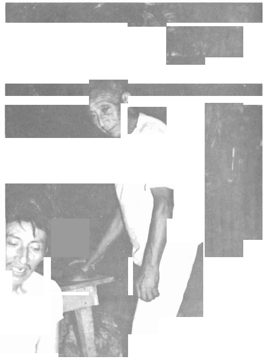
دون أنطونيو من كينتانا رو
التعرف إلى دون أنطونيو
على مسافة نحو ساعة من كانكون باتجاه بايادوليد، في ولاية كينتانا رو، تقع قرية صغيرة يعيش فيها عالم نفس أصلي يدعى دون أنطونيو. تعرفت إليه أواخر ديسمبر 1985، أثناء بحث عن الشامانية في كينتانا رو. عرفت أن عالم نفس أصليًا شهيرًا يعيش في القرية، فشرعت أبحث عنه. وجدت شابين في متجر وسألتهما إن كانا يعرفان «مين» في القرية. تعني «مين» بلغة المايا معالجًا أو شامانًا، وتشبه كثيرًا لفظ «نين» الذي يعني مرآة. يبدو أن أصل الكلمة الدالة على الشامان شبيه بأصل كلمة المرآة. وهذا التشابه مثير للاهتمام للغاية، لأن المفترض أن يعمل الشامان مرآةً يعكس لمرضاه ما يبحثون عنه من أنفسهم.
استمع الشابان باهتمام وتناقشا ليقررا هل يوجد «مين» في القرية أم لا. وبعد دقائق أخبراني بوجوده، وأنهما، إن رغبت،
اللقاء الأول
سيرشداني إليه. وافقت، وسرنا في شوارع ترابية إلى كوخ يعيش فيه ابنه الذي يعمل نجارًا. وأخبر مرافقيّ أين يقع بيت أبيه.
عبرنا منعطفًا آخر ووصلنا أرضًا يتوسطها كوخ نمطي من كينتانا رو: مستطيل صغير بجدران من العيدان وسقف قشي، وفي داخله هيكل خشبي تُعلق منه أرجوحة أو أكثر. دخلنا فوجدنا دون أنطونيو مستلقيًا في أرجوحة، مع زوجته، امرأة من السكان الأصليين ترتدي هويبيل مطرزًا بالزهور، وكانت، كما عرفت لاحقًا، عمياء تمامًا.
استقبلنا بابتسامة، وبدا وجهه مألوفًا لي. رجل من السكان الأصليين، أشيب الشعر، ناضج، حسن البنية، طويل، بين الستين والسبعين.
دعاني إلى الجلوس مع مرافقي، وجلس هو في أرجوحته. لم يكن يتحدث إلا المايا، فطلبت من مرافقي الترجمة إلى الإسبانية.
سألني ماذا أريد منه. شرحت أنني أجري بحثًا للجامعة، وأن أكثر ما يهمني معرفة تصور «المين» للواقع، وأنني أتيته بعدما سمعت أنه معالج. حين سمع الترجمة غضب وجهه وبدأ يتحدث بنبرة قوية جدًا، قائلًا إنه لا يقبل أن يدرسه أحد، وإن عليّ أن أوضح تمامًا ما أريد معرفته حقًا. بلغ غضبه حدًا غيّر حالتي الانفعالية بقوة، حتى فكرت لحظة في التخلي عن دراسته، لشدة الرفض الذي كنت أشعر به. لكنني تماسكت وشرحت أنني لا أريد بحث
أصول قوى دون أنطونيو
شيء خارج فكرته عن الواقع، وأن أكثر ما يهمني التعلم منه. هدأ، وقال إنه يقبل أن أشهد قراءة الحظ التي سيجريها لي ليلة الاثنين التالي. طلب أن أصل عند الغروب وأستعد للبقاء حتى الفجر، الوقت الأنسب للقراءة.
سألته عن الإجراء الذي سيستخدمه، فأجاب بأن القدماء يعرفون فنون العرافة أكثر منه، وأنه لم يعد يمارسها حقًا، وأن الشامانات قديمًا كانوا يستخدمون كرات للعرافة لكنه لم يعد يستخدمها.
أدهشني التغير؛ فمنذ لحظات وافق على العرافة، والآن يُظهر جهله بالفنون الشامانية. ظننت موقفه أسلوبًا لإظهار تواضعه، واكتفيت بإجابته بأنني سأعود الاثنين لأشاهد الإجراء. ودّعنا بعضنا. سأصف الآن ما حدث في المقابلة الثانية يوم الاثنين التالي.
أصول قوى دون أنطونيو
ذهبت عصر الاثنين مع دونيا سارا من كانكون وصديق، لزيارة دون أنطونيو. وافقت سارا على مرافقتي للترجمة، وكان صديقنا مهتمًا بمشاهدة طقس العرافة.
وصلنا القرية، وحين دخلنا الكوخ وجدناه مستلقيًا في الأرجوحة. وكانت
الصور والكائنات الصغيرة
زوجته جالسة تنسج بمهارة استثنائية رغم عماها الكامل. وكانت هناك حفيدة لهما في نحو السادسة، جميلة جدًا وعلى سجيتها تمامًا. دعونا للجلوس، وطلبت الطفلة أن أصورها. وافقت؛ ولأنني أخرجت الكاميرا، سألت دون أنطونيو إن كان يمكنني تصوير الكوخ وتصويره مع زوجته. وافقا، وبدأت التصوير حتى أخذ يُظهر انزعاجًا شديدًا مثل الذي أظهره في لقائنا الأول. كان يقول أشياء بالمايا بصوت عالٍ جدًا. أخبرتنا سارا بأنه شديد الضيق من الصور، ولا يفهم لماذا جئنا، وهل نعبث به أم ماذا نريد. شرحنا أن الصور لا غرض سلبيًا لها، وأننا نريد التعلم منه ومعرفة عمله فقط.
هدأ أخيرًا، واستطعت سؤاله عن عمله، وتحديدًا أصل معرفته. أجاب بأنها مرتبطة بكائنات صغيرة تعيش في الحقول ويتواصل معها. قال: «علّمتني كل ما أعرف، وأتواصل معها بواسطة كرات وضعتها تلك الكائنات في مواضع مختارة، ولا يعثر عليها المرء إلا إذا كان سيستخدمها في الغرض المناسب». روى أنه وجد ذات مرة، وهو في حقل الذرة، مجموعة كرات عرف أنها من هذا الأصل. احتفظ بها لكنه لم يجرؤ على استخدامها قط، بل وهبها لصديق لاعتقاده أنه غير مؤهل. وبعد مدة، وهو يعمل في حقله أيضًا، وجد كرات أخرى، وهذه المرة
توضيح تحريري: لفظ duendes اسم لكائنات خفية صغيرة في الموروث المحلي؛ تُرجمت هنا «كائنات صغيرة» دون مساواتها بمفهوم ديني محدد.
أرواح الجهات الأربع
قرر أنه اختير قطعًا ليصبح معالجًا. ومنذئذ تعلم استخدام الكرات وطلب من الكائنات الصغيرة مساعدته.
في يوكاتان وكينتانا رو تصور كامل عن وجود كائنات ضئيلة تعيش في الأنفاق والكهوف، يسمّونها «ألوشيس». لا أستطيع الجزم بأن كائنات دون أنطونيو هي الألوشيس، وإن بدا النوعان متشابهين جدًا. كلاهما صغير وحكيم وقوي، وكلاهما يتواصل مع أشخاص خاصين جدًا ليعلّمهم فنونًا، كالعلاج. أيًا يكن، يؤكد دون أنطونيو أنها تتواصل معه وتساعده في عمله.
أرواح الجهات الأصلية الأربع
يرى دون أنطونيو أربعة أنواع من الكيانات الروحية، يرتبط كل منها بإحدى الجهات الأصلية الأربع. حين يُسأل عن مرض شخص، يشعر هل يأتي أصله من إحدى الجهات، وبحسب جهة المصدر يشخّصه سلبيًا أو إيجابيًا، أو أذى مقصودًا أو طبيعيًا.
يرد وصف هذه الجهات في نهاية الفصل، في قسم التفريغ، مع روايته لتصوره الروحي. يستطيع القارئ فيه ملاحظة أسلوبه اللفظي وأفكاره عن أصل معرفته.
طقس العرافة
بعد أن روى أصل معرفته واتصاله بالكائنات الصغيرة والأرواح، وافق على إجراء طقس عرافة للمؤلف. سأصفه كما شاهدته وعشته.
جلس أمام طاولته في زاوية الكوخ، عليها شمعة مشتعلة وصور دينية وصلبان. أخذ من طرفها كيسًا صغيرًا ووعاء مغلقًا بغطاء ضئيل. فتحه وأخرج كرات ملوّنة وضعها في إناء مملوء بسائل يشبه الماء.
أخذ كرة ونظفها وجففها ووضعها على الطاولة قرب الشمعة. فعل الشيء نفسه بكرتين أخريين، وبدأ يتلو دعاء بالمايا تتخلله مصطلحات قشتالية، استمر دقائق. بدا أنه يصلي ويطلب القوة والاستبصار والوضوح. وفي النهاية نطق جملًا كاملة بالإسبانية ذكر فيها الكنيسة الكاثوليكية ويسوع المسيح والثالوث المسيحي، في توفيق ديني واضح.
بعد هذه الصلاة الطويلة جدًا سأل اسمي وأدخله في جمل عدة. ثم أخذ كرة ووضعها أمام اللهب، وبعدها إلى جانبه، وراقبها بعناية شديدة، كأنه يحاول رؤية صورة داخلها أو على سطحها.
فجأة التفت إليّ وسأل إن كانت أمي حية، لأن ما رآه في الكرة يدل على أنني أتلقى حماية من روح ذات نعمة، يعرّفها بأنها أمي. أجبته أنها ماتت،
قراءة الحظ
فأومأ وقال إن روحها تحميني، وإن عليّ تذكرها أكثر، لأنها تشتكي كثيرًا من عدم استجابتي.
دهشت من ذلك، وأصغيت إلى بقية حديثه. وصف عملي بأنه بالغ الأهمية، ودعاني إلى تلقي تلقين يسهّله أكثر. حين سألته قال إنه تتويج يصلني مباشرة بعالم الكائنات الصغيرة التي ستسهّل عملي. سأل إن كنت أوافق، فأجبته بأنني سأخوضه بكل سرور. ثم تحدث عن أحداث في حياتي أعدّها شديدة الخصوصية فلا أصفها، ولاحظت دقة استثنائية في معرفته المباشرة بحالي.
حين انتهى سأل صديقنا إن كان يريد طقس العرافة. وافق، وأجرى دون أنطونيو إجراء مماثلًا.
تلا أولًا السلسلة الطويلة من الجمل الدينية التوفيقية، مازجًا المايا والقشتالية، وختم بجمل بإسبانية تامة عن الكنيسة ويسوع المسيح والثالوث. ثم أخذ كرة مختلفة، ووضعها أمام الشمعة ثم إلى جانبها، وتأمل ما يظهر فيها وأخبر صديقي بما يرى.
وكان ما أخبر به صديقي مختلفًا تمامًا عمّا قاله لي. أخبره أن لديه مشكلات مالية، وذكر سمات من عمله والمشكلات المرتبطة به. أومأ صديقي مؤكدًا أن هذا بالضبط ما
الخلاصات
يحدث له، وشكره على دقة استبصاره.
أظهرت الخبرتان أن قدرة دون أنطونيو على العرافة محددة، ودقيقة بصورة ملحوظة في الحصول على معلومات عن مرضاه والإخبار بها.
الخلاصات
يبرز أولًا من هذه الدراسة اتصاله بكيانات غريبة يسميها كائنات صغيرة وأرواحًا. يبدو الاعتقاد بوجود الأرواح والكيانات الروحية كالكائنات الصغيرة شائعًا بين المايا، وخصوصًا شاماناتهم المعاصرين. في الحقيقة لا نعرف ما يقصدونه بالمصطلح تحديدًا. يبدو تصورهم مرتبطًا بحياة كائنات ترافق أعمالهم الزراعية وتتصل بالطبيعة بطريقة ما. وما أظهره دون أنطونيو من قدرة على التقاط معلومات يصعب تبيّنها أمر استثنائي. يصعب القول من أين وبأي آليات يحصل عليها. ما يمكن تأكيده فقط أن قدرته العِرافية تبدو محتاجة إلى أداة، هي الكرات، تتشكل فيها صور مرتبطة بالعرافة. ويمكن أيضًا اعتبار هذه الكرات شائعة الاستعمال بين علماء النفس الأصليين في يوكاتان وكينتانا رو. على الأقل توجد أدلة على استخدام اثنين من شامانات المنطقة لها، دون بانشيتو ودونيا سارا، وتشير إليها دونيا ماريا أيضًا.
الكرات والتحفظ تجاه البحث
كرات دونيا سارا ودون بانشيتو متشابهة جدًا: بيضاء، بعضها شفاف تمامًا وبعضها معتم قليلًا، قطرها نحو سنتيمترين إلى ثلاثة، وفي داخلها فقاعات. أما كرات دون أنطونيو فمختلفة، ملوّنة وأصغر قطرًا.
يؤكد جميعهم أنهم بمراقبة سطح الكرات وداخلها يحصلون على معلومات قيمة تجيب عن أسئلة مرضاهم. ويستحق هذا الاستخدام بحثًا أوسع يجيب عن أسئلة آلية العرافة واستخدام الكرات.
يبدو أن الريبة التي أظهرها دون أنطونيو في بداية لقائينا عامة بين معالجي المنطقة. يخشون استخدام معرفتهم سلبًا، وتدخل الحكومة في عملهم، بل يخشون استخدام صورة تُلتقط لهم وسيلة للسيطرة الطاقية عليهم. يلزم إقناعهم لقبول المقابلة والدراسة؛ وبعضهم، مثل دون أنطونيو، يبدي معارضة شديدة وارتيابًا كبيرًا تجاه الغرباء. حين تزول الريبة يقدمون معرفتهم بلا تحفظ، ويشجعون البحث والأسئلة، ويتقاسمون المعرفة مع الباحث بدفء وإنسانية.
وأخيرًا، من اللافت وعي علماء النفس الأصليين مثل دون أنطونيو بأن أصلهم يعود إلى آلاف السنين. بل يعتبرون معرفة القدماء أشد قوة ودقة وعمقًا كثيرًا من معرفتهم الحالية.
تفريغ التسجيل في منزل دون أنطونيو
تفريغ حديث بالمايا تتخلله مقاطع بالإسبانية، بين دون أنطونيو وزوجته ودونيا سارا التي تترجم. يظهر فيه أيضًا المؤلف وابن دون أنطونيو وشخص آخر اسمه خوسيه إلياس.
دونيا سارا (للمؤلف): يرى الرجل أنك تحتاج إلى تكريس نفسك لعملك. إن أردت يمكنه إجراء تكريس لك.
المؤلف: يستطيع؟
دونيا سارا: يستطيع، وهكذا تمضي مستقيمًا.
المؤلف: يستطيع الآن؟
دونيا سارا: لا، ليس الآن! عليه الإعداد له.
المؤلف: آه!
دونيا سارا: أظن حين تأتي، الاثنين أو الثلاثاء. متى تذهب إلى مكسيكو؟
المؤلف: الأربعاء.
دونيا سارا: وبعد كم تعود؟
المؤلف: ربما شهر، لست متأكدًا.
دونيا سارا: تقريبًا.
المؤلف: هل تسألينه ماذا تفعل روح أمي؟
الابن: الأرواح الشريرة هناك، والرياح الشريرة أو أرواح الطقس هنا.
دونيا سارا: بحسب مصدرها؛ إن جاءت من هنا فهي أرواح طيبة.
المؤلف: الصغار، الألوشيس.
الابن: لا! هذا ما تفعله الألوشيس.
المؤلف: آه، إنه تكريس.
الابن: تكريس للكائنات الصغيرة كي تمنح قوة أكبر للعمل. لأن من يعمل هكذا دون إذن تعاقبه. إن أردت متابعة
التتويج وروح الأم
العمل بهذه الطريقة فعليك تكريس نفسك لها.
خوسيه إلياس: إنه تلقين.
المؤلف: لكنني أظل حرًا.
الابن: بالطبع، لأنها ستمنحك قوة أكبر.
خوسيه إلياس: هي التي تتولى الحراسة والمسؤولية عن حسن الاستخدام.
المؤلف: حسن الاستخدام؟ أريد معرفة المزيد عن روح أمي. عانت كثيرًا وماتت كقديسة. وكنت أعتقد أنها عادت إلى الأرض.
دون أنطونيو: (يتحدث بالمايا دقائق.)
المؤلف: ماذا يقول؟
الابن: لإجراء التكريس يجب وضع تاج على رأسك، ويجب البحث. سيفعل ذلك كله. إذا تعلمت العمل بطريقة معينة تأتيك كل الشرور؛ وعند التكريس الكامل يمنحك التاج قوة أكبر كي تمتلك المعرفة.
المؤلف: هل يقول لي أكثر قليلًا عن روح أمي؟
(يتحدث عدة أشخاص معًا.)
يجب أن أتذكرها كي تمنحني الفرصة.
دونيا سارا: بالضبط. تحبك وتعتني بك، وأنت لا تتذكرها، فترسل إليك عقوبات لتتذكرها.
المؤلف: آه، حقًا؟ ماذا يقول؟
دونيا سارا: يتذكر طفولته؛ لم يعرف أمه ولا أباه، ونشأ مع رجل يخاطبه بقسوة ويضربه بالحزام. لكنه يشكره رغم ذلك، لأنه وضعه في طريق العمل والحرية.
زوجة دون أنطونيو: (تتحدث بالمايا وقتًا طويلًا، وتحاول سارا شرح كلامها.)
أصل الكرات
دونيا سارا: تروي كيف حصل على قواه. كان يوم 18 مارس، وذهب يجمع العشب لخيوله، فوجد الكرات في البرية بحقل الذرة.
المؤلف: في البرية؟
الابن: كان يقطع العشب للخيول حين اكتسب القوى، ولم تكن لديه نية للعمل بعد. ثم بدأ يعمل، كشفًا بعد كشف. جاء عشّاب ذو معرفة وقال: «إن أردت العمل بهذه الأشياء الصغيرة فاعمل؛ لديك قوى». وأخذها إلى يوكاتان، وعادت وحدها ذات ليلة. عند منتصف الليل جاء أحد إلى البيت، وفي الصباح كانت هناك.
دونيا سارا: أعار الكرات لذلك الرجل فعادت وحدها.
المؤلف: هل يرتبط الأمر بالنار دائمًا؟
الابن: بالشمعة؟ بالطبع!
المؤلف: ولماذا كرات كثيرة؟ هل تعني كل واحدة أشياء مختلفة؟
الابن: لا أعرف! (يسأل بالمايا.) كل شيء صغير أبيض.
المؤلف: يراه أم يسمعه؟
الابن: يراه، أظن.
دون أنطونيو: (يجيب بالمايا.)
الابن: يرى في الأشياء البيضاء الصغيرة. إذا كنت مريضًا فإنها تدلك على الدواء.
المؤلف: آه، إذن يخبرك بالدواء والعشبة التي يجب استعمالها.
الابن: حين يمتلك المرء تلك المعرفة يقولون إنه يقتل.
(يشارك دون أنطونيو وزوجته طوال الحديث بالمايا، وتترجم سارا.)
المؤلف: تعلّم الأعشاب. هل تعلّم كل شيء من خلال الكرات؟
دونيا سارا: كل شيء تقريبًا، ويأتيه في الأحلام أيضًا.
الإذن والقراءة لخوسيه إلياس
الابن: أحيانًا في الأحلام. حين يخرج الرياح السيئة، عليك فعل شيء لانتظار طعامها.
المؤلف: وهل ينفع ذلك الكائنات الصغيرة؟ أتتغذى به؟
الابن: نعم، كما يقولون.
الزوجة: إنه تبادل الرياح.
المؤلف: والله؟ لماذا لا يوجد اتصال مباشر بالله، ولماذا عبر هذه الكائنات؟
الابن: إنها ما يجعل الاتصال يحدث. يطلب الإذن.
المؤلف: من الله؟ وأين كانت تلك الكائنات؟
الزوجة: في الشرق.
المؤلف: الشرق؟
خوسيه إلياس: تعرف من في الشرق؟ يُطلب الإذن من الله ثم يحدث الاتصال.
المؤلف: وماذا كانت هذه الكائنات قبل أن تكون كذلك؟
الابن: كانت هكذا دائمًا.
دون أنطونيو: (يتدخل بالمايا.)
المؤلف: هل لكل كائن...؟
دونيا سارا: هذا حديث طويل لن نستنفده في يوم.
(يُسمع ما يشبه الصلاة.)
دونيا سارا: خوسيه إلياس.
(يكرر دون أنطونيو الاسم ويواصل الصلاة. يتلو بالإسبانية «أبانا» و«قانون الإيمان» و«المجد».)
دونيا سارا: يقول إن نجمًا، كوكبًا مضيئًا، في عمق حظك، ويقول احذر. احذر وسر بأفكار طيبة؛ فبعضهم يتظاهر بصداقتك ثم يخونك. لكن تمسّك بالفكر الطيب. الأفضل أن تسير وحدك لا مع أصدقائك، لئلا يروك ذا قوة فيقتربوا ثم يؤذوك بسبب المال نفسه. الأفضل
التحذير — صورة المنزل
ألا تسير بصحبة أحد. نعم، سيكون لديك، فاحذر ولا تظهره لأحد. احفظه واحفظ نفسك.
خوسيه إلياس: ما ذلك الشيء الذي يخبرني به؟
دونيا سارا: لا يمكن معرفته. إنه يحذرك! حين يقول احذر واحفظه، فالكلمة تعني خطرًا. تخرج كثيرًا ليلًا، وقد يسبب لك الليل مشكلات. منذ حلول الليل عد إلى منزلك.
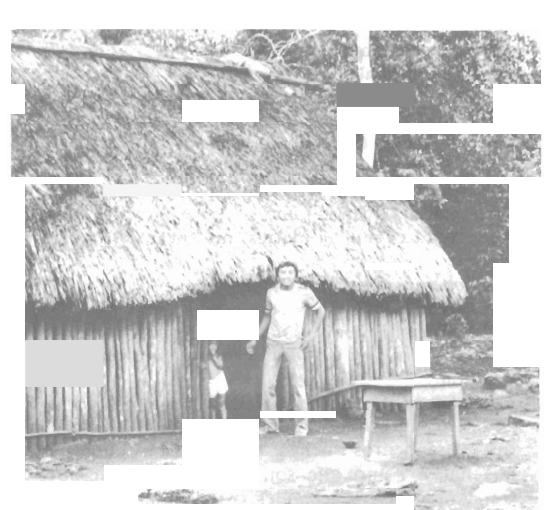
منزل دون أنطونيو
خاتمة القراءة — صورة
خوسيه إلياس: من العدو؟ اسأليه.
دونيا سارا: مجرد تحذير بأن تحذر! أمورك جيدة، فاحفظ نفسك وما لديك. هذه النجوم الثلاثة تظهر لتؤكد ما سيحدث. من المهم أن تقرأ حظك؛ لو لم تفعل ربما وقع لك ما يقوله، أما الآن فقد عرفت، فلن يحدث.
خوسيه إلياس: أن أحذر لأن... (ضحك.) انتهى الأمر.
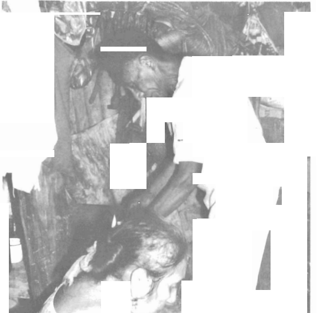
دون أنطونيو من كينتانا رو في منزله
الفصل الثامن
كرات العرافة
شرح صور كرة العرافة
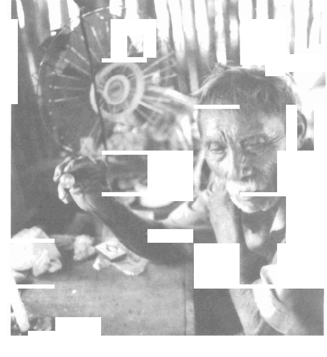
دون بانشيتو يشرح لتلميذته دونيا سارا صور كرة العرافة
كرات العرافة
سمّاها المايا القدماء «زاز تون». ولدى علماء النفس الأصليين هي «كرات العرافة». بحسب دونيا ماريا من ميريدا كان القدماء يصقلونها من البلور الصخري ويستخدمونها لـ«رؤية» ما لا تراه العيون.
اليوم ينتشر استخدامها كثيرًا بين شامانات يوكاتان وكينتانا رو. كانت تظهر لدونيا سارا من كانكون في أرجوحتها كل صباح، مصحوبة بتوجيه «عقلي» لحملها إلى معلّمها دون بانشيتو الذي يملك القوة الكافية للتعامل معها وإبقائها «مشحونة». وتقول سارا إن الكرات تنتهي إلى «الاتصال» بمالكها، وإن لم يمدّها بما يكفي من الطاقة، استمدّت الكرات الطاقة منه بنفسها، وفي ذلك خطر شديد.
تصبح الكرات المشحونة جيدًا شفافة، وتقدّم لصاحبها عالمًا من الصور العِرافية يرى فيها مستقبل مرضاه وتشخيصاتهم. أما إذا لم تُمنح طاقة كافية، فتفقد شفافيتها وقوتها.
يرى دون أنطونيو من كينتانا رو أن الكائنات الصغيرة ترسل كرات العرافة، وتختار
التنبؤ والزمن
مالكها المقبل بحسب مستواه التلقيني. أُرسلت كراته مرتين: في الأولى شعر بقلة استعداده لاستخدامها، فاختفت. وفي الثانية وصلته بغموض، ظهرت في موضع بعيد من حقله مع تنبيه لقبولها لفعل الخير. ومنذئذ يستخدمها لرؤية مستقبل مرضاه.
حين طلبت من دون بانشيتو إخباري بحظي والسماح بتسجيل كلماته، استنكر طلبي وقال إن ما يُنبئ به الطالع لا يمكن تثبيته. سمح لي تحذيره بفهم مستوى احترام هذا الناهوال المئوي للحياة.
نبّه دون بانشيتو دونيا سارا إلى أن رضّعًا سيُحضَرون إليها طلبًا للاستشارة بدءًا من اليوم التالي لزيارتها. وشهدت فعلًا تحقق النبوءة بدقة: في السابعة من صباح اليوم التالي حضرت أم مع رضيعها إلى عيادة سارا طالبة الاستشارة، وتكرر الأمر بعد ساعتين.
بدأت الفيزياء المعاصرة البحث في احتمال وجود جسيمات أولية فوق ضوئية، قادرة على السفر بسرعات تتجاوز الضوء، ومن ثم تغيير زمن مسارها؛ وتسمّى تاكيونات. لا نعرف بعد كيف نفسر قدرة شامانات المايا المدهشة على التنبؤ. وبمصطلحات ميكانيكا الكم ما بعد النسبية، ربما تعمل أدمغتهم على نمط تاكيوني فوق ضوئي مستقل عن البعد الزمني. وهذا قد يدل على أنهم تعلموا العمل في مستوى من الواقع لا يوجد فيه الزمن. ويمكن ربط هذه المستويات بما تسمّيه الفسيولوجيا النفسية المعاصرة
خاتمة كرات العرافة
«توسّع الحاضر». إن صح ذلك، فينبغي أن تكون مستويات وعيهم شبيهة بما أظهره أولئك الأشخاص في جميع العصور الذين يقولون إنهم متصلون بالكينونة.
أيًا يكن، وبغض النظر عن التفسير المراد تقديمه، فإن قدرة العرافة والتنبؤ ليست حالة معزولة أو طرفة مختبرية، بل تُظهر نمطًا من عمل الوعي عند تخومه.
الفصل التاسع
دونيا روفينا من بويبلا
إيلينا إيسلاس وماريا أوخينيا سانشيز
تقديم
وُلدت دونيا روفينا مانسانو في قرية سان ميغيل تسيناكابان، كويتسالان، بويبلا. أقامت طوال حياتها في هذه الجماعة، وتوفيت فيها في 2 مارس 1982، عن نحو خمسة وسبعين عامًا.
كرست نفسها دائمًا للعلاج الشعبي، واكتسبت مكانة كبيرة في المنطقة كلها، بل بين الأكاديميين الباحثين في هذا الموضوع أيضًا.
تزوجت في الثامنة عشرة من رافائيل إيسلاس، وأنجبت ستة أطفال: نييفيس، وهيراكليو، وأوريليانو، وإيميتيريو، وإيلينا، وغابرييل.
كتبت النص التالي السيدة إيلينا إيسلاس، ابنة دونيا روفينا، والدكتورة ماريا أوخينيا سانشيز، الباحثة المقيمة في تسيناكابان منذ 1973، والتي كانت دونيا روفينا عرّابتها في الزواج.
إدواردو ألميدا أكوستا*
حاشية المؤلف: * الدكتور إدواردو ألميدا أستاذ في كلية علم النفس بالجامعة الوطنية المستقلة في المكسيك. يدرس التنمية المجتمعية في مناطق السكان الأصليين.
التلقين
جاء رجال ونساء من التوتوناك للاحتماء في سان ميغيل بسبب مشكلة في قريتهم. استضافتهم أم أمي، دونيا خوسيفا راميريز.
حين استطاعوا العودة إلى قراهم أرادوا ترك شيء لجدتي.
«بماذا ستعيشين؟ سنعلّمك كيف تعالجين».
علّموها الصلوات والعلاج. كانت الصلوات بالإسبانية، لكن الابتهال بالناهواتل. لا بد أنهم علّموها بها لأن كثيرين من التوتوناك يتحدثونها. وهم يعالجون أفضل من أهل سان ميغيل.
بدأت جدتي تعالج وتعيش من ذلك، لأن زوجها تركها. وكانت تقطع مسافات بعيدة لتعالج المرضى.
تعلّمت أمي من أمها. منذ طفولتها كانت ملازمة لها طوال الوقت، ولا تنام كي ترى كيف تعالج. ثبت كل شيء فيها. تعلمت بالسماع فقط، دون أن تعلّمها أمها مباشرة.
وعند احتضار جدتي قالت لها: «تعرفين كل شيء، وكيف عالجت. أريد سماعك لأرى إن كنت تعرفين».
قالت أمي لها كل شيء.
«كنت أعرف أنك تعلمت؛ أشكرك لأنك تفعلين الخير للناس».
لم يعلّم التوتوناك إلا جدتي دونيا خوسيفا، وهي علّمت أبناءها. أحدهم أبو ابن خالي إينوسينسيو. خالي هذا تعلم عمل «الشرور».¹ كانت أمي تعرفها لكنها لا تفعلها، وكذلك إينوسينسيو.
وتعلم أخ آخر لأمي من جدتي أيضًا، وذهب إلى بويبلا. كان يعرف الشرور لكنه لا يريد قول شيء. ليلًا كان يركب فوق
حاشية المؤلف: 1. «الشرور» تعني أعمال السحر.
رؤية الواقع
«أولئك».² يظهرون له في هيئة أبقار أو حيوانات أخرى ويحملونه إلى الطرق أو الكهوف أو حيث يشاء.
لم يكن أبي يصدّق ما تقوله أمي عن هذه الأمور، وبتأثيره لم أكن أصدّق شيئًا من ذلك أيضًا.
رؤية الواقع
في رؤية دونيا روفينا، الأرض هي المركز الحيوي. كانت تقول: «نحن ثمر الأرض. تمنحنا الحياة والطعام، وتعيلنا ثم تأكلنا، لأننا نعود إليها. الأرض أبونا (noteskaltijkatatsin) وأمنا (noteskaltijkanantsin)».
داخل الأرض يوجد التالوكان، نوع من الفردوس يقابل التلالوكان عند الأزتك القدماء. يسكنه كثير من الكائنات الخيّرة، مثل «تالوكيس تاسكالتياني»، والشريرة، مثل «تالوكيس هاسيينديروس».
السماء عندها موضع السعادة. كانت تقول:
«هناك في الأعلى توجد السماء. إنها مكان جميل جدًا بلا نهاية، كأنه احتفال. هناك الله، الأب الأزلي. طيب يغفر لنا كأب طيب؛ «أبونا الحبيب» الذي يحكمنا. ويوجد يسوع المسيح ابنه، الذي أعطاه ملكوته.
إلى جوار الله “القديسون الكبار”: عذراء غوادالوبي، وعذراء الكرمل، وميغيل، الوحيد القادر على هزيمة الشيطان، ورافائيل ذو الأرواح السبعة».
حاشية المؤلف: 2. الشيطان ورسله.
كيف كانت تعمل دونيا روفينا
«أسفل منهم القديسون الصغار: سان مارتين الفارس، وسان خورخي، وسانتياغو، الذين يلعبون في الهواء ليلًا.
ثم العذارى الإحدى عشرة.
وتحت السماء المطهر، وفيه نفوس المطهر تتعذب بالجسد والروح.
وفي مكان آخر هناك فوق يوجد الجحيم».
في رؤيتها يتغلغل العالم فوق الطبيعي في العالم الطبيعي. يرتبط الإنسان به بالصلاة والطقوس، وكذلك بـ«التونال» أو الظل، وهو جزء من روح الإنسان يمكن أن ينفصل عن جسده، وهو أيضًا قرينه الحيواني.
كيف كانت تعمل دونيا روفينا
كانت تعالج كل أنواع الأمراض التي لا يستطيع طبيب علاجها، وهي الأكثر شيوعًا. تنجم هذه الأمراض عن أذى يصيب «تونال» الشخص أو «يولو»ه.
التونال ظل الشخص، روح الإنسان. ليس في القلب بل في الجسم كله، وهو قوة تمنح الحيوية. يستطيع مغادرة الجسد دون موت الشخص؛ ينفصل عنه أثناء النوم. ويغادر أجساد السحرة والمعالجين الذين «يعملون»، ليبحث في كل مكان عن الأرواح المفقودة.
يستطيع التيبيواني، حراس الجبال، والأتشيوانيمي، حراس المياه، وكائنات صغيرة أخرى، الاستيلاء على تونال أي شخص. وهذا الحرمان يسبب المرض. يبدو أن
القلب وكيف كانت تعالج
التونال يوجد في الدم، «ماء القلب».
أما اليولو، أو القلب، فهو المبدأ الحيوي، وتنفس الجسد، وموضع الحياة، ومنتج الدم الذي هو الحياة. إذا أُصيب اليولو مات الإنسان. وهو موضع المشاعر والرابطة بين الروح والتونال والجسد.
كانت دونيا روفينا تبحث أثناء النوم بتونالها عن روح المريض المفقودة. تتحرى خطورة المرض وهل أصاب التونال وحده أم اليولو أيضًا.
كيف كانت تعالج
كانت أمي تعالج كل شيء: الفزع، والشر، والهواء السيئ، والعين، ومرض الكواخو. كانت تعالج ذلك كله، لكنها لم تكن تستخدم السحر لإيذاء أحد، مع أنها كانت تعرف كيف يُصنع.
كان عليها الصلاة طوال اليوم؛ لا تتوقف إلا إذا خرجت أو جاء زائر.
تجلس منكمشة متغطية بشالها، وتصلي حتى منتصف الليل.
كان عليّ النهوض في الثالثة صباحًا لأعمال المنزل، وهي جالسة في فراشها تصلي وتصلي.
حين نذهب إلى أتيبولي،³ تمضي تصلي. أريد الحديث فلا تجيب. تغسل وتصلي بلا توقف. لو لم تكثر الصلاة لما شُفي المرضى. لهذا لم أرد التعلم. كانت كمن يكتب طوال الوقت.
حاشية المؤلف: 3. نهر قرب قرية سان ميغيل تذهب إليه النساء لغسل الملابس.
الصلاة والفزع
حين يتشاجر معها أبي ويقاطعها، تصبح مريضة وتفقد صلاتها من أجل المسحور. في الأحلام يعترضها السحرة الآخرون. وإذا كان خصمها قويًا جدًا تئن كثيرًا ليلًا، كأنهم يشدونها وهي تقاوم.
كانت تحكي لي أحلامها كل يوم.
في ركن من البيت دفنت ثومًا وسعفًا مباركًا وبيزو وماء مقدسًا في قارورة، لأجل الفزع. وكانت تُبقي جرّة ماء هناك دائمًا. لم تكن تصلي عند المذبح كغيرها. للفزع من الماء تصلي عند الجرّة، وللفزع من النار تقف قربها وتنظر إليها. وللشر تصلي أينما كانت: في الطريق أو فراشها.
كل أسبوع، يوم السبت، تأخذنا إلى القرى الريفية التي تعالج فيها. لم تأخذ أجرًا، لكننا نعود حاملين دجاجًا وسكر بانيلا يهدونه إليها. حيث تعلن قدومها يذبحون دجاجة، أما نساء أخريات فيأخذن مالًا كثيرًا.
يأتي الناس إليها؛ أحيانًا يقولون: «صلّي ليموت فلان، ندفع لك المبلغ كلّه من نقود «7.20» الفضية».⁴ لكنها ترفض: «أريد أن أصل إلى يدي الله».
أحيانًا كانت تأخذهم إلى ساحر في توسَامابان، لكنها لا تفعله بنفسها.
الفزع
يأتي الفزع حين يسقط المرء أو يخاف. يُذهب الشهية ويسبب الحمى. وإذا لم يُعالج يسوء. يصيب الأطفال والكبار.
لعلاجه كانت أمي تصلي في البيت. تضع شمعة نذرية وبخور الكوبال أمام الجرّة إذا كان فزعًا
حاشية المؤلف: 4. عملات فضية.
الفزع الخفيف والشديد
من الماء، أو قرب النار إن كان منها. إذا لم يشفَ المفزوع ذهبت لتناديه حيث فزع. تحلم بأنه ملقى هناك ولا يريد المجيء. كان عليها الذهاب بالثوم والسعف والماء المقدس إلى ذلك الموضع لتناديه.
الفزع والفزع الشديد
الفزع فقدان التونال أو الظل.
قد يكون الفقدان خفيفًا سهل العلاج إذا نتج عن سقوط على الأرض أو في الماء أو عن حرق. يشحب الشخص ويضعف، ويستعيد روحه بسهولة نسبية بفضل المعالج.
أما الفزع الشديد، الشبيه بالشر، فيحدث حين يأخذ «أصحاب» الأرض أو الماء روح شخص بسبب سوء سلوكه مع الطبيعة؛ ويصعب العلاج حينها.
تطلب أسرة المريض العلاج من دونيا روفينا. فتستقر في ركن بيتها حيث دفنت السعف المبارك والثوم والتبغ والمال، وتشعل المبخرة وتبدأ الصلاة.
تتوجه أولًا إلى الله في السماوات وداخل الأرض، وإلى يسوع المسيح وسان ميغيل «ليساعدونا في جميع الشرور». وبعد توقف، تتوجه إلى سان خوان تالتيخبالي، وسان يوداس تالماويل، والأب–الأم الثالوث، والأرض الكلية القداسة؛ وهي أسماء الأرض المختلفة. وتستدعي كذلك التالوكانكا والتالوكيس حراس الحظائر الأربع عشرة، حيث توجد حيوانات التونال، لتسألهم أين روح الشخص. تضرب الأرض بعصا مرات، ثم تتوجه إلى الشمس، مسمية إياها سان خوان النور، ونجم الصباح، لتساعد بنورها وقوتها على البحث عن الروح.
القربان عند الكهف
تصاحب هذه التضرعات خمس وعشرون صلاة «أبانا»، وخمس وعشرون «السلام عليك يا مريم»، وخمس وعشرون من قانون الإيمان، وخمس وعشرون «أعترف»، وإن كان العدد يتغير.
بعد الصلاة، حين تنام، تبحث دونيا روفينا بروحها في الحلم عن تونال الشخص في كل مكان، لمعرفة نوع المرض وأصله.
تتوجه إلى التالوكيس، وهم كرجال صغار بقمصان قصيرة، وإلى الله وإلى الشيطان. وأخيرًا تعرف أهو فزع خفيف أم شديد أم شر.
في الخفيف تنادي الروح من بيتها أو من مكان سقوط الشخص. أما الشديد فيتطلب الإلحاح، وفرك مفاصل المريض مرارًا بـ«نبيذ الفزع».⁵
لم تكن تجري هذه العلاجات يوم الثلاثاء أو الجمعة، فهما اليومان السيئان، يوما السحرة.
إذا لم يشفَ مريض بأي شيء ولم تعرف أمي السبب، صلّت وصلّت. يظهر لها أصحاب الأمر في الجبل ويقولون إن «التاخبالول»، أي التحية، مطلوب؛ أن تقدم اللازم: ديكًا روميًا مكتمل النمو، وكيلوغرامًا من فلفل أنشو، ونصف كيلوغرام من الفلفل المجفف، وطماطم وقرفة وقرنفل، إلى أي كهف تريد. تصلي هناك وتحمل الكوبال.
كان ما يحدث شرًّا من التيبيواني.
تذهب أمي إلى الكهف مصليةً مطرقة النظر. تترك كل شيء عند المدخل وتنتظر. يأتي رجل كالأمريكي الأشقر، غائم، كله أبيض وضبابي. يرفع الديك ويلمسه ويشمّه كله ثم يذهب. يأتي آخر ويأخذ الأشياء.
حاشية المؤلف: 5. نبيذ مع أعشاب.
القربان المرفوض والسحر
تعود أمي مصلية دون أن تدير ظهرها للكهف. فعلت ذلك مرتين أو ثلاثًا وشفي المريض.
لكن آخر مرة أعطاها أقرباء المريض ديكًا روميًا هزيلًا وقليلًا من المؤن. ظنوا أنها ستأكله، كما يفعل معالجون آخرون.
ذهبت ووضعته في كهف قرب تاتيمبا. انتظرت ولم يأت الرجل لتسلّمه، فتركته وعادت.
حلمت ليلًا بأنهم، التيبيواني، لا يقبلون أشياء كهذه، بل الجيدة فقط؛ وإن كان تسليم الجيد يؤلمهم فلا يعطوا شيئًا.
عادت إلى الكهف فوجدت ما تركته. وحين رجعت إلى البيت قال أبي: «تعالي وانظري ما حدث. وجدنا الخنازير ميتة صباحًا».
مات المريض بعد ثلاثة أيام. استعادت أمي التاخبالول.
كان على التيبيواني أن يأكلوا لحمًا. ولهذا مات المريض، ولهذا أخذوا الخنازير.
حلمت أنهم يقولون: «إذا كان الناس مرتابين ولا يقدمونه من القلب ولا يؤمنون، فلا تعودي بتلك الأشياء». كان عليهم الإيمان ومن القلب. ومنذئذ لم تعد تريد فعله.
تعلمت أمي التاخبالول من جدتي، التي كانت تذهب إلى كهف اسمه كوختاخو. تبعتها أمي سرًا ذات يوم وهي طفلة. لا يجوز أخذ الأطفال لأن التيبيواني قد يأكلونهم. تبعتها ورأت الرجل الأشقر جدًا؛ كانت أمها منحنية تصلي. وعند العودة رأتها فضربتها.
السحر أو الشر
أول حالة عالجتها أمي كانت إصابة بأذى السحر. جاءت فتاة لأن أمها مريضة.
البحث عن روح المريضة
كانت أمي تقول: «بدأت العمل ولم أعرف. ذات يوم وجدت رجلًا طويلًا أشقر بدينًا قال:
— ماذا تبحثين كل هذا البحث؟
— أبحث عن امرأة يؤلمها رأسها.
— ما زالت تنقصك صلاة كثيرة.
— لقد تعبت.
— كيف هي المرأة؟ لكي تفعلي هذا يجب أن تتعلمي وتصلي أكثر. هل ستحتملين؟
أخذني بعيدًا. عبرت مراعي كثيرة حتى وصلت قصرًا. فيه المرضى غير الشديدي المرض، يتركونهم يعانون.
— ادخلي وانظري إن كنت تستطيعين.
كان هناك أناس كثيرون كما في القداس.
— ابحثي!
لكنني وطئت فانزلقت قدمي كأنها على صابون.
— من هنا تطلعي وابحثي وستأتين بها.
ولم أستطع الذهاب لإحضارها.
— لن تأخذيها. اذهبي وعودي بعد أسبوع.
صلّيت طوال الأسبوع وعدت. مررت وسط أناس كثيرين مستلقين على وجوههم. ذهبت وأخذتها بيدها فتحسنت».
نوعان من الشر: كي يتعذب الشخص أو كي يموت. في الأخير لا ينجو إلا إذا اعترضوا السحرة في الوقت المناسب.
لعلاج الشر، تحمل دونيا روفينا شموعًا إلى الكنيسة وإلى المريض، وتقاتل ليلًا الأرواح السيئة التي تمنع إنقاذه. تكون روحه عادة في قبضة الشيطان، واليولو مصابًا؛ ومن هنا صعوبة العلاج.
يسبب السحرة الشر بطلب شخص يريد إيذاء آخر انتقامًا
كيفية التغلب على الشر
أو لسبب آخر. يحاول الساحر تسليم روح الشخص إلى الشيطان. تستطيع دونيا روفينا انتزاعها قبل التسليم، أما بعده فلا يمكن فعل شيء إلا أن تقدم حياتها هي.
مرض شاب قوي ولزم الفراش. قالت: «ابنك سيموت».
— كيف تعرفين؟
— سأقول الحقيقة: رأيت توتوناك في الحلم، ومعهم دائرة وسط نار، وفيها ابنك. لو قفزت إلى النار أنقذته، لكنني أرحل. قلت لا أستطيع. فأروني جبلًا أملس؛ إن صعدت ووصلت نجا، لكنني لم أستطع، ورأيتهم يلقون ابنك من الجبل فسقط إلى القاع.
مات بعد أربعة أيام. كان قد سُلِّم.
كيف كانت تغلب الشر
ترسم إشارة الصليب على المريض وتقول: «الله الآب والله الابن والله الروح القدس. سألمس هذا المريض؛ لا يكن ذلك عبثًا، سأعالجه وأطلب منك أن يشفى».
ثم تسأل: «أين يؤلمك بالضبط؟».
يخبرونها: الرأس أو الجسد أو الساق أو اليد. وأحيانًا تقول: «راجعوا الطبيب، فليست به إصابة من السحر».
تستخدم الزيت والخَمَان والبيض للعلاج. تدلّك موضع الألم بالزيت وتصلي في الوقت نفسه. تدلّك بالزيت والخمان، وتطلب سلق البيضة جيدًا؛ تقطعها نصفين وتضع عليها زيتًا وتجعلها مقلوبة على قطعة قماش. تدلّك المريض فيخرج زجاج خشن، قطع صغيرة كالرمل. تجمعها في ورقة «موستي»، إذ لا يجوز استخدام إناء. وتلقي الخمان والبيض والزجاج في
الهواء السيئ
النار لتحرقها، فتفرقع. تفعل ذلك في زيارتين أو ثلاث.
لا يمكن إخراج الشر من الرأس بالتدليك فقط، بل بالمصّ مع شراب «ريفينو» حول الرأس كله. يخرج الماء عكرًا كالعجين، ويتسلخ فم أمي.
قرب تينانغو، ذهب مريض إلى معالجين كثيرين ولم يشفوه. عملت أمي، وفي المرة الثانية حلمت. كان ساحرًا قويًا جدًا، تقاتله طوال الليل. دلّكت المريض وكان جسمه كله كأن فيه زجاجًا مطحونًا.
قالت: «أشعلوا نارًا»، وصلّت وهي ترمي ما تخرجه، «تعالوا جميعًا وانظروا».
تشكّل وجه الساحر في النار. وأراد بعدها اعتراضها.
في توسَامابان كان ساحر يدفن خنصر ميت فتفنى الأسرة. دافعت أمي عن نفسها بقلادة سوداء.
وصلّت لسان ميغيل: «بسيفك المقدس وصليبك المقدس، اعترض كل شر وادفع إلى الطريق الطيب. لديك ما تفعل به ذلك».
الهواء السيئ
قد يصيب «الهواء السيّئ» أيّ أحد. ويسبّب الحمى والقيء وفقدان الوعي، ويُلتقط في أي مكان. أرواح سيئة تجول، لا تجد سلامًا ولا تبلغ المجد؛ تعاني لأنها مدينة بالكثير، وتأتي لتدفع في العالم.
وكذلك من يموتون مقتولين أو غرقى. الغريق كان ينبغي أن يعيش أكثر، فيظل يعاني. إن غرق آخر نجا الأول. لهذا لا يحسن الذهاب إلى موضع مات فيه غريق.
في مكان جريمة قتل يرى المرء شيئًا يفزعه، ظلًا فجأة. ذلك لأن
العين
الميت يريد أن يموت المرء. حين يوجد ميت لا يخرج الأطفال ليلًا، لأنه يريد روح طفل لينجو. لا ينبغي خروجهم ما دام الجسد هناك. يضعون عند رأسهم كوز ذرة أحمر.
وتعاني أيضًا أرواح من دفنوا المال. يعاقبهم الله على دفنه، ولو كان مالًا مكتسبًا بحق لا حرامًا.
الدخان يطرد الهواء السيئ؛ من الجيد أن تمضي ليلًا مدخنًا. ومن الجيد أيضًا ترك القبعة خارج المنزل.
علاج الهواء السيئ أبسط، لا يحتاج صلاة؛ فقط خمان وبيضة نيئة وتطهير. ويُعالج أيضًا بسعف مبارك وكوبال ووبر قط أسود وأعشاب الهواء السيئ: الخمان وورق الأفوكادو و«إيخيكاپا». تُحرق كلها على الجمر ليصل الدخان إلى المريض.
العين
تصيب العين الأطفال الصغار والحيوانات؛ حين يعجب بها شخص قوي النظر، كأنه يريد أخذها. يصاب الطفل بقيء وإسهال وتصغر إحدى عينيه.
كانت أمي تعالجهم بخمان وبيضة نيئة وفلفل مجفف وملح. تطهّرهم وتلقي كل شيء عند ملتقى أربعة طرق. لا حاجة للصلاة، فقط التطهير.
وللحيوانات يُغلى الإيباسوتي والثوم فيزول عنها.
كانت أمي تصلي للحيوانات أيضًا.
للوقاية من العين يوضع على الأطفال والحيوانات شيء أحمر؛ فالأحمر يمنح القوة. وإذا حمل قويّ النظرة الطفل أو لمسه لم تصبه العين.
مرض الكواخو وحل المشكلات
مرض الكواخو
مرض الكواخو هو انخساف يافوخ الأطفال بسبب ضربة.
للعلاج تضع أمي حوض ماء، وتأخذ ثلاث حبات ذرة وتمسكها وتقول شيئًا ثم تطلقها، فتنتصب الوسطى.
تربط الطفل وتجعل قدميه متوازيتين وتقلبه رأسًا إلى أسفل، وتربّت عليه من القدمين إلى العنق. تفعل ذلك مرتين فتشفيه.
كيف كانت تحل مشكلات أخرى
جاء رجل ذات مرة فقد حصانه. قالت: «دعني أعمل خمسة عشر يومًا».
بعدها قالت: «حصانك في واد خفي. تعتني به امرأة في بيت صغير، ولديها كلب أبيض صغير».
وهكذا كان، وعرف الرجل اللص.
وجاء أناس من تينانغو يريدون معرفة أمر امرأة وابنتها اختفتا.
عملت أمي، وظهر لها الشيطان بجسد رجل يقول: «لن تعرفيني. توقفي عن العمل وإلا ساءت عاقبتك. سنتقاتل».
كانت تحكي: «طاردني في البراري والأنهار، وسقطت في هاوية». وحين استيقظت لم تستطع الحركة أو الكلام. «سأواصل العمل».
صلّت وصلّت وتقاتلت، ثم رأت وجه قاتل المرأة وابنتها، وسمعته يقول:
توضيح تحريري: هذا وصف لممارسة منقولة في المصدر، وليس إرشادًا للعناية بالأطفال؛ قلب الطفل أو ضربه إجراء مؤذٍ ولا يُطبَّق.
اجتماعات المعالجين والتلاميذ
«قتلتهما ودفنتهما وسط المنزل».
حفروا في البيت ووجدوهما، وسُجن الرجل.
فعلت أمي أشياء كثيرة أخرى. استطاعت جعل شخص يغادر القرية ولا يعود، والتوفيق بين الأزواج، وجعل من يريد الزواج يتزوج؛ وكانت عذراء الحبل تساعدها في ذلك.
اجتماعات المعالجين
لم تكن تجتمع بمعالجات أخريات، إلا أن إحداهن أحيانًا تطلب نصحها أو مساعدتها لعلاج مريض. أحيانًا تعالج أمي وتأخذ الأخرى الأجر.
أما جدتي دونيا خوسيفا فكانت تجتمع بأخريات لمعرفة كيف يعالجن. يتشاورن عند وجود مريض، دون حسد. يجتمعن في بيتها، وإذا عجزن عن مريض أحلنه إلى أقوى منهن. ربما تعلمت الأخريات من جداتهن أيضًا. لكنهن لا يجتمعن إلا حين يوجد مريض.
التلاميذ
كم من الناس ساعدت، وكم من المشكلات حلّت! لم تُعِدّ أحدًا إعدادًا خاصًا. كانت فتاة من سان أندريس تأتي كثيرًا وتقول إنها تعرف. تبيت عندنا، وحلّت أمي لها مشكلات كثيرة. تعيش عند مخرج كويتسالان، وتريد الأمر الآن للتجارة.
خاتمة شهادة الابنة
كانت تخبر جميع مَن تربطها بهم صلة العرّابة كيف تُتلى الصلوات. سألتها لماذا تخبر الجميع.
قالت: «سأموت، فليتعلم الآخرون».
الفصل العاشر: دونيا خوسيفينا ميزا من مدينة نيتساهوالكويُوتل
دونيا خوسيفينا ميزا من مدينة نيتساهوالكويُوتل
الفصل العاشر — مقدمة
مقدمة*
دونيا خوسيفينا شامانة أصلها من ميتشواكان، وتبلغ السبعين من العمر، وتجري أعمال التطهير للأشخاص الذين يلجؤون إليها طلبًا للمساعدة. والأدوات التي تستخدمها في علاجاتها هي الشموع والفلفل الحار والبيض والماء الممزوج بالعطر وحزم من أعشاب متنوعة. وغاية التطهير، بالنسبة إلى دونيا خوسيفينا، أن «تُبعد» عن الشخص ما هو غريب عنه. وهي تؤكد أن المشكلات النفسية والانفعالية تيارات من الطاقة تعوق الأداء السليم للعقل والجسد. ويسبب هذا الانسداد اختلالًا في توازن الطاقة، ينتج منه المرض الجسدي والعقلي معًا. ولإجراء التطهير، تركز دونيا خوسيفينا بعمق، وعيناها مغمضتان، في المنطقة الواقعة بين حاجبيها، وترش يديها بالعطر وتضعهما على جبهة المريض وقَفاه. وبهذا الإجراء تشعر بالاهتزازات الخاصة بالمريض وبطاقته، فتكتشف ما
حاشية المؤلف: * أعدّت هذه المقدمة إكستاتسيواتل كاراسكو ريفيرا، وهي اختصاصية في علم النفس تعاونت بصفتها باحثة في دراسة «شامانات المكسيك». أما بقية الفصل فمن مسؤولية المؤلف.
الفصل العاشر — مقدمة
يؤلمه. وتأتيها أحيانًا رؤى تلقائية لأحداث مستقبلية ستقع للشخص الذي يستشيرها. وقد استطاعت أن تعرف متى سيموت شخص ما وبأي طريقة. وبعد اكتشاف ما يعانيه المريض، تفرك رأسه وجبهته وقَفاه بالماء الممزوج بالعطر، وبسلسلة من حركات يديها فوق جسده تتحكم في تيارات الطاقة السلبية وحقولها، التي «تُبعدها»، فيجري التطهير على هذا النحو.
تؤكد دونيا خوسيفينا أن «موهبة» الشفاء فطرية لدى جميع الناس، لكن بعضهم فقط يستطيع إيقاظها. وليس في عائلتها أسلاف استطاعوا إيقاظ هذه الموهبة. وهي تأمل أن يتمكن أحد أبناء أحفادها من تنميتها.
بدأت قدرتها العقلية تظهر منذ طفولتها. وتروي دونيا خوسيفينا أنها كانت تسمع أصواتًا وترى كائنات روحية بقربها. وكان ذلك يخيفها كثيرًا، وفي شبابها ذهبت إلى مركز للعلاج، حيث وجدت معلمها الذي علّمها سنواتٍ تقنيات معينة لتنمية قدراتها العلاجية. وقد اهتمت اهتمامًا عميقًا بالحياة الروحية، وكانت تمارس باستمرار ما تتعلمه من معلمها. ومرّت ببعض حالات الغشية الوسيطية، التي كانت كائنات مختلفة تدخل خلالها جسدها، وتقدم النصائح وتشفي المرضى.
وتصور دونيا خوسيفينا للعالم الروحي والعالم المادي هو أن العالم المادي انعكاس للعالم الروحي، وأنهما مرتبطان ارتباطًا وثيقًا.
وهي ترى أن الكائنات الروحية مثلنا، لكنها بلا أجساد. وهذه الكائنات أيضًا في تطور، وثمة مستويات مختلفة من النمو بينها. وبعضها أرواح «عابثة» ذات تطور منخفض. أما الموجودة في مستوى عال فهي التي تشفي جيدًا حقًا، لكنها أيضًا في تطور، ولهذا تأتي لتشفي. والجسد المادي
الفصل العاشر — مقدمة
للبشر قد أُعير لهم لكي تقيم الروح فيه؛ إنه وسيلة لتجلّي الروح. ولذلك، تؤكد دونيا خوسيفينا، يُعير الوسطاء أجسادهم لأرواح الفضاء، لأن كليهما في تطور، وهذا يمنحهما فوائد وتقدمًا. فجميع كائنات الفضاء والبشر وكل ما يوجد هو تجلٍّ لله.
سألتها عمّا تشعر به عندما تدخل في غشية وسيطية، فأجابتني بأن روحها الشخصية تخرج من جسدها وتبقى إلى جانبه، بينما تستعير روح الفضاء جسدها.
وأضافت: «الروح الشخصية تكون قريبة، ترى كل ما تفعله روح الفضاء، لكن عندما تعود روحي إلى جسدي لا أعود أتذكر ما حدث».
— كيف تتطور الوساطة الروحية، يا دونيا خوسيفينا؟
— انظري، يحدث ذلك بتركيز العقل؛ يحتاج المرء إلى الانكفاء إلى الداخل وإلى قدر كبير من التحكم العقلي. كل شيء داخل المرء؛ تتطور موهبة الشفاء بالتركيز، لكنها لا تُعلَّم، بل تتوقف على الشعور بها حقًا، والأشخاص الأكثر تطورًا هم القادرون على تنمية القدرة.
فسألت: «إذًا الأشخاص شديدو المادية، الذين لا يؤمنون بعالم روحي، قليلو التطور؟»
— هذا صحيح، كل شيء تطور، والأمر نفسه يحدث في العالم الروحي. تلك الكائنات مثلنا، لكن كل شيء هناك مكشوف. أمّا نحن فنستطيع أن نختبئ ونخفي أفعالنا، وهم لا يستطيعون. وهناك أيضًا كائنات شريرة وأخرى طيبة، والجميع في الفضاء.
— دونيا خوسيفينا، هل مسألة التطور هذه تشبه امتلاك مستوى معين من الوعي؟
— نعم، إنه الشيء نفسه، أجابت.
— وعلى ماذا يتوقف امتلاك بعض الأشخاص وعيًا أكثر من غيرهم؟
— يتوقف على المرء نفسه. لقد خلقنا الله جميعًا
الفصل العاشر — مقدمة
متساوين، لكن إذا فعل المرء أفعالًا سيئة، أو لم يؤدِّ المهمة التي تخصه، فإن النمو والتطور يتوقفان.
— دونيا خوسيفينا، هل تستطيع أرواح الفضاء أن تتجسد، أن تولد في العالم المادي بجسد بشري؟
— بالطبع، فنحن هم. عندما نموت نذهب إلى الفضاء.
— وماذا يحدث لنا هناك، في الفضاء؟
— نكون هناك مثلهم.
دونيا خوسيفينا ميزا إنسانة لطيفة جدًا، ودودة ومرحة؛ بنيتها صغيرة ونحيلة وهشة، لكنها قوية جدًا في كينونتها وحازمة جدًا. وهي الآن مصابة بالساد، ولا تنتظر إلا أن تتعافى لتستأنف عملها في التطهير وتساعد الناس بما تستطيع.
في رأيي، تمتلك دونيا خوسيفينا معرفة عميقة بمركز داخلي، هو الروح الشخصية، يتفاعل مع مركز خارجي، هو روح الفضاء؛ وحين يتناغمان ويتجاذبان يبلغان مستوى معينًا من التطور. وربما كان هذا التناغم هو ما يسميه الشامان دون خوان ماتوس محاذاة انبعاثات الوعي الداخلية والخارجية.
ومن ناحية أخرى، فإن عدم تذكّر دونيا خوسيفينا ما فعلته بعد خروجها من الغشية الوسيطية، مع أن روحها الشخصية «ترى» كل ما يحدث أثناء الغشية، قد يعني أن المرء يدخل في الوساطة الروحية حالة من الوعي المتزايد، تتجلّى فيها الكينونة ذاتها — أهي الكينونة الكونية؟ — ولذلك، عند استعادة الوعي اليومي، لا يتذكر ما فعله.
وعندما تقول دونيا خوسيفينا إن العالم المادي والعالم الروحي مرتبطان ارتباطًا وثيقًا، وإن كائنات الفضاء مثلنا، وإنها «نحن»، أشعر بأن هذين العالمين المختلفين ظاهريًا هما في
الفصل العاشر — دونيا خوسيفينا ميزا
الحقيقة عالم واحد، وواقع واحد يشترك في الجوهر نفسه أو يمتلكه. لكننا نحن البشر نتحرك ونعيش في عالم مادي محسوس يحدّنا إلى درجة معينة، ويمنعنا من إدراك أن في هذا العالم والواقع نفسيهما الوجه المقابل للمرئي: عالمًا غير مرئي من الطاقة، مرتبطًا ارتباطًا وثيقًا بالمادة. وهو، مع كونه غير مرئي للوعي اليومي، واضح الرؤية جدًا لمستوى آخر من الوعي.
دونيا خوسيفينا ميزا من مدينة نيتساهوالكويُوتل
في تصديره لكتاب «كون كيتسالكواتل»، للوريت سيجورنيه (1962)، يقول ميرتشا إلياده إن «مفهوم الحياة هو مركز كل ثقافة». فالأفكار المتعلقة بأصل الوجود البشري ومعناه وديمومته، قبل كل شيء، هي التي تكشف لنا العبقرية الخاصة بثقافة ما. وهذه الأفكار ثمرة وعي الإنسان بوجوده في الكون؛ ولهذا لا ينال منها فعل الزمن التآكلي إلا سطحيًا. وقد أحسن ميرتشا إلياده القول: «المشكلة هي أن نكون قادرين على كشف ذلك المركز الذي انطلاقًا منه يتحدد ما هو أساسي في ثقافة ما».
أردت تقديم هذه التأملات لأن الشامانة التي خُصص لها هذا الفصل تُظهر سلسلة من التصورات التي تتحدث، كما يقول إلياده، عن أصل الوجود البشري ومعناه وديمومته.
وُلدت دونيا خوسيفينا ميزا في الرابع من يناير عام 1916، في بلدة مارافاتيو بولاية ميتشواكان. وتيتمت في الثامنة، ومنذ تلك اللحظة عانت، بحسب كلماتها، كل ما
الفصل العاشر — الحياة اليومية
يمكن أن يعانيه طفل وحيد في العالم. عملت خادمة طوال طفولتها، ولم تذهب إلى المدرسة، وعاشت متنقلة من بيت إلى آخر، وحيدة دائمًا ومستغَلّة من أرباب عمل مختلفين.
تؤكد دونيا خوسيفينا أن كل ما تعرفه حصلت عليه من خلال عملية تلقّي رسائل آتية من بُعد آخر للكون.
ويُقدَّم النص الآتي تحديدًا لتحليل تصور دونيا خوسيفينا للواقع وبعض خصائص عملها.
الحياة اليومية لدونيا خوسيفينا
تعيش دونيا خوسيفينا في إحدى المناطق المهمشة المحيطة بمدينة مكسيكو، في مدينة نيتساهوالكويُوتل. ويعيش في هذه المنطقة نحو مليوني شخص في ظروف شديدة التواضع؛ وفي بعض الحالات بلا مرافق صحية أو شوارع مرصوفة، وفي اكتظاظ تام.
تعيش دونيا خوسيفينا مع زوجها واثنين من أحفادها ووالدهما. وبيتها، وإن كان مبنيًا بالآجر، متواضع وأثاثه بسيط. وفيه تؤدي أعمال رعاية المجتمع المحيط بها.
في كل يوم من أيام السنة، تنتظر دونيا خوسيفينا وصول مريض يمكنها مساعدته، لأن هذا، بحسب قولها، واجبها الأساسي الذي لا يمكنها التنصل منه.
منذ عدة سنوات تعاني مشكلات في عينيها، وقد خضعت مؤخرًا لعملية لإزالة الساد تركتها شبه عمياء. وتنصرف دونيا خوسيفينا، بقدر ما يسمح لها بصرها الضعيف، إلى
الفصل العاشر — تصور الواقع
أعمال المنزل وإعداد الوجبات ورعاية زوجها وأحفادها. وحين يأتيها مريض تترك أشغالها المنزلية وتعتني به، ثم تعود إليها.
تصور دونيا خوسيفينا للواقع
كما ذكرت سابقًا، لم تتح لدونيا خوسيفينا فرصة الذهاب إلى المدرسة، ولذلك فإن تعليمها المدرسي شبه معدوم. لكنها تؤكد أنها تلقت تعليمًا روحيًا يصل إلى عقلها مباشرة، ويرشدها في عمليات الشفاء وفي فهمها لها.
تؤمن دونيا خوسيفينا إيمانًا راسخًا بأن هذا الوجود عابر فحسب، وأنه بعد موت الجسد يظل حيًا، محتفظًا بالذاكرة والوعي المتراكمين طوال الحياة الجسدية. بل تؤكد أن الوعي عند موت الجسد يبقى حيًا، ولا يدرك أنه غادر الجسد، وأن الشخص الذي يموت يعيش، طوال ثلاثة أشهر، حياته اليومية كما لو أنه لا يزال حيًا، خالقًا واقعًا هو استمرار وتمثيل مطابق لحالة البيئة التي كانت تحيط به خلال حياته الأرضية. ولذلك ترى دونيا خوسيفينا، بوصفه جزءًا أساسيًا من تصورها للواقع، أن هناك استمرارًا بعد الموت الجسدي، وتقبل بأن في الفضاء ذواتٍ واعيةً بلا أجساد، تتعايش وتحافظ على اتصال نسبي بعالم الأحياء. وترى هذه الشامانة أنها خضعت لعملية تطور تتيح لها إقامة تواصل مع تلك الكائنات وتلقّي رسائلها.
توضيح تحريري: ورد في أول هذه الفقرة ضمير إسباني يعود نحويًا إلى «الجسد»، مع أن الجملة التالية تنص صراحة على استمرار «الوعي». أُبقي تعبير المؤلف دون تصحيح صامت.
الفصل العاشر — مفهوم الحامي
مفهوم «الحامي»
تؤكد دونيا خوسيفينا أن لديها حاميين هما معلماها الروحيان. وهما يتواصلان معها باستمرار، ويحاولان الدخول في جسدها لاستخدامه في أعمال شامانية وعلاجية. ومن جهة أخرى، فإن الواقع، بالنسبة إليها، ممتلئ بكائنات ماتت لتوها، وتحافظ على وعيها دون أن تدرك موتها طوال تلك الأشهر الثلاثة التي سبق أن أشرنا إليها. وتحاول هذه الكائنات، غير الواعية بحالتها، الدخول في الأحياء الذين تتفاعل معهم، واستخدامهم وتعديل أوضاعهم كما تشاء.
ومن الوظائف الرئيسية لعملها، ومن الشروط الأساسية لممارستها، الانفتاح. فبحسب قولها، كي يوجد تواصل مع العالم الروحي، وكي يتمكن الشامان من أداء عمله، لا بد أن يكون منفتحًا. لكن بما أن الكون ممتلئ بكائنات منزوعة الأجساد، فلا بد أن يتحقق هذا الانفتاح مع حماية تحول دون أن تؤذيه الأرواح في الأشهر الثلاثة التي تظلّ فيها، بحسب قولها، غير مدركة أنها ماتت.
ومن جهة أخرى، هناك صراع أو تنافس بين الحماة والكائنات الروحية في الفترة الانتقالية، ويتجلى هذا الصراع بأشكال مختلفة، ولا سيما في محاولة احتلال الجسد والعقل من جانب الفئتين اللتين وُصفتا آنفًا. وعلى قوة الشامان وإعداده تتوقف القدرة على منع دخول بعضهم وتيسير التفاعل مع الآخرين.
الفصل العاشر — إجراءات الشفاء والتعلّم
إجراءات الشفاء لدى دونيا خوسيفينا
تتولى دونيا خوسيفينا، في الأساس، إجراء عمليات تطهير لمرضاها. وتستخدم لذلك تقنيات مألوفة في الشامانية المكسيكية، منها الالتقاط باستخدام البيض، والتدليك باستخدام أعشاب وسوائل خاصة، ووضع يديها على الأجزاء المصابة. وفي هذه الأخيرة تبدو دونيا خوسيفينا خبيرة، وقدرتها الطاقية مرتفعة بصورة استثنائية مقارنة بقدرات شامانات آخرين استطعت دراستهم.
والواقع أن تخصص دونيا خوسيفينا العلاجي هو إعادة تنظيم طاقة أجساد مرضاها، باستخدام طاقتها الخاصة والتحكم فيها بحركات مميزة ليديها على أجزاء مختلفة من الجسد، بحركات إبعاد وتقريب، وغير ذلك.
تصنّف دونيا خوسيفينا الأذى الذي يصيب مرضاها في فئات مختلفة. فللحالات الأخف تستخدم تطهيرًا بالبيض والأعشاب، وللأشد تصف سبع عمليات تطهير أو تسعًا، تجريها بنفسها أيام الأربعاء والجمعة من كل أسبوع. وخلال إجراءات التطهير هذه، تُغلق إمكانية تدخّل أرواح قليلة التطور في مرضاها، وتُفتح، بالمقابل، إمكانية حدوث التفاعل مع مرشدين روحيين أكثر تطورًا.
تعلّم دونيا خوسيفينا
انتمت دونيا خوسيفينا إلى اتحاد لمعاهد مكرسة لتنمية الوساطة الروحية، تعلمت فيه بعض تقنياتها. وهي تؤكد أنها
الفصل العاشر — مفهوم الموت
في هذه اللحظة في حالة من التطور تتطلب الانفتاح والقبول التامين، وإتاحة أن يستخدم حامياها جسدها لمنفعتهما الخاصة. وتقول إن هذه الضرورة فُرضت عليها من العالم الروحي، وإنها تبحث، من أجل تحقيقها، عن شخص لديه من القوة والقدرة الشخصية ما يكفي للاعتناء بجسدها أثناء احتلال كيان آخر له. ومن الواضح أن هذا التصور كله ينطوي على وجود تبادلات طاقية شديدة القوة، تتطلب تعلّمًا خاصًا حتى يمكن احتمالها. وهي ترى أنه، أثناء التفاعل مع حاميَيْها، ولا سيما في عملية الانفتاح التام والتبادل الجسدي، يكون الشعور والخبرة الناتجان من الشدة بحيث لا يطيقهما إلا شخص مدرب يمتلك القوة الكافية. ويبدو أن دونيا خوسيفينا ترى عملية التبادل الجسدي هذه ضرورية لتطورها الخاص وللعمليات العلاجية التي تتدخل فيها. والواقع أن ما يبدو أنها تعنيه هو أن إمكانية نموها ستتوقف من دون هذه الخطوة في تطورها.
مفهوم الموت
بالنسبة إلى دونيا خوسيفينا، الموت غير موجود. وقد اعترفت، في الواقع، بأنها طلبت من الكائنات الروحية أن تساعدها على الانتقال إلى مستوى آخر من الواقع، قاصدة بذلك أن تعينها على «الموت» كي تستطيع البقاء في الكون الروحي. فهذا الكون هو المكان الحقيقي الذي ينبغي للإنسان أن يقيم فيه. وبعبارة أخرى، ترى أن الحياة على الأرض
توضيح تحريري: الضمير في عبارة الأصل su propio beneficio يحتمل عوده إلى الحامِيَين أو إلى دونيا خوسيفينا؛ أُبقيت القراءة الأولى في المتن، مع أن سياق الفقرة يربط العملية بتطورها هي أيضًا.
الفصل العاشر — الخاتمة
نوع من العقاب، وأن مكان البقاء هو العالم الروحي الذي تتوق إلى الوجود فيه. ومن هذا المنظور، لا وجود لدى دونيا خوسيفينا لمفهوم الاختفاء التام للوعي؛ وكما قيل سابقًا، فإن الجسد ليس إلا مركبة تستخدمها الروح للتفاعل مع العالم المادي.
ومن جهة أخرى، تقبل مفهوم التناسخ وعملية التناسخ، التي تشغل فيها الروح أجسادًا تتبدل تبعًا لعمليات التطور التي تُخضع لها. وعلى هذا النحو يُفهم قولها أحيانًا إن مهمة شديدة الصعوبة وقعت على عاتقها في هذا التجسد، وإنها تفترض أنها، بإنجازها، لن تحتاج بعد موتها الجسدي إلى العودة لشغل جسد.
وتشبه هذه التصورات جميعًا إلى حد كبير تصورات الفلسفة الهندية، التي يُعدّ فيها مفهوم التناسخ أمرًا مألوفًا.
وهذا التشابه لافت، لأنها، بحسب ما تؤكد، لم تتلقَّ قط معلومات أكاديمية عن الفلسفة الهندية، فمعرفتها، إذن، مستمدّة كلّها من تجربتها الشخصية ونابعة من داخلها. ويبدو أنها مقتنعة اقتناعًا تامًا بأن هذه الأفكار كلها حقيقية، وتمثل عملية موضوعية نمر بها نحن البشر جميعًا.
خاتمة
دونيا خوسيفينا ميزا شامانة لديها القدرة على العيش في واقعين مختلفين. فمن جهة، واقع الحياة اليومية، حيث هي ربة منزل وجدة وزوجة، تعد الطعام وتعتني
الفصل العاشر — نهاية النص
ببيتها، إلى آخره. والواقع الآخر هو حياتها بوصفها شامانة، تمارس فيها عملًا علاجيًا، وتتصل بمستويات من الواقع غير مرئية ومجهولة لعامة الناس، وتحافظ على سلسلة من التصورات حول الحياة والموت تتجاوز تمامًا مفاهيم الحياة اليومية.
ومن هذه الناحية، تشبه دونيا خوسيفينا كثيرًا بقية الشامانات وعلماء النفس الأصليين الذين درسناهم في جمهورية المكسيك؛ فهم لا يبدو أنهم يجدون أي صعوبة في أن يعيشوا حياة يومية تقليدية تمامًا، وإلى جانبها حياة شامانية شديدة الكثافة.
ومن جهة أخرى، دونيا خوسيفينا امرأة قوية الشخصية، وإن كانت لطيفة ورقيقة، تعطي انطباعًا باهتمام كبير بكل شخص تراه، وتمتلك طاقة وقدرة على إحداث تغييرات لا يستطيع العلم المعاصر تفسيرها. وبهذا المعنى، فإن الخضوع لإزالة الأذى أو للتطهير على يد دونيا خوسيفينا تجربة لا تُنسى، يختبر فيها المرء تغيرات عميقة على المستوى الانفعالي، وفي الجوانب الجسدية، وفي مستويات الوعي التي تحفزها بطريقة ما.
عناوين السلسلة
عناوين سلسلة «شامانات المكسيك»
باتشيتا
وُلدت باربارا غيريرو، المعروفة بباتشيتا، عام 1900 في بارّال، وأصبحت واحدة من أعظم الشامانات في تاريخ البشرية. وكانت قدراتها العلاجية تتيح لها إنجاز مآثر علاجية حقيقية. وكانت تجري عمليات جراحية مستعينة بسكين برية وبسيطرة شبه تامة على المادة والطاقة. واستطاعت أن تجري عمليات زرع أعضاء، وأن تُجسِّد الأشياء والأنسجة العضوية وأن تزيل تجسّدها.
يصف هذا المجلد الثالث من «شامانات المكسيك» عمل باتشيتا من منظور المؤلف، الذي أتيحت له فرصة العمل إلى جانب هذه الشامانة، فاستطاع أن يشهد مباشرة كل ما يتضمنه الكتاب.
عناوين السلسلة
رؤية الشامانات للكون
يصف هذا المجلد الرابع من «شامانات المكسيك» الحياة اليومية والعمل والرؤية الكونية لبعض رجال المعرفة ونسائها في المكسيك.
الشامان وسيط بين الإنسان والألوهية، ورؤيته للكون تعكس فرضياته وتأملاته حول أصل معرفته وقوته. ولكل سلالة من الشامانات تفسيرها المختلف، لكن جميع هذه التفسيرات تحتوي على خلفية مشتركة. وفي هذا الكتاب تُحلَّل الرؤية الكونية لكل سلالة دُرست، إلى جانب وصف كل واحد من ممثليها.
صوت الرؤية
من تجليات «الرؤية» الشامانية الوعي الذي يشرح للشامان ما يراه ويسمعه.
«صوت الرؤية» هو هذا الوعي، وتحليل أصله وخصائصه وتجلياته هو ما يُخصَّص له هذا المجلد الخامس من «شامانات المكسيك».
الشامان هو الذي يعرف، و«صوت الرؤية» حكمته متجليةً في وعيه الحميم القادر على إفهامه معنى ما يختبره. و«صوت الرؤية» موجود لدى الجميع، لكنه لدى الشامانات أشد حيوية ويقينًا.
توضيح تحريري: يسمّي هذا الإعلان «صوت الرؤية» المجلد الخامس، بينما تسميه قائمة مؤلفات الكاتب في آخر النسخة المجلد السادس. نُقل الترقيم كما ورد في كل موضع.
عناوين السلسلة
انعدام المصادفة في الشامانية المكسيكية
إن أسمى تطلعات العلم هو العثور على تفسير للظواهر التي تقع في الطبيعة وفي الوعي. ولشامانات المكسيك تفسيراتهم الخاصة لأصل الظواهر وتطورها.
في هذا المجلد السادس من «شامانات المكسيك» تُعرض الفرضيات الشامانية حول انعدام المصادفة؛ ولا سيما فكرة القرين والحلفاء. وبحسب هذه التصورات، يستطيع كل شامان قوي أن ينشّط قرينًا يتدخل في الأحداث ويعدّلها. ويناقش الكتاب وجود القرين ويحلله من منظور علمي.
توضيح تحريري: حُفظ عنوان هذا الإعلان ورقم مجلده كما طُبعا. وتورد قائمة المؤلفات في الصفحة التالية «القرين» بوصفه المجلد السابع.
كتب أخرى للمؤلف
كتب للمؤلف نفسه
التجربة الداخلية. تريّاس، المكسيك، 1975؛ INPEC، 1987.
بناء الواقع. تريّاس، المكسيك، 1975؛ INPEC، 1987.
إبداعات الوجود. تريّاس، المكسيك، 1976.
مركبة التحولات. تريّاس، المكسيك، 1976.
ما وراء اللغات. تريّاس، المكسيك، 1976.
الفيزيولوجيا النفسية للتعلّم. تريّاس، المكسيك، 1976.
مبادئ جديدة في علم النفس الفيزيولوجي. تريّاس، المكسيك، 1976.
يقظة الوعي. تريّاس، المكسيك، 1978.
أسس الخبرة. تريّاس، المكسيك، 1978.
الدماغ الواعي. تريّاس، المكسيك، 1979.
الأسس النفسية الفيزيولوجية للذاكرة والتعلّم، الجزء الأول: طور الذاكرة. تريّاس، المكسيك، 1979 — محرر.
الأسس النفسية الفيزيولوجية للذاكرة والتعلّم، الجزء الثاني: توطين الذاكرة. تريّاس، المكسيك، 1979 — محرر.
الأسس النفسية الفيزيولوجية للذاكرة والتعلّم، الجزء الثالث: طبيعة الذاكرة. تريّاس، المكسيك، 1980 — محرر.
الأسس النفسية الفيزيولوجية للإدراك البصري، الجزء الأول: البنى تحت القشرية. تريّاس، المكسيك، 1981 — محرر.
الفضاء والوعي. تريّاس، المكسيك، 1981.
تجليات الكينونة، الجزء الأول: باتشيتا. إدامكس، المكسيك، 1981.
تجليات الكينونة، الجزء الثاني: كواوتيموكتسين. إدامكس، المكسيك، 1982.
النور الأنخيلماتي. إدامكس، المكسيك، 1983؛ INPEC، 1988.
بحثًا عن الكينونة. INPEC، المكسيك، 1987–1990.
الارتباطات الفيزيولوجية الكهربائية للتواصل البشري. كلية الطب، الجامعة الوطنية المستقلة في المكسيك؛ أطروحة دكتوراه، 1987.
التأمل الإحالي إلى الذات. INPEC، المكسيك، 1987–1990.
العودة إلى النور. وزارة التعليم العام، المكسيك، 1987.
شامانات المكسيك، الأول: علم النفس المكسيكي الأصلي. ألبا كورّال، المكسيك، 1987؛ INPEC، 1990.
شامانات المكسيك، الثاني: التصوف لدى السكان الأصليين. ألبا كورّال، المكسيك، 1987.
شامانات المكسيك، الثالث: باتشيتا. INPEC، المكسيك، 1989؛ هيبتادا، مدريد، إسبانيا، 1990.
شامانات المكسيك، الرابع: رؤية الشامانات للعالم. INPEC، المكسيك، 1988.
شامانات المكسيك، الخامس: الدماغ والشامانات. INPEC، المكسيك، 1989.
شامانات المكسيك، السادس: صوت الرؤية. INPEC، المكسيك، 1989.
شامانات المكسيك، السابع: القرين. INEPEC، المكسيك، 1990.
توسّع الحاضر. INPEC، المكسيك، 1988.
خلق الخبرة (Creation of Experience). INPEC، المكسيك، 1988.
الفيزيولوجيا النفسية للقوة. INPEC، المكسيك، 1988.
أناشيد الجهل المستنير. INPEC، المكسيك، 1988.
خلق الخبرة. دار «كتب البداية»، مدريد، إسبانيا، 1990.
تقنيات التأمل المتسامي. هيبتادا، مدريد، إسبانيا، 1990.
فتح المعبد. هيبتادا، مدريد، إسبانيا، 1990.
التأمل. INPEC، المكسيك، 1991.
الانسياب في اللا أنا. INPEC، المكسيك، 1991.
النظرية السينترجية. INPEC، المكسيك، 1991.
المعركة من أجل المعبد. INPEC، المكسيك، 1991.
القوة الحيوية للسماء السابقة. INPEC، المكسيك، 1991.
النموذج الأولي. INPEC، المكسيك، 1991.
طعم الاستنارة. قيد الطبع.
الموزع الحصري: كولوفون، شركة مساهمة. فيثاغوراس 1143، الرمز البريدي 03100، مكسيكو، المقاطعة الاتحادية.
توضيح تحريري: تورد طبعة ١٩٩١ أرقام هواتف الموزّع 575 74 22 و575 37 93 و575 38 73، ورقم الفاكس 559 25 37.
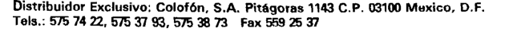
بيانات الموزع كما طُبعت في المصدر